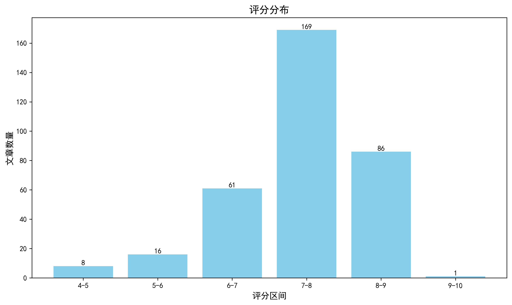

神经科学快讯·第017期 北大团队 Science 新作：忆阻器打造神经动力学芯片，皮层重建速度比 A100 快近百倍 (2026-07-05)
📊 本周概览
- 头条推荐: 1 篇
- 深度解读: 195 篇
- 简要提及: 104 篇
- 跨界启发: 0 篇
- 已过滤: 356 篇
🌏 环球视野

🌍 国家/地区分布 TOP 10
| 排名 | 国家 | 文章数量 |
|---|---|---|
| 1 | United States | 262 |
| 2 | China | 136 |
| 3 | United Kingdom | 64 |
| 4 | Germany | 56 |
| 5 | Switzerland | 34 |
| 6 | Canada | 30 |
| 7 | France | 23 |
| 8 | Italy | 19 |
| 9 | Korea | 19 |
| 10 | Japan | 19 |
总计: 662 篇文章
🏢 研究机构 TOP 10
| 排名 | 机构 | 文章数量 |
|---|---|---|
| 1 | Chinese Academy of Sciences | 21 |
| 2 | Fudan University | 16 |
| 3 | Tsinghua University | 13 |
| 4 | University of Oxford | 13 |
| 5 | Stanford University | 11 |
| 6 | Howard Hughes Medical Institute | 11 |
| 7 | McGill University | 10 |
| 8 | University of Chinese Academy of Sciences | 10 |
| 9 | University of Cambridge | 10 |
| 10 | Zhejiang University | 10 |
📊 评分分布
| 评分区间 | 文章数量 |
|---|---|
| 4-5 | 8 |
| 5-6 | 16 |
| 6-7 | 61 |
| 7-8 | 169 |
| 8-9 | 86 |
| 9-10 | 1 |
总计: 341 篇评分文章
📈 各领域文章分布
| 领域 | 深度解读 | 简要提及 | 总计 |
|---|---|---|---|
| 未知领域 | 0 | 57 | 57 |
| 系统与环路神经科学 | 49 | 7 | 56 |
| 认知神经科学 | 37 | 12 | 49 |
| 分子与细胞神经科学 | 29 | 5 | 34 |
| 感觉与运动神经科学 | 25 | 9 | 34 |
| 临床与转化神经科学 | 24 | 5 | 29 |
| 计算与理论神经科学 | 10 | 3 | 13 |
| 方法学 | 9 | 4 | 13 |
| 发育神经科学 | 7 | 2 | 9 |
| 社会与情感神经科学 | 5 | 0 | 5 |
合计: 深度解读 195 篇，简要提及 104 篇，共 299 篇
🥇 头条推荐（9.0+分）
中文标题: 基于相变忆阻器的亚10毫秒神经动力学系统
作者: Cai L, Tao Y, Xie C et al.
关键词: 神经形态计算, 相变忆阻器, 实时计算, 神经网络硬件, 加速计算, 物理建模
亮点: 基于相变忆存器的极低延迟神经动力系统硬件加速
核心优势: 实现了亚10毫秒（2.12毫秒）的NDS计算延迟，比A100快两个数量级，且功耗大幅降低。
研究局限: 当前仅验证了表面重建任务，在更复杂神经动力学模型上的表现未知。
目标读者: 神经形态计算、实时仿真、AI加速器、计算神经科学研究者
推荐理由: 这篇论文通过相变忆阻器硬件实现了亚10毫秒延迟的神经动力系统，极大加速了高保真物理建模所需的实时、密集变形场计算。对于神经科学领域，它展示了如何利用非易失性存储器的模拟计算能力构建超低延迟的神经形态计算平台，有望推动实时神经模拟、脑启发计算及边缘智能的发展。
📚 精选文献（按领域分类）
临床与转化神经科学
中文标题: 关岛肌萎缩侧索硬化/帕金森-痴呆复合体（ALS/PDC）表现为脑和脊髓中类似CTE的tau蛋白种子
作者: Saez-Calveras, N., Verheijen, B. M., Morgan, N. et al.
关键词: tau蛋白病, 朊病毒样传播, 神经退行性疾病, 种子扩增, 脑与脊髓, ALS/PDC
亮点: 利用Ala扫描技术揭示ALS/PDC tau种子的CTE样特征，为tauopathy分类提供关键证据
核心优势: 首次在脊髓中检测到tau播种活性，并通过Ala扫描精细刻画其与CTE tau的高度相似性
研究局限: 样本量有限，基于尸检组织，缺乏活体或动物模型验证，且Ala扫描结果需结构生物学进一步确认
目标读者: 神经退行性疾病研究者、tauopathy及朊病毒样传播领域专家、神经病理学家
推荐理由: 该研究在关岛ALS/PDC患者脑与脊髓中鉴定出类似慢性创伤性脑病（CTE）的tau种子，支持tau蛋白病的跨脑区朊病毒样传播假说。通过FRET生物传感器和种子扩增技术，证实了疾病特异的tau构象异质性，为理解神经退行性疾病的传播机制和开发诊断标志物提供了新证据。
中文标题: 工程化纳米纤维介导的时序性化学免疫疗法抵抗胶质母细胞瘤术后动态免疫抑制
作者: Mingjie Song, Ziru Zhang, Yang Ding
关键词: 工程化纳米纤维, 时间序贯治疗, 胶质母细胞瘤, 术后免疫抑制, 联合免疫疗法
亮点: 时间错位化学免疫联合疗法通过工程化纳米纤维抵抗胶质母细胞瘤术后动态免疫抑制
核心优势: 创新性地利用时间错放策略结合纳米纤维载体，精准应对术后免疫抑制微环境的动态变化，为GBM治疗提供新思路。
研究局限: 仅限于术后模型，缺乏大型动物及临床试验数据；纳米纤维的长期生物相容性和降解产物安全性仍需深入评估。
目标读者: 神经肿瘤学家、纳米医学研究者、免疫治疗及生物材料专家
推荐理由: 该研究针对胶质母细胞瘤术后微环境中的动态免疫抑制，设计了一种时间序贯的化疗-免疫联合递送策略。通过可降解纳米纤维局部缓释，先消除髓源性抑制细胞，再激活抗肿瘤免疫，显著改善小鼠模型的生存期。这一工程化递送平台为克服脑肿瘤术后复发提供了可行的临床转化路径，对神经肿瘤领域有重要启发。
中文标题: 用GPNMB CAR-T细胞双重靶向胶质母细胞瘤的肿瘤-髓系细胞
作者: Neil Savage, Shan Grewal, Sheila K. Singh
关键词: CAR-T, 胶质母细胞瘤, 肿瘤微环境, 肿瘤相关巨噬细胞, 免疫治疗
亮点: 双靶点CAR-T细胞同时清除肿瘤和免疫抑制微环境，破解胶质母细胞瘤治疗困境
核心优势: 首次将GPNMB作为双区室抗原用于CAR-T治疗，实现肿瘤杀伤与微环境重塑协同
研究局限: 尚未在人体临床试验中验证，且可能存在的抗原逃逸和毒性问题未讨论
目标读者: 肿瘤免疫学、神经肿瘤学、CAR-T细胞治疗研究者
推荐理由: 该研究提出一种双靶向GPNMB的CAR-T细胞疗法，同时作用于胶质母细胞瘤细胞和肿瘤相关巨噬细胞，有效克服肿瘤异质性和免疫抑制微环境。在临床前模型中展现出持久抗肿瘤活性，为胶质母细胞瘤的免疫治疗提供了新策略，具有重要的转化潜力。
中文标题: 自伤与自杀中的内感受：范围综述与荟萃分析
作者: Bowen Liu, Zhijun Wu, Runsen Chen
关键词: 内感知, 自我伤害, 自杀, meta分析, 功能磁共振成像, 人类
亮点: 首次通过荟萃分析系统量化内感受各维度与自我伤害/自杀行为的关联强度及方向
核心优势: 对四大内感受维度（准确性、感受性、觉知、认知-情绪评价）进行分层分析，发现感受性（躯体信任与自我调节）的负相关关系具有一致性和中等效应量
研究局限: 纳入研究以横断面设计为主，因果推断受限；神经机制证据仅基于少数神经影像研究且缺乏直接因果测试
目标读者: 情绪障碍与自杀学研究、内感受神经科学、临床心理学及心身医学研究者
推荐理由: 该研究首次通过系统综述和meta分析定量综合了内感知维度（准确性、敏感性等）与自伤、自杀行为之间的关联强度，并概述了潜在神经环路（如岛叶、前扣带回）。结果提示内感知障碍可能是自杀风险的重要内表型，为早期识别和神经调控干预提供了新靶点。对理解身心交互的临床神经科学具有整合性价值。
中文标题: 分层微拓扑和相特异性递送功能性地恢复跨物种超长神经连续性
作者: Shuxin Dai, Feiyi Li, Zheheng Bao et al.
单位: Outpatient Department, Tianjin First Central Hospital, School Of Medicine, Nankai University, Tianjin, China; State Key Laboratory Of Medicinal Chemical Biology, The Key Laboratory Of Bioactive Materials, Ministry Of Education, College Of Life Science, Nankai University, Tianjin, China; Department Of Orthopaedics, Tianjin First Central Hospital, School Of Medicine, Nankai University, Tianjin, China 等
研究地区: China, United States
关键词: 神经导管, 微拓扑, 阶段性递送, 跨物种, 周围神经, 组织工程
亮点: 层次微拓扑与相位特异性递送协同修复超长神经缺损
核心优势: 在两种动物模型上证明合成导管可再生超长神经，效果与自体移植相当且在某些功能性指标上更优。
研究局限: 机制研究相对表浅，未深入解析微拓扑和递送如何影响细胞行为；长期稳定性和免疫反应有待进一步评估。
目标读者: 神经再生、生物材料、组织工程和转化医学研究者
推荐理由: 该研究开发了一种全合成神经导管，通过层级微拓扑结构和阶段性分子递送，在跨物种模型中实现了超长周围神经缺损的功能性再生。其创新在于将空间结构线索与时间生化信号同步，为临床转化提供了可行策略，对组织工程与神经修复领域具有重要示范意义。
中文标题: 从人脑活动非侵入性解码打字句子
作者: Jarod Lévy, Mingfang Zhang, Jean-Rémi King
资深研究者: Jean-Rémi King (h指数=38)
关键词: 非侵入式脑机接口, MEG/EEG, 深度学习, 句子解码, 神经假体, 人类
亮点: 利用MEG和深度学习从大脑活动非侵入式解码打字句子
核心优势: MEG结合深度学习实现低字符错误率的句子解码，显著优于EEG
研究局限: 错误率仍较高（29%），仅适用于打字任务且需记忆句子，离实际应用还有距离
目标读者: 脑机接口、神经解码、计算神经科学、临床神经康复研究者
推荐理由: 该研究首次实现从非侵入性脑信号（MEG/EEG）中解码完整打字的句子，为失去语言能力的患者提供了一种低风险的沟通途径。其核心创新在于Brain2Qwerty深度学习架构，能够有效提取时空模式并生成句子序列，在35名健康志愿者中验证了有效性。这一工作不仅推动了临床转化神经科学的发展，也为非侵入式脑机接口在语言解码中的实际应用提供了重要方法论参考。
中文标题: ST36电针改善神经源性勃起功能障碍
作者: Zhang W, Yang W, Zhang Y et al.
关键词: 电针, 大鼠, 自主神经调控, 神经调控, 海绵体神经, 勃起功能障碍
亮点: 从ST36电针到阴茎修复，揭示L-精氨酸/NO通路的关键作用
核心优势: 系统揭示了电针通过L-精氨酸/NO通路纠正交感-副交感失衡、缓解纤维化的机制，结合蛋白组学和药理学验证。
研究局限: 仅在大鼠模型验证，缺乏临床样本；电针参数未充分优化；样本量可能较小。
目标读者: 泌尿神经科学、电针机制、神经调控和勃起功能障碍研究者
推荐理由: 本研究利用电针ST36非侵入性调控外周自主神经平衡，在大鼠海绵体神经损伤模型中显著逆转交感亢进和副交感抑制，恢复勃起功能。该工作为神经调控治疗自主神经功能障碍提供了新策略，并揭示了外周自主神经可塑性的临床转化潜力。
中文标题: 认知功能与脑室（BraVe）模式的时间占用相关联
作者: Campo, F. F., Miguel, V., Brattico, E. et al.
关键词: fMRI, 人类, 脑室, 相位耦合, 认知功能, 正常衰老-痴呆谱系
亮点: 揭示脑室-大脑耦合模式作为认知功能的潜在生物标志物
核心优势: 大规模样本（2177次扫描）发现脑室-大脑耦合模式与认知功能广泛相关，且优于传统分子标志物。
研究局限: 相关性而非因果性，机制尚不清楚；样本可能存在选择偏倚；结果基于特定数据预处理和分析流程，泛化性待验证。
目标读者: 神经影像学、认知神经科学、神经退行性疾病研究者
推荐理由: 该研究创新性地将脑室信号纳入fMRI分析框架，通过相位耦合方法识别出多种脑室-灰质（BraVe）耦合模式，并发现其时间占用率与认知功能从正常衰老到痴呆的连续谱系密切相关。这一发现不仅揭示了脑室系统在脑功能中的动态角色，也为神经退行性疾病的早期预警和干预提供了潜在的影像学标志物。对临床转化研究者而言，该工作拓展了传统脑功能分析的边界，提示脑室-实质交互可能是理解神经保护机制的新维度。
中文标题: 揭示精神疾病中压力与遗传风险的相互作用：挑战、机制与最新进展
作者: Signe Penner-Goeke, Elisabeth B. Binder
单位: Department Genes And Environment, Max Planck Institute Of Psychiatry, Munich, Germany
资深研究者: Elisabeth B. Binder (h指数=119)
研究地区: Germany
关键词: 压力, 遗传风险, 基因-环境交互, 精神疾病, 机制, 疾病异质性
亮点: 系统整合应激与遗传风险交互机制，为精准精神医学提供框架
核心优势: 由领域权威撰写，全面覆盖从流行病学到分子机制的整合
研究局限: 综述依赖已发表数据，未提供新的实验数据或定量模型
目标读者: 精神遗传学、应激生物学、计算系统生物学及临床精神病学研究者
推荐理由: 本文系统梳理了压力暴露与遗传风险在精神疾病中的相互作用，强调了基因-环境交互在疾病异质性中的关键角色。对于致力于理解精神疾病发病机制和精准治疗的神经科学研究者而言，本文提供了整合遗传学、环境因素与临床表型的框架，为未来研究指明方向。
中文标题: 一种用于人散发性克雅氏病朊病毒稳健繁殖和定量的可扩展分裂细胞模型
作者: Nihat A, Arora P, Schmidt C et al.
关键词: 细胞模型, 朊病毒, 克雅氏病, 可扩展培养, 定量分析, 神经退行性疾病
亮点: 首个可扩展的分裂细胞模型实现人类散发性CJD朊病毒的稳健传播与定量
核心优势: 建立了可无限传代、稳定量化的人类朊病毒体外培养系统，解决了原代细胞模型不可扩展的瓶颈。
研究局限: 仅摘要评价，缺乏多模态验证和体内相关性数据，模型是否完全模拟天然朊病毒传播尚不确定。
目标读者: 朊病毒研究者、神经退行性疾病转化研究者、细胞工程与生物测定专家
推荐理由: 该研究建立了一种可大规模扩增的细胞模型，能够稳健地传播和定量人类散发性克雅氏病（sCJD）的朊病毒。这一突破解决了以往细胞模型在持续感染和定量准确性上的瓶颈，为研究朊病毒传播机制、筛选候选药物以及解析不同朊病毒株的生物学特性提供了高效工具。对于从事神经退行性疾病转化研究的学者而言，该模型有望加速从基础发现到临床干预的进程。
Time to reconsider risk for psychosis?
深度解读 7.5/10中文标题: 是时候重新考虑精神病风险了吗？
作者: Kaiser S, Kirschner M
关键词: 精神病风险, 风险评估, 临床预测, 早期干预, 生物标志物
亮点: 一份对精神病风险概念的批判性再评估，引发学界重新审视现有的风险模型。
核心优势: 以批判性视角挑战当前共识，提出整合新证据的框架。
研究局限: 作为观点文章缺乏原始数据支持，且可能过于简化复杂问题。
目标读者: 精神医学、临床心理学和神经科学研究者。
推荐理由: 该研究对当前精神病风险概念提出批判性反思，整合了纵向队列数据和生物标志物证据，提示传统风险模型可能过度依赖早期症状而忽视神经发育轨迹。研究呼吁采用动态风险评估框架，为精准预防和个体化干预提供了新方向，对精神病学临床实践具有重要启示。
Nerve-targeting and pain-promoting transcriptomic signatures in early Guillain-Barre syndrome
深度解读 7.5/10中文标题: 早期吉兰-巴雷综合征中靶向神经和促进疼痛的转录组特征
作者: O'Brien, J. A., Lesnak, J. B., Sankaranarayanan, I. et al.
关键词: 单细胞测序, RNA测序, 人类, 免疫细胞, 疼痛, 外周血
亮点: 单细胞转录组揭示AIDP型GBS中免疫细胞与神经损伤及疼痛的分子互作
核心优势: 结合单细胞和bulk RNA测序与配体-受体预测，发现CCL4等可干预靶点并体外验证。
研究局限: 缺乏体内因果验证，样本量小，机制深度有限。
目标读者: 神经免疫学、疼痛机制研究者和药物研发人员
推荐理由: 该研究通过单细胞和 bulk RNA 测序，系统描绘了早期格林-巴利综合征患者外周血免疫细胞的转录组变化，揭示了与神经靶向和疼痛促进相关的分子特征。为理解 AIDP 亚型的早期免疫损伤机制和慢性神经病理性疼痛的起源提供了关键数据，也为识别治疗靶点开辟了新路径。
中文标题: 靶向星形胶质细胞Dp71通过WTAP相关的m6A调控MMP2减轻创伤性脑损伤后血脑屏障破坏
作者: Jiheng Wang, Chenzhu Zhao, Bei Liu et al.
资深研究者: Zhihong Li (h指数=52); Yan Qu (h指数=49)
关键词: 星形胶质细胞, Dp71, m6A修饰, MMP2, 血脑屏障, 创伤性脑损伤
亮点: 星形胶质细胞Dp71通过WTAP介导的m6A修饰调控MMP2，为TBI后血脑屏障损伤提供新机制
核心优势: 将星形胶质细胞表观遗传调控与TBI病理紧密结合，揭示了Dp71-m6A-MMP2轴的新功能
研究局限: 全文未见，可能局限于小鼠模型，缺乏人类数据及临床相关性验证
目标读者: 神经科学、创伤性脑损伤、表观遗传学和血脑屏障研究者
推荐理由: 该研究揭示了创伤性脑损伤后星形胶质细胞Dp71通过WTAP介导的m6A修饰调控MMP2表达，进而影响血脑屏障完整性的新机制。靶向Dp71可显著减轻BBB破坏和神经功能缺损，为TBI治疗提供了极具转化潜力的分子靶点。研究将表观转录调控与胶质细胞生物学和脑损伤病理联系起来，拓展了对BBB损伤后修复机制的理解。
中文标题: 血液细胞毒性自然杀伤样CD8+CD94+ T细胞迁移到大脑并预测多发性硬化症严重程度
作者: Dugast E, Shah S, Vogel I et al.
关键词: 多发性硬化, CD8+T细胞, NK样细胞, 免疫细胞迁移, 单细胞测序, 疾病严重程度预测
亮点: 发现血液中细胞毒性CD8+CD94+T细胞迁移至大脑并预测多发性硬化严重程度，提供新生物标志物
核心优势: 首次将CD8+CD94+T细胞亚群与MS严重程度预测直接关联，具有潜在临床转化价值
研究局限: 基于摘要信息有限，缺乏机制验证和因果关系的实验证据
目标读者: 神经免疫学家、多发性硬化临床研究者、免疫治疗专家
推荐理由: 该研究鉴定了一群特殊的血液细胞毒性NK样CD8+CD94+T细胞，它们能迁移至大脑，且其频率与多发性硬化严重程度高度相关。这一发现不仅揭示了外周免疫细胞参与中枢神经系统病理的新机制，还为MS的预后评估提供了潜在的生物标志物，具有重要的临床转化价值。
中文标题: 弗里德赖希共济失调中鞘脂代谢酶的失调：体外和体内对治疗靶向的见解
作者: Ramchunder Z, Kalef-Ezra E, Suleman S et al.
关键词: Friedreich's ataxia, 鞘脂代谢, 分子靶点, 体外体内模型, 神经退行性疾病, 线粒体功能障碍
亮点: 首次系统揭示鞘脂代谢酶在FRDA中的失调及其作为治疗靶点的潜力
核心优势: 利用多种模型（体外和体内）验证了鞘脂代谢酶失调与FRDA病理的因果关系，并证明了靶向调控可改善线粒体功能和frataxin表达。
研究局限: 缺乏临床样本验证，且未阐明具体分子机制（如酶活性调控的上下游信号），尚处于早期概念验证阶段。
目标读者: 神经退行性疾病研究者、脂质代谢领域学者、FRDA基础与转化研究科学家
推荐理由: 本研究系统揭示了Friedreich's ataxia（FRDA）中鞘脂代谢酶的失调模式，通过体外和体内模型验证了其与frataxin缺乏的因果关联。这一发现为FRDA这一目前仅有有限治疗方案的遗传性神经退行性疾病提供了全新的分子靶点，有望推动针对鞘脂代谢的治疗策略进入临床前评估。对神经退行性疾病研究者而言，该工作不仅拓展了FRDA的病理机制认知，也提示鞘脂紊乱可能在其他线粒体相关神经疾病中具有共通性。
Plasma proteomic profiles of Alzheimer’s disease and neurodegeneration in African cohorts
深度解读 7.4/10中文标题: 非洲人群阿尔茨海默病和神经变性的血浆蛋白质组学特征
作者: Ilaria Pola, Tolulope Akinyemi, Andrea L. Benedet
关键词: 血浆蛋白质组学, 阿尔茨海默病, 神经退行性病变, 非洲人群, 生物标志物, 种族多样性
亮点: 首次在非洲人群中系统揭示血浆蛋白质组与阿尔茨海默病及神经退行性变的关联
核心优势: 聚焦非洲人群，弥补了种族多样性在AD蛋白质组学研究中的空白
研究局限: 缺乏纵向验证和多模态影像学确认，结论稳健性待加强
目标读者: 阿尔茨海默病研究者、蛋白质组学专家、神经退行性疾病流行病学家
推荐理由: 该研究首次在非洲人群中大规模分析血浆蛋白质组学与阿尔茨海默病及神经退行性疾病的关联，填补了种族多样性研究的关键空白。通过蛋白质组学技术鉴定出与疾病进展相关的新标志物，为全球范围内AD生物标志物的跨种族验证提供了重要数据支持，对临床转化和精准医学具有深远意义。
Patient cerebral organoids capture Alzheimers disease proteomic biomarkers and drug targets
深度解读 7.3/10中文标题: 患者脑类器官捕获阿尔茨海默病蛋白质组学生物标志物和药物靶点
作者: Thomson, S., Li, X. C., Walker, S. et al.
关键词: 脑类器官, 蛋白质组学, 阿尔茨海默病, 生物标志物, iPSC, 质谱
亮点: 多平台蛋白质组学基准揭示患者脑类器官再现人类阿尔茨海默病生物标志物和药物靶点
核心优势: 首次在三个蛋白质组学平台上系统对比患者脑类器官与大规模临床队列，为类器官模型转化价值提供重要证据
研究局限: 仅约四分之一高度可重复的疾病相关变化在类器官中再现，且缺乏功能验证和因果机制研究
目标读者: 阿尔茨海默病研究者、干细胞与类器官建模、蛋白质组学和转化医学研究者
推荐理由: 该研究首次将患者iPSC来源的脑类器官蛋白质组与大规模临床蛋白质组学平台（质谱、SomaScan、Olink）进行系统比较，验证了类器官模型在捕获AD生物标志物和药物靶点方面的效力。这一工作为AD药物筛选和机制研究提供了更可靠的体外人类模型参考，也为类器官技术向转化医学应用迈出了关键一步。
中文标题: 精神分裂症疾病修饰的靶点：新发现增加了免疫补体系统参与的证据
作者: Howes OD, Arumuham A, Heurich M
关键词: 精神分裂症, 补体系统, 免疫炎症, 疾病修饰靶点, 人类, 全脑
亮点: 免疫补体系统在精神分裂症中的新证据支持其作为疾病修饰靶点的潜力
核心优势: 整合最新发现，强化了补体系统参与精神分裂症病理的假设
研究局限: 主要为相关性和间接证据，缺乏直接因果机制验证
目标读者: 精神疾病研究者、神经免疫学家及转化医学专家
推荐理由: 该研究为精神分裂症的疾病修饰治疗提供了关键新证据，进一步确立了免疫补体系统在其病理机制中的核心地位。通过多维度数据整合，揭示了补体相关基因与突触异常、神经炎症的关联，为开发靶向免疫途径的干预策略奠定了生物学基础。对推动精神疾病从症状控制向病因治疗转变具有重要意义。
Retinal hyper-reflective foci link retinal and cortical pathology in paediatric multiple sclerosis.
深度解读 7.2/10中文标题: 视网膜高反射灶连接儿童多发性硬化中的视网膜与皮质病理
作者: Hay CM, Mahjoub A, Vidarsson L et al.
关键词: 视网膜, 皮层, 儿科, 多发性硬化, OCT, 神经炎症
亮点: 视网膜生物标志物揭示儿童多发性硬化视网膜-皮层病理联系
核心优势: 首次在儿童MS队列中系统评估视网膜高反射灶与皮层损伤的关系
研究局限: 横断面设计，因果关系不明；样本量可能有限
目标读者: 神经病学、神经影像学、眼科学和儿科多发性硬化研究者
推荐理由: 该研究首次在儿科多发性硬化中系统揭示视网膜超反射灶作为视网膜病理标志物，并与皮层病变及临床残疾显著相关。利用OCT技术将视网膜微结构改变与中枢神经系统炎症脱髓鞘过程直接关联，为无创监测疾病进展和评估神经保护策略提供了新的影像学靶点，对理解神经退行性机制的早期阶段具有重要转化意义。
Dual-mode analysis of ischemic stroke based on urine SERS spectra and carotid B-ultrasound
深度解读 7.1/10中文标题: 基于尿液SERS光谱和颈动脉B超的缺血性脑卒中双模态分析
作者: Wenrou Yu, Zhaoxian Chen, Yao Liu et al.
单位: College Of Traditional Chinese Medicine And Food Engineering, Shanxi University Of Chinese Medicine, Jinzhong 030619, China; Ultrasonography Department, Department Of Neurology, Department Of Respiratory Medicine, Chongqing Emergency Medical Center, Chongqing University Central Hospital, Chongqing 400030, China; College Of Physics, Center Of Quantum Materials And Devices, Chongqing University, Chongqing 401331, China
资深研究者: Hui Wang (h指数=113)
研究地区: China
关键词: SERS光谱, 超声成像, 多模态融合, 人类, 缺血性脑卒中, 非侵入性监测
亮点: 多模态数据融合实现无创高频脑卒中监测
核心优势: 首次将尿液SERS光谱与颈动脉B超结合，通过机器学习建立跨维度分子-影像关联
研究局限: 样本量较小且缺乏外部验证，数据融合策略和模型可解释性有待深化
目标读者: 脑卒中诊疗、生物传感器、多模态数据分析及神经影像学研究者
推荐理由: 该研究创新性地将尿液表面增强拉曼光谱与颈动脉B超相结合，构建缺血性脑卒中的双模态分析框架。通过整合微观分子指纹与宏观血管病理信息，有效克服了单一检测手段在风险分层和动态监测中的局限性，为非侵入性、高频次卒中监测提供了新的技术路径。对临床神经科学而言，这种跨尺度数据融合策略有望提升二级预防的精准性，并启发其他脑血管疾病的诊断范式革新。
中文标题: 两种文字，两条通路：中风后假名-汉字失写症的背腹侧偏向
作者: Ito T, Higashiyama Y, Urano M et al.
关键词: 卒中, 失写症, 假名, 汉字, 背侧通路, 腹侧通路
亮点: 同一卒中患者中假名与汉字失写症背腹侧通路分离的神经心理学证据
核心优势: 首次在同一组患者中揭示两种文字系统损伤的神经通路特异性
研究局限: 样本量可能有限，且仅针对日语书写系统，通用性受限
目标读者: 神经语言学、神经心理学、失语症研究者
推荐理由: 该研究通过分析卒中后患者假名和汉字失写症的不同表现模式，揭示了背侧与腹侧通路在书写系统中的功能偏向。研究不仅为语言相关的脑功能偏侧化提供了新的证据，也为临床康复策略的制定提供了神经解剖学依据，对理解书写这一复杂认知过程的神经基础具有重要价值。
中文标题: 智力障碍中动力蛋白激活蛋白复合体功能紊乱
作者: Pan Y, Li H, Liao M et al.
关键词: 智力障碍, 动蛋白复合物, 遗传学, 蛋白质相互作用, 人类, 神经元功能
亮点: 揭示dynactin复合体在智力障碍中的新功能，为相关疾病的分子机制提供线索
核心优势: 首次系统阐明dynactin复合体功能缺陷与智力障碍的因果关系，结合多种模型验证
研究局限: 具体分子机制和下游效应通路尚不明确，缺乏人类神经元直接证据
目标读者: 神经发育障碍研究者、细胞生物学和分子遗传学专家
推荐理由: 该研究揭示了动蛋白复合物功能破坏在智力障碍发病中的关键作用，为理解细胞骨架动力学与认知功能障碍之间的联系提供了新视角。通过遗传学和分子生物学手段，作者阐明了该复合物突变如何影响神经元发育和突触可塑性，为未来的诊断和治疗策略奠定了分子基础。
中文标题: 癫痫-IEDs：一种用于从头皮脑电图中自动检测发作间期癫痫样放电的机器学习模型
作者: Ao R, Zhan P, Wang G et al.
摘要: 基于XGBoost的自动化IED检测模型，在临床EEG数据集上取得高灵敏度和准确率
优势: 开发了精简的10特征版本，便于临床部署；在独立队列中验证了泛化能力 局限: 特异性较低（71.54%），可能产生较多假阳性；仅在特定数据集上测试，跨中心泛化性未知 受众: 癫痫临床医生、脑电图技师、计算神经科学和机器学习研究者
中文标题: 急性间歇性低氧和急性间歇性高碳酸缺氧诱导慢性脊髓损伤患者的皮质-膈肌可塑性
作者: Bogard AT, Mir MJ, Sutor TW et al.
摘要: 首次比较急性间歇性低氧与联合轻度高碳酸血症在慢性脊髓损伤人群中诱导膈肌皮质脊髓可塑性的差异，揭示损伤特异性反应模式。
优势: 采用随机双盲交叉设计和贝叶斯层次模型，系统对比两种干预方案，发现加高碳酸血症可更可靠地缩短运动诱发电位潜伏期。 局限: 样本量较小（n=10），且损伤平面和严重程度不一，限制了结果的泛化性和亚组分析能力。 受众: 脊髓损伤康复、呼吸神经调控、神经可塑性及临床转化研究者
中文标题: D3营养保健品预补充改善MK-801诱导的精神分裂症小鼠模型中的行为、离子型受体和突触蛋白改变
作者: Komal, P., Eshwari, O., Golla, K. et al.
摘要: 维生素D3预处理改善精神分裂症模型症状的分子机制
优势: 结合体内外和生物信息学揭示VD对NMDA受体和nAChR的调控 局限: 仅使用单一模型和单一剂量，缺乏临床干预数据 受众: 精神疾病神经药理学、营养精神病学研究者
中文标题: 利用异质性T2加权MRI的影像组学无创筛查儿童弥漫性中线胶质瘤中的H3 K27M突变
作者: Arthur Zagitov, Alexander Beznosikov, Vladimir Bozhenko et al.
摘要: 利用常规T2加权MRI的放射组学特征为儿童弥漫性中线胶质瘤H3K27M突变提供无创筛查信号。
优势: 系统性评估了预处理和特征选择流程，并验证了放射组学作为辅助筛查工具的潜力。 局限: 样本量较小（98例），性能有限（准确率0.73），缺乏外部验证，不能替代组织诊断。 受众: 儿科神经肿瘤放射科、神经影像学家、计算放射组学研究者。
中文标题: 肿瘤治疗电场联合同步放化疗治疗胶质母细胞瘤：一项多中心分析
作者: Zhai M, Hu G, Shen G et al.
资深研究者: Li Y (h指数=60); Li Y (h指数=60)
摘要: 多中心回顾性数据评估TTFields延续治疗新诊断GBM的临床价值。
优势: 提供了真实世界证据，初步提示继续TTFields可能延长OS但统计不显著。 局限: 非随机回顾性设计，样本量小，混杂因素未完全控制。 受众: 神经肿瘤学临床医生和研究人员
分子与细胞神经科学
中文标题: BDnf转录的神经元活动依赖性成分在皮层抑制发育中的生物学功能
作者: Elizabeth J. Hong, Alejandra E. McCord, Michael E. Greenberg
资深研究者: Elizabeth J. Hong (h指数=18); Michael E. Greenberg (h指数=141)
关键词: BDNF, 转录调控, 发育, 皮层抑制, 转基因小鼠, 可塑性
亮点: 揭示活动依赖的Bdnf转录是皮层抑制性回路发育的关键调控机制
核心优势: 首次在体内证明Bdnf转录活性在抑制性神经元发育中的必要性，并明确其下游通路
研究局限: 未能完全区分不同Bdnf转录本亚型的功能，且主要关注发育早期
目标读者: 发育神经生物学、突触可塑性、神经精神疾病研究者
推荐理由: 该研究首次在体内证明Bdnf的活性依赖转录（特别是外显子IV）对GABA能突触传递和抑制环路的发育成熟不可或缺。通过精巧的转基因小鼠模型和分子分析，揭示了感觉经验依赖的BDNF表达如何调控抑制性神经元的突触形成与功能。这一发现为理解发育关键期皮层抑制的建立提供了关键的分子机制，并对神经发育疾病的病理研究具有启示意义。
中文标题: 纠正先天性肌无力相关乙酰胆碱受体缺陷
作者: Huanhuan Li, Nuriya Mukhtasimova, Ryan E. Hibbs
资深研究者: Ryan E. Hibbs (h指数=31)
关键词: 乙酰胆碱受体, 先天性肌无力综合征, 受体缺陷, 结构机制, 离子通道, 精准医疗
亮点: 结构揭示先天性肌无力综合征突变受体缺陷机制及药物纠正原理
核心优势: 首次发现快速通道突变受体的隐蔽变构位点，并揭示慢通道突变的选择性孔阻断机制
研究局限: 变构位点的突变特异性可能限制广泛临床应用
目标读者: 神经肌肉疾病研究者、结构生物学家、药理学家
推荐理由: 该研究通过解析先天性肌无力综合征相关的乙酰胆碱受体突变结构，揭示了受体功能缺陷的分子机制，并提出了针对性的纠正策略。工作不仅深化了对神经肌肉接头传递障碍的理解，还为开发基于结构的精准疗法提供了关键依据，对神经遗传疾病治疗具有重要转化意义。
Temporal regulation of human reactive astrocytes reveals their capacity for antigen presentation
深度解读 8.7/10中文标题: 人类反应性星形胶质细胞的时间调控揭示其抗原呈递能力
作者: Emily Jane Hill, Caitlin Sojka, Maureen McGuirk Sampson et al.
单位: Department Of Cell Biology, Emory University School Of Medicine, Atlanta, Ga, Usa; Department Of Human Genetics, Emory University School Of Medicine, Atlanta, Ga, Usa; Department Of Cellular And Molecular Biology, University Of Michigan, Ann Arbor, Mi, Usa
资深研究者: Sriram Venneti (h指数=52); Steven A. Sloan (h指数=31)
研究地区: United States
关键词: 星形胶质细胞, 类脑器官, 人类, 炎症, 转录组, 染色质可及性
亮点: 人类反应性星形胶质细胞在慢性炎症下获得抗原提呈能力，并提呈神经元碎片。
核心优势: 首次在人源模型中系统揭示星形胶质细胞在慢性炎症下获得MHC II类抗原提呈功能，并通过多种技术验证其生理相关性。
研究局限: 主要基于体外类器官和离体组织切片，缺乏在体内完整免疫微环境下的功能验证。
目标读者: 神经免疫学、星形胶质细胞生物学、神经炎症和神经退行性疾病研究者
推荐理由: 本研究利用人类皮层类脑器官和胎儿组织，首次系统描绘了炎症条件下反应性星形胶质细胞的时间动态变化，揭示了其短暂和持续暴露后截然不同的转录组与染色质可及性特征，并意外发现星形胶质细胞具备抗原呈递潜能。这一发现不仅为理解星形胶质细胞在中枢神经系统免疫中的角色提供了全新视角，也为构建人源化神经炎症模型和精准干预策略奠定了基础。
中文标题: 加速突触传递：重构突触囊泡快速释放需要12个SNAREpins
作者: Manindra Bera, Atrouli Chatterjee, Amit Koikkarah Aji et al.
单位: Department Of Biotechnological And Applied Clinical Sciences, University Of L'Aquila, L'Aquila, Italy; Department Of Neuromuscular Diseases, Ucl Institute Of Neurology, University College London, Queen Square, London Wc1N 3Bg, Uk; Department Of Cell Biology, Yale School Of Medicine, New Haven, Ct 06520, Usa 等
资深研究者: Henry Houlden (h指数=120)
研究地区: United States, United Kingdom, Italy, France
关键词: SNARE复合物, 突触小泡重建, 单分子计数, 融合动力学, 钙离子传感器
亮点: 定量揭示12个SNAREpin是快速突触释放的分子基础，疾病突变减少至6个导致延迟释放。
核心优势: 首次在重建系统中直接计数释放前准备释放囊泡的SNAREpin数目，结合疾病突变验证功能相关性。
研究局限: 基于体外重建系统，在体复杂环境可能不同；Synaptophysin的作用机制仍需进一步研究。
目标读者: 突触传递、神经递质释放、膜融合、神经疾病机制研究者
推荐理由: 该研究通过纯化SNARE蛋白、伴侣蛋白和钙离子传感器，在体外重建了与生理同步的快速突触小泡释放（<7毫秒），并利用单分子计数技术直接证明至少12个SNARE复合物（SNAREpins）协同工作是实现高速释放的分子基础。这一发现解决了长期以来关于SNARE如何驱动同步释放的争议，为理解突触传递的分子机制提供了定量框架，同时也展示了体外重建与单分子计数在突触研究中的强大潜力。
中文标题: 蜂群思维：微生物群落与记忆的形成
作者: Katona L, Cryan JF
关键词: 肠脑轴, 微生物组, 海马, 记忆, 小鼠, 行为学
亮点: 系统综述微生物组-肠-脑轴在记忆形成中的新角色，提出微生物群落作为记忆调控的整合因素。
核心优势: 全面覆盖该新兴领域的关键进展，提出微生物组与记忆可塑性之间的机制性联系，具有前瞻性框架。
研究局限: 作为综述类文章，缺乏原创实验数据，部分推断基于相关性而非因果性证据。
目标读者: 神经科学家、微生物组研究者、系统生物学家及对脑-肠互动感兴趣的学者。
推荐理由: 该研究揭示了肠道微生物群落通过调节海马突触可塑性和神经炎症来影响记忆形成的分子机制。利用无菌动物模型、微生物移植和组学技术，作者发现特定菌群代谢物能够直接作用于神经元信号通路，促进长时程增强。这一发现不仅将微生物-肠-脑轴的研究推进到记忆核心机制层面，也为通过干预微生物组改善认知功能提供了新靶点，对理解环境-基因交互在记忆中的角色具有重要意义。
VPS13C/PARK23 initiates lipid transfer and membrane remodeling for efficient lysosomal repair
深度解读 8.5/10中文标题: VPS13C/PARK23启动脂质转运和膜重塑以实现高效溶酶体修复
作者: Oluwatobi Andrew Adeosun, Christian Schröer, Joost C. M. Holthuis
单位: Molecular Cell Biology Section, Department Of Biology/Chemistry, Osnabrück University, Osnabrück, Germany
研究地区: Germany
关键词: VPS13C, 溶酶体损伤, 脂质转运, 膜重塑, 神经退行性疾病, 蛋白质组学
亮点: 揭示VPS13C在溶酶体损伤早期响应中的脂质转运与膜重塑新机制
核心优势: 首次系统阐明VPS13C通过ATG2C结构域感知膜损伤、启动脂质运输并促进内质网包裹受损溶酶体的修复途径
研究局限: 主要基于体外细胞模型，缺乏体内动物模型验证其与帕金森病病理的直接关联
目标读者: 细胞生物学家、神经退行性疾病研究者、脂质代谢和膜运输领域研究者
推荐理由: 该研究通过无偏蛋白质组学鉴定VPS13C/PARK23作为溶酶体损伤早期响应的关键脂质转运蛋白，揭示其通过ATG2C结构域感应膜损伤并启动脂质转移和膜重塑的机制。这一发现为理解溶酶体稳态与神经退行性疾病（如帕金森病）的关联提供了全新视角，并为开发针对溶酶体修复的治疗策略奠定了分子基础。
中文标题: Arc通过细胞外囊泡介导tau蛋白的细胞间传播
作者: Tyagi M, de Hoog E, Grega M et al.
关键词: 细胞外囊泡, tau蛋白, Arc基因, 阿尔茨海默病, 蛋白互作, 小鼠模型
亮点: 揭示神经可塑性基因Arc作为tau在细胞外囊泡中包装和传播的关键因子，为阿尔茨海默病病理扩散提供新机制
核心优势: 首次证明Arc蛋白直接与tau相互作用并调控其在神经元胞外囊泡中的包装和细胞间传播，结合多种小鼠模型和人脑样本提供多层级证据
研究局限: Arc敲除后细胞内tau积累和毒性增加有限，且传播缺失是否完全由EV通路导致尚需更直接证据；机制细节（如Arc-tau相互作用的精确结构域）未完全阐明
目标读者: 神经退行性疾病研究者、细胞外囊泡生物学专家、阿尔茨海默病病理机制研究者
推荐理由: 该研究揭示了神经活动依赖的即刻早期基因Arc通过直接蛋白互作介导tau蛋白在细胞外囊泡中的释放和传播，为tau病理的跨细胞扩散提供了全新的分子机制。利用Arc敲除小鼠模型证实了Arc对tau在脑源性EV中的富集和种子活性的关键作用，并在人脑样本中验证了Arc与tau的共包装。这一发现不仅加深了对tau传播机制的理解，也为阿尔茨海默病等tau蛋白病的治疗干预提供了潜在靶点。
中文标题: 通过可分离的mTORC1和mTORC2通路对神经元生长和兴奋性的缩放调控
作者: Abdulkareem, A. F., Elste, N. H., Younger, R. et al.
关键词: PTEN, mTORC1, mTORC2, 神经元生长, 内在兴奋性, 电生理
亮点: 揭示PTEN通过mTORC1和mTORC2通路分别控制神经元生长与兴奋性的可分离机制，为神经发育疾病提供新见解
核心优势: 通过多模态实验（基因敲除、磷蛋白质组学、电生理、行为学）系统解离了PTEN调控生长和兴奋性的两条独立通路，机制清晰且具有生理病理相关性
研究局限: 结论主要基于小鼠模型和体外实验，人类神经元的泛化性需验证；部分通路机制（如BK通道调控）的直接证据尚待进一步确认
目标读者: 神经发育生物学、癫痫与自闭症研究、细胞信号转导、计算神经科学领域的研究者
推荐理由: 这项研究通过基因敲除、磷酸化蛋白质组学和电生理学，巧妙地将PTEN下游的mTORC1和mTORC2通路分离，分别控制神经元的大小和内在兴奋性。它揭示了一个长期困扰神经科学的问题：神经元在生长过程中如何维持适当的放电活动？PTEN缺失导致细胞肥大和兴奋性增加，但mTORC1阻断仅挽救生长而不纠正放电，而mTORC2阻断则恢复兴奋性。这一发现不仅解释了肿瘤抑制基因PTEN在神经功能中的多重角色，也为理解神经发育疾病（如自闭症、癫痫）中兴奋性失调的分子基础提供了新框架。
中文标题: 一种与疾病相关的运动神经元状态在ALS中先于细胞死亡出现
作者: Gautier O, Blum JA, Nguyen TP et al.
关键词: 单核RNA-seq, 染色质可及性, 空间转录组, 小鼠, 脊髓, ALS
亮点: 首次通过时空多组学定义ALS中一种保守的、基因关联的疾病相关运动神经元状态（DM），揭示其调控网络。
核心优势: 综合单核转录组、染色质可及性及空间转录组，在小鼠和人类中验证了DM状态，并找到了与遗传风险相关的调控元件。
研究局限: 主要基于SOD1-G93A小鼠模型，人类数据仅为snRNA-seq验证，因果关系和普适性需更多实验支持。
目标读者: 神经退行性疾病、单细胞组学、计算生物学和ALS研究者
推荐理由: 该研究通过纵向单核转录组、染色质可及性和空间转录组分析，在SOD1-G93A小鼠模型中揭示了ALS中易感α运动神经元退行性变的关键分子事件，并定义了“疾病相关运动神经元（DMs）”这一新颖细胞状态。研究鉴定了调控健康细胞向DM转变的转录因子网络，为理解运动神经元选择性脆弱性及开发新型治疗策略提供了重要的分子靶点。
Local signals, systemic decline.
深度解读 8.1/10中文标题: 局部信号，系统性衰退
作者: Gültekin Y, Vander Heiden MG
关键词: 高脂饮食, 肿瘤-神经信号, 恶病质, 小鼠, 外周神经
亮点: 揭示高脂饮食通过肿瘤-神经信号促进恶病质的机制
核心优势: 首次建立高脂饮食与肿瘤-神经信号直接联系并驱动恶病质的小鼠模型
研究局限: 仅基于小鼠模型，缺乏人体数据验证，机制细节尚不清晰
目标读者: 肿瘤代谢、神经科学和恶病质研究者
推荐理由: 本研究揭示了高脂饮食通过增强肿瘤-神经信号促进恶病质的新机制，为理解代谢状态如何影响神经-肿瘤互作提供了分子层面的见解。研究不仅扩展了我们对恶病质发病机制的认识，也为开发针对肿瘤-神经通路的干预策略提供了潜在靶点，对神经科学和肿瘤代谢交叉领域具有重要价值。
中文标题: TGF-β1诱导的内皮细胞胞吞转运导致衰老期间血脑屏障泄漏
作者: Fang C, Ma Y, Wei P et al.
关键词: TGF-β1, 血脑屏障, 转胞吞作用, 衰老, caveolin-1, AAV
亮点: 揭示TGF-β1信号通过抑制Mfsd2a促进内皮转胞吞是衰老期血脑屏障渗漏的核心机制，提供潜在治疗靶点
核心优势: 系统鉴定TGF-β1-Mfsd2a-转胞吞轴在衰老BBB渗漏中的核心作用，并利用多重遗传和药理学方法验证因果性
研究局限: 仅在啮齿类动物中验证，缺乏人类或灵长类数据，且未阐明与阿尔茨海默病等疾病的具体关联
目标读者: 神经血管生物学、衰老研究、神经退行性疾病及血脑屏障研究学者
推荐理由: 该研究揭示衰老过程中血脑屏障渗漏的新机制：主要由内皮细胞caveolar transcytosis增加驱动，而非紧密连接破坏。TGF-β1是关键调控因子，通过干预Mfsd2a或caveolin-1可逆转渗漏。为理解年龄相关脑血管疾病和神经退行性疾病提供了重要基础，并提示潜在治疗靶点。
中文标题: 钙依赖性突触蛋白质组学揭示活跃突触中的EGFR信号
作者: Yong, A. J. H., Wang, Y., Oses-Prieto, J. A. et al.
关键词: 突触蛋白组学, 钙依赖性标记, Cal-ID, EGFR信号, 活性突触, 生物素连接酶
亮点: 开发活动依赖性突触蛋白质组学新技术，揭示EGFR信号在突触成熟和记忆中的新机制
核心优势: 原创性技术synaptic Cal-ID实现了对活体动物活跃突触的蛋白质组学分析，并鉴定出新的突触蛋白及其协同促进EGFR信号的功能
研究局限: 需要更多实验验证synaptic Cal-ID的特异性和效率，以及EGFR信号在突触可塑性中的精确下游机制
目标读者: 突触生物学、蛋白质组学、神经可塑性和记忆机制研究者
推荐理由: 该研究开发了一种突触靶向的钙依赖性生物素连接酶（synaptic Cal-ID），能够特异性标记活跃突触的蛋白质组，解决了在完整神经环路中分析活性依赖性突触重塑的难题。利用该方法，作者发现EGFR信号在活性突触中富集，提示其在突触可塑性中的新角色。这一技术为解析突触功能动态提供了强大工具，有望推动对突触成熟与可塑性分子机制的理解。
中文标题: 通过阻断纤维蛋白诱导的小胶质细胞激活恢复阿尔茨海默病中神经元过度活跃的弹性与神经免疫互作组
作者: Yan, Z., Mendiola, A. S., Lauderdale, K. et al.
关键词: 阿尔茨海默病, 小胶质细胞, 纤维蛋白, 神经元过度活跃, 神经免疫, 小鼠模型
亮点: 揭示纤维蛋白通过破坏微胶质-神经元互作促进阿尔茨海默病神经元过度兴奋的新机制
核心优势: 首次建立纤维蛋白-微胶质-神经元轴在AD神经元网络功能障碍中的作用，并提供多模态证据
研究局限: 预印本未经同行评审，且人类数据仅为相关性，因果性主要在动物模型中建立
目标读者: 阿尔茨海默病研究者、神经免疫学、血管生物学、突触可塑性领域
推荐理由: 该研究揭示了阿尔茨海默病中血管因子纤维蛋白通过激活小胶质细胞引发神经元过度活跃的新机制，并证明阻断纤维蛋白-小胶质细胞相互作用可恢复神经免疫交互稳态、改善认知行为。这一发现为AD早期神经环路功能障碍提供了血管-免疫-神经元轴的新解释，并为开发靶向纤维蛋白的治疗策略提供了重要依据。
中文标题: 适度调节微胶质细胞适应：通过Ptpn6调控TREM2信号
作者: Beatrice Paola Festa, Kiavash Movahedi
单位: Brain And Systems Immunology Laboratory, Brussels Center For Immunology (Bcim), Vrije Universiteit Brussel, Brussels, Belgium; Movahedi@Vub; Electronic Address: Kiavash
资深研究者: Kiavash Movahedi (h指数=36)
关键词: 小胶质细胞, TREM2, Ptpn6, DAM激活, 小鼠, 阿尔茨海默病
亮点: 揭示小胶质细胞TREM2信号阈值在皮质和白质中的区域差异性
核心优势: 提出了TREM2信号部分抑制可保持有益效应而避免有害效应的新观点
研究局限: 仅基于单篇文献，缺乏广泛验证
目标读者: 小胶质细胞生物学、神经炎症、阿尔茨海默病研究者
推荐理由: 该研究揭示了Ptpn6（SHP-1）作为TREM2信号的关键负调节因子，精细调控小胶质细胞的存活和疾病相关激活（DAM）状态。完全缺失Ptpn6虽能增强淀粉样蛋白清除并保护皮层神经突，但代价是引发白质退化；而部分下调则在保持益处的同时避免了损伤。这一发现展示了小胶质细胞激活状态具有区域可分离的阈值，为基于小胶质细胞的阿尔茨海默病治疗提供了精准调控新思路。
Artificial light pollution disrupts sleep and neuronal genomic stability in wild reef fish.
深度解读 7.9/10中文标题: 人工光污染破坏野生珊瑚鱼的睡眠和神经元基因组稳定性
作者: Ben-Ezra S, Harpaz R, Krayden G et al.
关键词: 人造光污染, 睡眠, 基因组稳定性, 行为学, 鱼类, 神经毒性
亮点: 首次在野外珊瑚鱼中建立人工夜光→睡眠紊乱→神经元基因组损伤的因果链
核心优势: 实验室与野外多环境验证，行为与分子证据结合，直接链接环境压力与神经元健康
研究局限: 单一物种，未探究DNA损伤的长期后果与修复机制
目标读者: 海洋生态学、行为生态学、睡眠生物学、环境神经科学研究者
推荐理由: 该研究首次在野生珊瑚鱼中揭示了人工夜间光照（ALAN）通过扰乱睡眠和诱导神经元基因组不稳定性来损害神经健康的机制。结合野外与实验室观察，发现ALAN增加领土攻击和夜间觅食，减少睡眠时长与巩固，并导致神经元DNA损伤。这一发现为理解光污染对海洋脊椎动物神经系统的细胞毒性提供了新视角，也为睡眠在维持基因组完整性中的保守作用提供了生态证据。
中文标题: RhoGAP54D促进果蝇神经干细胞细胞大小不对称并抑制脉冲式肌球蛋白活性
作者: Loyer N, Li G, Januschke J
关键词: 果蝇, 神经干细胞, 不对称分裂, 肌球蛋白, RhoGAP54D, 活细胞成像
亮点: 揭示RhoGAP54D通过时空特异性定位同时抑制脉冲收缩和促进子细胞大小不对称的双重调控机制
核心优势: 系统鉴定并揭示了RhoGAP54D在神经母细胞分裂中的双重角色，特别是其罕见的顶端皮质定位，将极性信号与肌球蛋白活性、细胞大小不对称直接联系
研究局限: RhoGAP54D招募及抑制脉冲收缩的分子细节尚不完全清楚，PsGEF作为scaffold的具体作用机制需进一步验证
目标读者: 神经干细胞、细胞极性、细胞骨架动力学及不对称分裂领域研究者
推荐理由: 该研究揭示了RhoGAP54D在果蝇神经干细胞不对称分裂中的关键作用，通过抑制脉冲式肌球蛋白活性来促进子细胞大小不对称。这一发现为理解干细胞命运决定中皮层动力学的分子调控提供了新机制，对神经发生和干细胞生物学领域具有重要价值。
中文标题: 神经干细胞和祖细胞中Echs1缺失通过内质网应激激活和脂质代谢重编程损害神经发生
作者: Chun-Hui Duan, Pei-Pei Liu, Chang-Mei Liu
关键词: Echs1, 内质网应激, 脂质代谢重编程, 神经发生, 神经干细胞, 小鼠
亮点: 揭示Echs1缺失通过ER应激和脂质代谢重编程损害神经发生的新机制
核心优势: 首次阐明Echs1在神经干/祖细胞中的关键代谢调控作用及其与ER应激的关联
研究局限: 主要基于体外或小鼠模型，人类验证不足；机制细节（如脂质代谢中间产物的具体作用）可能未完全阐明
目标读者: 神经发育生物学、代谢神经科学、干细胞生物学研究者
推荐理由: 本研究揭示了Echs1缺失通过激活内质网应激和重塑脂质代谢阻碍神经干细胞向神经元分化的机制，为理解神经发育过程中代谢与应激的交叉调控提供了全新视角。该发现不仅深化了我们对神经发生分子基础的认识，也可能为小头畸形等神经发育疾病的治疗指明新靶点。
中文标题: TDP-43亚型塑造阿尔茨海默病中的转录组特征
作者: Wang, X., Walker, A. C., Reeves, M. M. et al.
关键词: 转录组学, 人类, 海马, TDP-43, 阿尔茨海默病, 神经病理学
亮点: 系统分离TDP-43与Tau的病理信号，揭示AD中TDP-43亚型依赖的自主转录程序
核心优势: 通过多队列区域转录组学与定量病理学结合，创新性解耦混合蛋白病的分子特征
研究局限: 基于死后组织，缺乏单细胞分辨率，且预印本未经同行评审
目标读者: 神经病理学、阿尔茨海默病研究、转录组学及计算生物学研究者
推荐理由: 该研究通过区域特异性转录组分析，区分了TDP-43病理独立于Tau和Aβ的分子特征，揭示了TDP-43亚型驱动阿尔茨海默病异质性的自主机制。对理解AD共病病理及精准分型有重要价值。
中文标题: 神经肽信号与血脑屏障在果蝇中产生持久的应激诱导内部状态
作者: Alia AG, Hu X, Gu Y et al.
关键词: 神经肽, 血脑屏障, 果蝇, 应激, 内部状态, 遗传学
亮点: 神经肽信号与血脑屏障协同驱动果蝇持久压力内部状态的机制
核心优势: 首次揭示神经肽和血脑屏障的相互作用如何产生和维持持续性的压力内部状态，为理解行为状态的长期调控提供新机制。
研究局限: 果蝇模型与哺乳动物血脑屏障的差异可能限制直接转化；实验证据主要基于遗传和行为操纵，需进一步验证分子细节。
目标读者: 神经科学研究者、果蝇遗传学家、压力与情绪行为神经生物学家
推荐理由: 本研究揭示了神经肽信号与血脑屏障协同作用，在果蝇中产生并维持持久的应激诱导内部状态。通过分子遗传学手段，作者阐明了神经肽向血脑屏障传递信号、进而调控全身状态的机制。这一发现为理解内部状态的细胞和分子基础提供了新视角，对研究应激相关神经精神疾病的机制也有启示意义。
Presynaptic Vesicles Supply Membrane for Axonal Bouton Enlargement during Long Term Potentiation.
深度解读 7.6/10中文标题: 突触前囊泡在长时程增强期间为轴突膨大提供膜
作者: Kirk LM, Garcia GC, Hanka DC et al.
关键词: 突触前囊泡, 长时程增强, 轴突按钮, 电镜, 小鼠, 海马
亮点: 突触前囊泡膜供给驱动LTP时轴突末梢膨大的直接证据
核心优势: 首次直接证明LTP期间突触前囊泡膜为末梢膨大提供膜来源
研究局限: 可能局限于特定脑区或刺激范式，需在更多系统中验证
目标读者: 突触生理学、突触可塑性、囊泡运输和神经递质释放研究者
推荐理由: 该研究通过超微结构分析和功能成像，首次直接证明突触前囊泡在LTP期间为轴突按钮的扩大提供膜材料。这一发现填补了突触可塑性中结构变化与囊泡循环之间的关键空白，为理解记忆存储的细胞机制提供了新的分子框架。对从事突触传递、可塑性和神经环路研究的人员具有重要参考价值。
中文标题: MicroFace描绘小胶质细胞形态重塑：揭示脑微损伤恢复过程中的空间区域和分叉轨迹
作者: Jariwala VD, Ponnamma S, Ravi VM et al.
关键词: 小胶质细胞, 形态重塑, 自动图像分析, 高通量, 皮层, 微损伤
亮点: 高吞吐量形态分析揭示脑损伤后小胶质细胞重塑的空间梯度与分叉轨迹
核心优势: 大规模自动化分析（27万+细胞）结合时空解析与转录组整合，描绘了小胶质细胞动态重塑的全景
研究局限: 基于免疫荧光图像，形态分类可能受限于分辨率；功能验证主要依赖转录组相关性，缺乏直接因果证据
目标读者: 神经免疫学、计算神经科学、图像分析和脑损伤修复研究者
推荐理由: 该研究开发了MicroFace自动化图像分析流水线，实现了对近28万个小胶质细胞的高通量形态重建与定量分析，揭示了脑微损伤后小胶质细胞形态重塑的时空梯度与分叉轨迹。该方法为神经炎症研究中细胞形态动态的大规模量化提供了有力工具，有望推动对胶质细胞功能状态异质性的深入理解。
中文标题: Ptpn6缺失揭示小胶质细胞介导的阿尔茨海默病病理保护及白质损伤效应
作者: Ainhoa Etxeberria, Seung-Hye Lee, Julia A. Kuhn et al.
资深研究者: Mike Costa (h指数=14); Christopher J. Bohlen (h指数=21)
关键词: Ptpn6, 小胶质细胞, 阿尔茨海默病, 白质损伤, 基因敲除, 神经保护
亮点: 小胶质细胞Ptpn6在阿尔茨海默病中的双重效应：保护斑块周围神经元，但剂量依赖性引发白质损伤
核心优势: 揭示同一基因在不同脑区产生相反效应的上下文依赖性机制，为免疫调节治疗提供重要平衡点
研究局限: 分子机制尚不完全清楚，不同脑区效应差异的深层次原因未充分解释
目标读者: 神经免疫学、阿尔茨海默病研究者、小胶质细胞生物学专家
推荐理由: 该研究通过全基因组筛选发现Ptpn6是小胶质细胞的关键调控因子，并利用基因敲除小鼠模型揭示了其在阿尔茨海默病中的双重作用：一方面保护斑块周围神经元，另一方面剂量依赖性地引发严重白质损伤。这一发现强调了小胶质细胞免疫反应的精细平衡，为开发针对先天性免疫系统的神经保护策略提供了重要警示和潜在靶点。
中文标题: WWOX参与亨廷顿病中的DNA损伤，但不参与体细胞不稳定性
作者: Petrozziello, T., McLean, Z. L., Boudi, A. et al.
关键词: 亨廷顿病, DNA损伤修复, WWOX, 基因组稳定性, 体细胞不稳定性, 神经退行性疾病
亮点: 发现 WWOX 独立于 ATM 促进亨廷顿病中 DNA 损伤，但不参与体细胞 CAG 重复不稳定性
核心优势: 首次在亨廷顿病中系统研究 WWOX 的作用，并揭示其独立于经典 ATM 通路的机制
研究局限: 主要基于体外细胞模型和人脑组织，缺乏体内因果验证；预印本未经同行评审
目标读者: 亨廷顿病研究、DNA 损伤修复、泛素化通路及神经退行性疾病领域研究者
推荐理由: 该研究聚焦亨廷顿病（HD）中DNA修复通路的关键调节因子WWOX，发现WWOX参与HD模型中的DNA损伤累积，但对CAG重复的体细胞不稳定性无影响。这一发现加深了我们对HD中DNA损伤修复机制的理解，并提示WWOX可能作为疾病修饰的潜在靶点，为后续机制研究与治疗策略提供了重要线索。
Late Endosome Transport by RILP-RAB7A Promotes Dendrite Arborization Independently of Degradation.
深度解读 7.4/10中文标题: RILP-RAB7A介导的晚期内体运输以不依赖于降解的方式促进树突分支
作者: Yap CC, Digilio L, McMahon LP et al.
关键词: RILP, RAB7A, 晚期内体, 树突树状化, 分子运输, 形态发生
亮点: 揭示RILP-RAB7A介导的晚期内体运输对树突分枝的非降解性促进作用，拓展内体功能认知。
核心优势: 首次将晚期内体运输与树突形态发生中独立于降解的功能联系起来。
研究局限: 未提供全文，可能缺乏对其他细胞类型或体内的验证。
目标读者: 神经发育生物学家、细胞生物学家、内体运输研究者。
推荐理由: 该研究揭示RILP-RAB7A介导的晚期内体运输在树突树状化中的非降解功能，独立于经典的内体-溶酶体降解途径。通过调控内体定位和运输，为树突形态发生提供了新的细胞机制，拓展了对内体功能多样性的认识，对理解神经元发育和可塑性具有重要意义。
中文标题: 用于解码皮层样和多巴胺能样诱导神经元蛋白质组景观的人类溶酶体贮积症工具包
作者: Kraus F, He Y, Jiang Y et al.
关键词: 蛋白质组学, 诱导神经元, 溶酶体贮积症, 人类, 工具包
亮点: 溶酶体贮积症诱导神经元蛋白质组工具，解码疾病特异性蛋白景观
核心优势: 系统描绘了溶酶体贮积症在皮层样和多巴胺能样诱导神经元中的细胞类型特异性蛋白质组图谱
研究局限: 体外诱导神经元模型与体内生理环境的差异可能限制发现的直接转化
目标读者: 神经退行性疾病、蛋白质组学、干细胞生物学和溶酶体生物学研究者
推荐理由: 该研究构建了一个整合人类诱导神经元（皮质样与多巴胺能样）与定量蛋白质组学的工具包，系统解码了多种溶酶体贮积症相关基因敲除后的蛋白组景观。其创新在于将疾病模型、细胞类型特异性和规模化蛋白质组分析相结合，为理解溶酶体功能障碍如何影响神经元蛋白稳态提供了高分辨率视角，并为筛选潜在干预靶点奠定了重要资源基础。
中文标题: 人神经元/小鼠胶质细胞共培养中的蛋白稳态和未折叠蛋白反应动态揭示了细胞特异的成熟反应
作者: Barny LA, Garcia SK, Houcek AJ et al.
关键词: 共培养, 蛋白质稳态, 未折叠蛋白反应, 人源神经元, 小鼠胶质细胞, 细胞特异性
亮点: 人-鼠共培养揭示神经元和胶质细胞不同的蛋白质稳态成熟进程
核心优势: 首次在人类神经元/小鼠胶质细胞共培养中动态追踪UPR，发现细胞特异性成熟反应
研究局限: 体外系统与体内生理条件的差异可能影响结论普适性；小鼠胶质细胞可能不完全模拟人类胶质细胞功能
目标读者: 神经科学、细胞生物学、蛋白质稳态研究者
推荐理由: 该研究通过建立人源神经元与小鼠胶质细胞的共培养体系，揭示了蛋白质稳态和未折叠蛋白反应（UPR）在神经元成熟过程中的细胞特异性动态。研究发现，神经元和胶质细胞对UPR激活的响应模式存在显著差异，且这种差异随成熟进程而改变，为理解神经退行性疾病中蛋白质错误折叠的细胞类型特异性机制提供了新的体外模型和分子见解。
中文标题: 全基因组筛选发现PLCG2抑制溶酶体GCase活性
作者: Lawrence J, Kulkarni VV, Tan CL et al.
关键词: 全基因组筛选, PLCG2, GCase, 溶酶体, 神经退行性疾病, 分子机制
亮点: 全基因组筛选揭示PLCG2作为溶酶体GCase的负调控因子，为神经退行性疾病药物开发提供新思路。
核心优势: 首次通过无偏筛选将PLCG2与GCase活性直接关联，为戈谢病和帕金森病研究提供新靶标。
研究局限: 仅基于体外细胞筛选，缺乏体内动物模型或患者样本验证，机制细节尚不明确。
目标读者: 神经退行性疾病研究者、溶酶体生物学和脂质代谢领域科学家
推荐理由: 该研究通过全基因组筛选发现PLCG2作为溶酶体GCase活性的负调控因子，揭示了PLCG2在鞘脂代谢和溶酶体功能调控中的新角色。鉴于GCase缺陷与帕金森病等神经退行性疾病的密切关联，这一发现不仅为理解疾病发病机制提供了新线索，也为开发靶向PLCG2的治疗策略奠定了分子基础。对从事神经退行性疾病机制研究的读者具有重要参考价值。
中文标题: 基因表达识别中枢神经系统对热应激的区域脆弱性
作者: Pagni, S., Bouchama, A., Sisodiya, S.
关键词: 热应激, 转录组学, 小脑, Purkinje神经元, 人脑类器官, 基因表达
亮点: 整合多组学数据揭示热应激下小脑神经元选择性易损的分子机制
核心优势: 首次整合人体、患者和类器官转录组数据，系统描绘热应激保守反应并定位小脑易感性分子基础
研究局限: 缺乏功能验证实验分析，所有分析基于公开数据，因果性不足
目标读者: 神经科学、热生理学、小脑功能与疾病研究者
推荐理由: 该研究通过整合人类热暴露、热射病患者及体外神经元的转录组数据，揭示了热应激下高度保守的转录程序，并鉴定了小脑Purkinje神经元选择性易感的分子基础。为理解中枢神经系统区域脆弱性提供了系统性转录组学视角，对热相关脑损伤的机制与干预具有重要参考价值。
中文标题: Tau蛋白作为线粒体功能和动力学的调节因子
作者: Tsakiri E, Campos-Marques C, Ploumi C et al.
关键词: Tau蛋白, 线粒体动力学, 阿尔茨海默病, 细胞骨架, 氧化应激
亮点: 揭示tau蛋白在调控线粒体动力学和功能中的新角色
核心优势: 将tau蛋白的功能扩展至线粒体调控，为神经退行性疾病机制提供新视角
研究局限: 缺乏详细实验数据和多模态验证，具体结论待实验支持
目标读者: 神经退行性疾病、线粒体生物学及细胞生物学研究者
推荐理由: 该研究将Tau蛋白的功能从传统的微管稳定拓展到线粒体动力学调控，揭示了Tau在维持线粒体形态、分布和功能中的新角色。通过调节线粒体分裂/融合平衡，Tau的异常磷酸化可能导致线粒体功能障碍，为阿尔茨海默病等神经退行性疾病的病理机制提供了新的分子解释。对于关注细胞骨架与细胞器互作的研究者具有重要参考价值。
中文标题: 非经典氨基酸掺入实现应激颗粒和TDP-43蛋白病的最小干扰标记
作者: Chen H, Wang H, Lu YN et al.
摘要: 利用非经典氨基酸掺入实现应激颗粒和TDP-43蛋白病的最小干扰标记
优势: 开发了低破坏性的新型标记方法，为研究活细胞中应激颗粒动态和TDP-43聚集提供了更生理的工具。 局限: 方法的普适性和体内验证尚不充分，可能仅适用于特定细胞类型或标记条件。 受众: 神经退行性疾病研究者、化学生物学家、蛋白质标记技术开发者
Injury-induced tau pathology promotes aggressive behavior in Drosophila without neurodegeneration.
简要提及 7.0/10中文标题: 损伤诱导的tau蛋白病理促进果蝇的攻击行为而不引起神经退行性变
作者: Maxson R, Smoyer CJ, Hampton MF et al.
摘要: 果蝇损伤诱导tau病理促进攻击行为，不依赖神经退行性变
优势: 在无神经退行性变的条件下，直接建立tau病理与攻击行为的因果关系 局限: 果蝇模型与哺乳动物tau病理的差异可能限制其转化价值 受众: 神经退行性疾病、果蝇遗传学、行为神经科学研究者
中文标题: 大大脑添加新型神经元：人类新皮层中纺锤神经元的分子和功能特征
作者: Lamsa K, Szegedi V
摘要: 系统综述人类新皮层纺锤体神经元的分子与功能特征及其进化意义
优势: 基于多模态人类脑组织数据，明确了纺锤体神经元作为独特细胞类型的分子和功能指纹 局限: 主要依赖单一研究组的数据，缺乏跨实验室或更广泛的比较验证 受众: 细胞类型分类、进化神经科学及人脑特异性结构研究者
Human astrocytes keep time with inflammation
简要提及 6.0/10中文标题: 人类星形胶质细胞随炎症计时
作者: Joshua E. Burda
资深研究者: Joshua E. Burda (h指数=16)
摘要: 时空维度解析炎症持续驱动人类星形胶质细胞反应状态的可塑性
优势: 发现人类星形胶质细胞在持续炎症刺激下经历时间依赖的转录和表观遗传重编程，且刺激移除后仍保持可塑性。 局限: 作为Preview文章，深度有限，未提供新实验数据，主要基于对单一研究的提炼。 受众: 神经免疫学、星形胶质细胞生物学、神经炎症研究者
Making time.
简要提及 4.7/10中文标题: 计时
作者: Levine JD
摘要: 果蝇通过主动寻找黑暗来重启生物钟的新视角
优势: 简洁有力地提出了黑暗行为在生物钟重置中的关键作用 局限: 缺乏实验证据支持，仅为观点性论述，深度有限 受众: 生物钟与昼夜节律研究者
发育神经科学
中文标题: 竞争性程序塑造皮层感觉运动-联合轴的发展
作者: Jeremiah Tsyporin, Menglei Zhang, Nenad Sestan
资深研究者: Menglei Zhang (h指数=19); Nenad Sestan (h指数=94)
关键词: 皮层发育, 感觉运动-联合轴, 转录组学, 多物种比较, 诱导-排斥模型, MIND模型
亮点: 提出MIND模型揭示皮层感觉运动-联合轴发育的竞争性程序。
核心优势: 多物种证据支持的MIND模型，整合发育、进化与疾病机制。
研究局限: 模型仍为框架，部分分子机制细节未完全阐明。
目标读者: 发育神经生物学家、系统神经科学家、计算生物学家、临床研究者
推荐理由: 该研究通过跨物种（人、猕猴、小鼠）转录组学与神经影像学证据，提出了MIND模型（多节点诱导-排斥网络发育），揭示皮层感觉运动-联合轴的形成源于两种竞争性程序：感觉运动区的诱导信号与联合区的排斥信号。这一发现不仅统一了此前分散的发育观察（如皮层区域化、轴突生长模式），还为理解皮层功能梯度的起源提供了可检验的理论框架。对发育神经科学和系统神经科学研究者均有重要参考价值。
中文标题: 粘附GPCR的系留激动剂与GAIN结构域非依赖性信号
作者: Jie Wang, Yi Miao, Jinzhao Wang et al.
单位: Division Of Life Science, Siat-Hkust Joint Laboratory For Brain Science, The Hong Kong University Of Science And Technology, Hong Kong, China; Department Of Molecular And Cellular Physiology, Stanford University School Of Medicine, Stanford, Ca 94305, Usa; Institute For Stem Cell Biology And Regenerative Medicine, Department Of Pathology, Stanford University School Of Medicine, Stanford, Ca 94305, Usa
资深研究者: Jie Wang (h指数=78); Thomas C. Südhof (h指数=192)
研究地区: United States, China
关键词: 粘附GPCR, BAI3, 突触形成, 轴突生长, 树突生长, 信号转导
亮点: 挑战adhesion GPCR激活教条，揭示BAI3生理功能不依赖tethered agonist
核心优势: 首次通过体内功能实验证明adhesion GPCR的生理功能不依赖于tethered agonist介导的GPCR过度激活
研究局限: 仅对BAI3单一受体进行验证，其他adhesion GPCRs的普适性有待进一步研究
目标读者: GPCR生物学、神经发育、细胞信号转导研究者
推荐理由: 该研究揭示了脑特异性粘附GPCR——BAI3的非经典信号机制，证明其G蛋白信号不依赖于传统的tethered agonist和GAIN域，并证实该信号对轴突、树突生长和突触形成至关重要。这一发现挑战了粘附GPCR激活的普遍模型，为理解神经发育中GPCR信号的特异性提供了新视角，对发育神经科学和分子药理学具有重要启示。
Spatio-DARLIN enables robust and efficient in situ lineage tracing in mice at single-cell resolution
深度解读 8.3/10中文标题: Spatio-DARLIN：在单细胞分辨率下实现小鼠体内稳健高效的谱系追踪
作者: Jianing Gao, Zhanhao Zhang, Li Li
关键词: 空间转录组学, 谱系追踪, 单细胞分辨率, 小鼠, 大脑
亮点: 结合谱系追踪与空间转录组学，实现小鼠体内单细胞分辨率的原位谱系追踪
核心优势: 首次在多种小鼠组织中实现稳健高效的原位谱系追踪，并揭示脑发育中神经祖细胞的克隆预模式
研究局限: 仅约25-50%细胞恢复谱系信息，计算流程可能依赖特定空间转录组平台
目标读者: 发育生物学、干细胞生物学、神经科学和空间转录组学研究者
推荐理由: Spatio-DARLIN首次在哺乳动物组织中以单细胞分辨率实现高效的空间谱系追踪，尤其适用于大脑发育研究。通过整合高多样性DARLIN小鼠与空间转录组学，该方法能够精确重建克隆关系并映射细胞起源，为解析神经发生过程中的克隆构建和区域特化提供了强大工具。其鲁棒的生物信息学流程显著提高了数据利用率，有望推动发育神经科学从描述性向机制性研究转变。
中文标题: 通过CRISPR激活rRNA转录调控蛋白质翻译和干细胞自我更新
作者: Wiesbeck M, Alard EL, Merino F et al.
关键词: CRISPR激活, rRNA转录, 蛋白质翻译, 神经干细胞, 自我更新, 核仁
亮点: 通过CRISPR激活rRNA转录直接提升蛋白质翻译能力，揭示核糖体RNA水平作为神经干细胞自我更新的关键决定因素。
核心优势: 开发了TAPIR这一创新工具，直接证明rRNA水平调控翻译和干细胞行为。
研究局限: 主要基于特定细胞类型（神经干细胞），长期效应和安全性需进一步评估；对全局翻译的精确调控机制未完全阐明。
目标读者: 神经发育生物学、干细胞生物学、核糖体生物学和基因编辑研究者
推荐理由: 该研究开发了TAPIR，一种基于CRISPR激活rRNA转录的工具，直接提升rRNA水平，进而增强蛋白质合成。在神经干细胞中，TAPIR促进自我更新和增殖，揭示了rRNA丰度在翻译调控和干细胞命运决定中的关键作用。为发育神经科学和再生医学提供了新的调控机制和工具。
From chromatin dynamics to brain disease: Polycomb-Trithorax mechanisms in neurodevelopment.
深度解读 7.8/10中文标题: 从染色质动态到脑疾病：Polycomb-Trithorax机制在神经发育中的作用
作者: Castro VL, So MB, Peng JC
关键词: 表观遗传学, 染色质动力学, 神经发育, Polycomb, Trithorax, 发育障碍
亮点: 系统梳理PcG-TrxG在神经发育中的染色质动态调控及其与脑疾病的关联，揭示表观遗传机制作为潜在治疗靶点
核心优势: 全面覆盖了PcG-TrxG在神经干细胞维持、分化及疾病中的最新进展，特别是染色质平衡和儿科脑肿瘤的关联
研究局限: 批判性整合不足，对具体分子机制和未来研究方向的指导性建议较为笼统
目标读者: 发育神经生物学、表观遗传学、神经疾病及儿科肿瘤研究人员
推荐理由: 本文系统综述了Polycomb (PcG) 和Trithorax (TrxG) 蛋白在神经发育中的关键作用，聚焦于它们如何通过动态调控染色质状态来平衡干细胞维持与神经元分化。文章整合了最新研究，揭示了poised/bivalent染色质状态在发育时序和谱系选择中的机制，并讨论了这些表观遗传调控的失调如何导致神经发育障碍和儿童脑肿瘤。对于理解神经发生中的基因表达调控以及相关疾病机制具有重要参考价值。
中文标题: 间充质BMP信号的表观遗传调控指导出生后器官神经支配
作者: Ziaei H, Zhang M, Guo T et al.
关键词: 表观遗传学, BMP信号, 间充质, 小鼠, 器官神经支配, 基因调控
亮点: 表观遗传调控间充质BMP信号通路指导出生后器官神经支配的新机制
核心优势: 首次建立间充质BMP信号与出生后器官神经支配的直接表观遗传联系
研究局限: 可能仅限于特定器官模型，泛化性及在不同组织间的保守性有待验证
目标读者: 发育神经生物学、表观遗传学、外周神经支配及间充质信号研究者
推荐理由: 本研究揭示了表观遗传机制（如DNA甲基化）通过调控间充质BMP信号，在出生后器官神经支配中发挥关键作用。这一发现不仅为发育神经科学提供了新的分子框架，也提示神经-间充质互作在器官功能成熟中的重要性。对于研究外周神经系统发育及神经退行性疾病的读者具有启示意义。
SMPD4 deficiency disrupts indirect neurogenesis and neuronal migration in gyrencephalic cortex.
深度解读 7.4/10中文标题: SMPD4缺乏破坏回脑皮层的间接神经发生和神经元迁移
作者: Wang CX, Yang FW, Zhao MM et al.
关键词: SMPD4, 神经发生, 神经元迁移, 回状皮层, 基因敲除
亮点: 揭示SMPD4缺失在回状皮层中特异性干扰间接神经发生和神经元迁移的新机制
核心优势: 首次将SMPD4与回状皮层发育中的间接神经发生和神经元迁移缺陷直接关联
研究局限: 缺少下游分子机制的深入解析，且仅基于单一基因敲除模型，表型特异性需进一步验证
目标读者: 神经发育生物学、神经遗传学、皮层演化研究者
推荐理由: 该研究通过SMPD4基因敲除模型，揭示了鞘磷脂代谢在回状皮层间接神经发生和神经元迁移中的关键作用。首次在回状脑结构中阐明SMPD4缺失导致神经前体细胞分化异常和迁移障碍，为理解人类小头畸形等发育疾病的皮层折叠异常提供了新机制。对发育神经科学和分子细胞机制研究人员具有重要参考价值。
中文标题: WWOX-MYC相互作用的破坏损害了人类脑类器官中的神经发生
作者: Steinberg DJ, Zonca A, Abdellatif D et al.
摘要: 利用人脑类器官揭示WWOX-MYC通路失调导致神经发生缺陷的新机制
优势: 在人类特异性的类器官模型中直接验证WWOX-MYC相互作用对神经发生的功能影响 局限: 缺乏体内验证，且可能未深入探讨下游分子机制的细节 受众: 发育神经生物学、神经发育疾病机制、类器官技术研究者
中文标题: c-Cbl相关蛋白衍生内源性肽抵消其对先天性巨结肠病肠神经嵴细胞定植的抑制作用
作者: Zhi Z, Qiu Y, Fang X et al.
摘要: 揭示CAP衍生肽拮抗CAP抑制效应，促进Hirschsprung病神经嵴细胞迁移的新机制
优势: 发现内源性肽对CAP抑制活性的拮抗作用，为Hirschsprung病提供潜在治疗靶点 局限: 机制研究基于细胞和动物模型，临床相关性及转化潜力需进一步验证 受众: 肠道神经发育、神经嵴疾病及Hirschsprung病研究者
感觉与运动神经科学
中文标题: 快速传导机械伤害感受器独特地激活反射性和情感性疼痛回路以驱动保护性反应
作者: Lezgiyeva K, Liu J, Nguyen K et al.
关键词: 光遗传学, 小鼠, Aδ纤维, 伤害感受器, 行为学, 反射性躲避
亮点: 遗传定义的新型Aδ高阈值机械感受器同时控制反射性和情感性疼痛通路
核心优势: 通过光遗传筛选鉴定出两种新的Aδ-HTMR群体，并系统揭示了其从皮肤到脊髓反射和情感通路的完整连接和功能
研究局限: 研究主要基于小鼠模型，与人类疼痛的关联性需进一步验证；仅聚焦于机械刺激，未探讨热、化学等其他模态
目标读者: 疼痛神经生物学、脊髓回路、感觉系统研究者及镇痛药物开发人员
推荐理由: 这项研究通过光遗传学筛选，鉴定出Smr2Cre和Bmpr1bCre标记的Aδ高阈值机械感受器是少数能同时诱发厌恶性条件位置回避和伤害性反射反应的伤害感受器群体，并系统解析了其形态、生理、突触及环路特性。研究填补了快速传导机械伤害感受器如何启动保护性反射与情感性疼痛行为之间的机制空白，对理解急性疼痛的神经基础及优化疼痛治疗靶点具有重要价值。
中文标题: 基于人类类器官的细胞类型聚焦化合物筛选揭示CK1抑制保护视锥细胞免受死亡
作者: Stefan E. Spirig, Álvaro Herrero-Navarro, Larissa Utz et al.
单位: Institute Of Molecular And Clinical Ophthalmology Basel, 4031 Basel, Switzerland; Department Of Ophthalmology, University Of Basel, 4031 Basel, Switzerland; Novartis Biomedical Research, 4056 Basel, Switzerland 等
资深研究者: Botond Roska (h指数=57)
研究地区: Switzerland
关键词: 人类, 类器官, 视网膜, 视锥细胞, 药物筛选, CK1抑制剂
亮点: 人类视网膜类器官大规模药物筛选揭示CK1抑制剂可保护视锥细胞免于死亡
核心优势: 首次在人类类器官中针对视锥细胞死亡进行大规模化合物筛选，并发现CK1抑制剂的保护作用
研究局限: 小鼠模型验证较为简略，缺乏在体电生理或更长期的功能验证
目标读者: 神经科学、眼科、类器官、药物筛选研究者
推荐理由: 该研究利用2万个人类视网膜类器官，结合GFP标记的视锥细胞和2707种化合物筛选，发现CK1抑制剂能有效保护视锥细胞免受死亡。这一工作不仅为视网膜退行性疾病的药物开发提供了新靶点，更展示了类器官平台在细胞类型特异性药物筛选中的强大潜力，为神经科学领域利用人源模型进行精准药物发现树立了范例。
Pitch selectivity in ferret auditory cortex.
深度解读 8.2/10中文标题: 雪貂听觉皮层中的音高选择性
作者: Tarka VM, Gaucher Q, Walker KMM
关键词: 电生理, 雪貂, 听觉皮层, 音高感知, 单细胞记录, 谐波结构
亮点: 揭示非灵长类听觉皮层中基于谐波和时间线索的音高选择性神经元，并发现双cue不变的神经元群体
核心优势: 首次在非灵长类中记录到音高选择性神经元，并发现分别对谐波结构、时间周期性和双cue不变的三种神经元，支持音高感知的双机制假说
研究局限: 未进行行为学验证或因果干预（如光遗传），且可能基于麻醉动物，无法直接关联感知行为
目标读者: 听觉神经科学、感知神经科学、计算神经科学家
推荐理由: 该研究在雪貂听觉皮层中系统解析了音高感知的两种线索——谐波谱结构与时间规则性——的神经元表征，发现少量神经元能独立编码这些线索，为理解听觉感知的神经基础提供了关键的细胞层面证据。方法上结合精细的声学刺激操控与大规模电生理记录，对听觉系统与感知神经科学均有重要参考价值。
中文标题: 平衡棒稳定大蚊的站立姿势
作者: Kristianna M. Lea, Madeline J. Ang, Jessica L. Fox
关键词: 行为学, 运动追踪, 苍蝇, 平衡棒, 姿势控制, 感觉反馈
亮点: 发现昆虫平衡棒在地面站立姿势稳定中的关键作用，拓展了其传统飞行控制功能
核心优势: 首次揭示halteres在非飞行行为中的感觉运动整合功能，实验设计巧妙
研究局限: 仅针对一种昆虫（大蚊），泛化性有限；机制细节（如神经环路）不明确
目标读者: 昆虫神经生物学、感觉系统、运动控制研究者
推荐理由: 该项研究揭示了大蚊平衡棒在非飞行行为——站立姿势调节中的主动振荡作用，并证明这种振荡由腿部被动位移驱动。这不仅拓展了我们对机械感觉器官功能多样性的理解，也为感觉-运动反馈在姿势稳定中的演化提供了新视角，对比较神经科学和生物启发设计具有重要参考价值。
中文标题: 昆虫罗盘系统在不同运动模式下的稳定头部方向神经编码
作者: Kraus CM, Jie VW, Hanslin FØ et al.
关键词: 帝王蝶, 多模态整合, 头部方向编码, 跨运动模式, 神经稳定性, 昆虫导航
亮点: 首次揭示昆虫大脑在行走与飞行两种运动模式下维持一致的航向神经表征，且自运动信号足以驱动这一稳定编码。
核心优势: 巧妙比较静止、行走和飞行三种状态下的神经活动，发现自运动输入而非视觉是航向表征稳定性的核心驱动力。
研究局限: 未深入解析跨运动模式维持一致表征的神经网络机制，且样本量可能有限，影响统计效力。
目标读者: 昆虫神经科学、导航行为、系统神经科学以及计算神经科学研究者
推荐理由: 该研究首次揭示了帝王蝶在行走和飞行两种截然不同的运动模式下，其头部方向编码的神经表征保持高度稳定。利用多模态感觉整合和自运动信息，昆虫罗盘系统展现出跨模态的鲁棒性。这一发现不仅深化了对运动状态下神经编码稳定性的理解，也为设计多模式运动仿生系统提供了神经科学依据。
中文标题: 过度的上皮机械感觉通过PIEZO1-SLC7A11-谷氨酸轴驱动伤害性神经支配和慢性膀胱痛
作者: Kim MJ, Noh JH, Lee HY et al.
关键词: PIEZO1, SLC7A11, 谷氨酸, 机械传导, 慢性疼痛, 膀胱上皮
亮点: 揭示上皮机械感觉通过PIEZO1-SLC7A11-谷氨酸轴驱动慢性膀胱疼痛的新机制
核心优势: 发现上皮细胞抗氧化防御的悖论性作用——通过谷氨酸积累促进伤害性神经支配，为感染后慢性疼痛提供新靶点
研究局限: 主要基于尿路感染模型，其他慢性疼痛综合征的普适性未经检验；PIEZO1上调与谷氨酸积累之间的定量因果关系链中部分环节未充分解析
目标读者: 慢性疼痛研究者、上皮生物学和机械转导领域专家、泌尿系统疾病研究者
推荐理由: 该研究揭示了膀胱上皮细胞中PIEZO1通道在反复感染后通过IL-6信号上调，进而通过SLC7A11-谷氨酸轴放大机械敏感性和氧化应激，驱动伤害性神经支配和慢性疼痛。这一发现将上皮机械感觉与痛觉敏化直接联系起来，为慢性膀胱疼痛提供了新的分子靶点和治疗思路。
中文标题: 敏捷训练通过重新加权脊髓锁相同侧抑制提高运动时间精度
作者: Wei Liu, Yang Zhao, Junfei Yang et al.
单位: Center For Brain And Spinal Cord Research, Tongji University, 500 Zhennan Road, Shanghai 200331, China; Shanghai Research Institute For Intelligent Autonomous Systems, Tongji University, 398 Lianchuang Road, Shanghai 201210, China; Shanghai Key Laboratory Of Anesthesiology And Brain Functional Modulation, Clinical Research Center For Anesthesiology And Perioperative Medicine, Translational Research Institute Of Brain And Brain-Like Intelligence, Shanghai Fourth People'S Hospital, School Of Medicine, Tongji University, 1278 Sanmen Road, Shanghai 200434, China 等
资深研究者: Wei Liu (h指数=110); Yang Zhao (h指数=80)
研究地区: China
关键词: 斑马鱼, 脊髓, 运动控制, 交叉抑制, 行为训练, 时间精度
亮点: 揭示训练通过抑制性重塑慢运动神经元活动提升运动时间精度，而非增强兴奋
核心优势: 多模态实验体系（体内外电生理+单细胞转录组）一致揭示了训练诱导的脊髓抑制性重塑及其对慢运动神经元的选择性作用
研究局限: 仅在斑马鱼模型中进行，哺乳动物中的普适性未知；训练效果仅在特定运动参数中验证
目标读者: 运动控制、神经可塑性、脊髓回路、斑马鱼模型研究者
推荐理由: 该研究揭示了敏捷训练通过增强脊髓内相位锁定的交叉抑制，选择性压缩慢运动神经元活动，从而提升运动时序精度的机制。从行为到环路层面，为理解运动技能学习和精细运动控制的神经基础提供了新视角，对运动障碍康复和神经假体设计具有潜在指导意义。
中文标题: 饮食转换促进感觉神经元依赖的癌症相关恶病质
作者: Cross M, Kotschi S, Wu W et al.
资深研究者: Papagiannakopoulos T (h指数=47)
关键词: 感觉神经元, 癌症恶病质, PGE2, 高脂饮食, Lkb1突变, 小鼠模型
亮点: 局部肿瘤信号通过感觉神经元驱动癌症恶病质，而非循环因子，颠覆传统认知
核心优势: 首次揭示外周感觉神经元在癌症恶病质中的关键中介作用，多模态验证增强结论可靠性
研究局限: 局限于小鼠肺癌模型，缺乏人类数据验证，且下游分子机制尚未完全阐明
目标读者: 癌症生物学、神经科学、代谢疾病及恶病质研究者
推荐理由: 该研究揭示了肺癌中Lkb1缺失如何通过局部PGE2信号激活感觉神经元驱动恶病质，并意外发现高脂饮食反而加剧疾病症状。这一发现挑战了传统营养干预的认知，为癌症伴随症状的神经机制提供了新视角，并提示感觉神经元可能是潜在治疗靶点。
A descending posterior insular pathway drives sensory hypersensitivity in neuropathic pain.
深度解读 7.8/10中文标题: 后岛叶下行通路驱动神经病理性疼痛中的感觉超敏
作者: Ding H, Zou L, Ma L et al.
关键词: 神经病理性疼痛, 后岛叶, 下行通路, 光遗传学, 感觉过敏, 小鼠
亮点: 揭示后岛叶下行通路在神经病理性疼痛感觉超敏中的关键作用
核心优势: 首次明确后岛叶至脊髓的下行通路驱动机械超敏，提供了新的镇痛靶点
研究局限: 通路特异性及与其他下行系统的交互尚不明确
目标读者: 疼痛神经科学、感觉系统及转化医学研究者
推荐理由: 该研究揭示了后岛叶皮层通过下行通路直接驱动神经病理性疼痛中的感觉过敏行为，为慢性疼痛的皮层-脊髓环路机制提供了新见解。通过特异性操控这条通路，研究者实现了对感觉过敏状态的因果调控，提示后岛叶可能成为疼痛治疗的新靶点。对于感觉系统与环路机制研究者，这是一项高质量、机制清晰的原创工作。
中文标题: 自我发声通过皮层内通路激活发育中的听觉皮层
作者: Didhiti Mukherjee, Chih-Ting Chen, Patrick O. Kanold
关键词: 电生理, 光遗传学, 小鼠, 听觉皮层, 发声, 皮层通路
亮点: 发现自我发声通过皮层内通路而非传统感觉通路激活发育中的听觉皮层
核心优势: 首次揭示自我发声激活发育听觉皮层的非经典皮层内通路
研究局限: 仅基于发育早期阶段，成年是否保守未知；缺乏行为学证据
目标读者: 发育神经科学、系统神经科学、听觉研究者、计算神经科学家
推荐理由: 该研究揭示了幼年动物自我发声如何通过皮层内通路（而非传统的听觉上行通路）激活发育中的听觉皮层，为理解发声学习与感觉经验依赖的皮层成熟提供了新的机制。采用电生理和光遗传学手段，直接证明了运动发声信号对听觉皮层发育的反馈调控，对言语障碍和神经发育疾病研究具有重要启示。
Concurrent control of natural and robotic limbs through a tactile-encoded brain-computer interface
深度解读 7.7/10中文标题: 通过触觉编码的脑机接口实现自然肢体与机器人肢体的同步控制
作者: Tianyu Jia, Xingchen Yang, Dario Farina
单位: Jia21@Imperial; Department Of Bioengineering, Imperial College London, London, Uk; Xingchen 等
研究地区: United Kingdom
关键词: 脑机接口, 触觉编码, P300, EEG, 人类, 并行控制
亮点: 通过触觉编码P300实现自然与机器人肢体同步控制，为运动增强提供新范式
核心优势: 在双任务条件下自然运动不受干扰，同时有效解码超数肢体意图
研究局限: 依赖特定触觉刺激位置和范式，长期稳定性与跨个体泛化有待验证
目标读者: BCI研究者、神经工程、康复医学、人机交互研究者
推荐理由: 本研究提出基于触觉诱发P300的BCI范式，实现在自然运动叠加状态下对超数机器人肢体的可靠解码。该工作解决了BCI控制与自主运动兼容的核心瓶颈，为感觉运动神经科学提供了新的人机融合框架，同时为多肢体并行控制技术的临床应用奠定基础。
中文标题: 早期视觉体验引发视网膜的细胞和功能可塑性并改变行为
作者: Reynolds P, Marchi D, To Ling Y et al.
关键词: 视网膜, 斑马鱼, 无长突细胞, 视觉体验, 可塑性, 行为学
亮点: 早期视觉经验直接重塑视网膜神经元的结构、功能和行为输出
核心优势: 首次揭示视网膜中定向选择性无长突细胞在发育过程中受视觉环境诱导的可塑性变化，并连接至行为偏好
研究局限: 仅使用斑马鱼模型，哺乳动物中的保守性未知；仅聚焦于定向选择性，其他特征未探讨
目标读者: 发育神经生物学、视觉科学、感觉系统可塑性、斑马鱼模型研究者
推荐理由: 该研究在斑马鱼模型中首次揭示早期视觉环境变化能够诱导视网膜本身的细胞和功能可塑性，特别是取向选择性无长突细胞发生显著的形态重塑，并伴随行为改变。这一发现挑战了视觉可塑性主要发生在中枢脑区的传统观点，为理解感觉经验如何从外周开始塑造神经系统提供了新视角。研究方法结合转基因标记、形态分析和行为测定，具有跨物种借鉴意义。
中文标题: 追踪斑马鱼中Satb2阳性视网膜神经节细胞揭示发育功能重组
作者: Urazbayeva A, Kubo F
关键词: 钙成像, 斑马鱼, 视网膜神经节细胞, 视顶盖, 发育, Satb2
亮点: 单细胞追踪揭示视网膜神经节细胞功能发育中的稳定与可塑性。
核心优势: 首次实现对特定RGC亚型发育过程中功能重组织的单细胞分辨率纵向追踪。
研究局限: 仅关注斑马鱼一种物种和一种RGC类型，跨物种和跨类型的普遍性有限。
目标读者: 发育神经生物学、视觉科学、系统神经科学研究者。
推荐理由: 该研究利用转基因斑马鱼标记Satb2阳性视网膜神经节细胞，结合体内钙成像技术，首次在突触前终末水平追踪了单个RGC类型在发育过程中的功能成熟与重组。通过比较幼鱼早期和晚期两个时间点的视觉反应特性，揭示了从弥散到精准的投射模式转变，为理解视觉系统发育中的功能精细化提供了重要机制。
中文标题: 灵巧的单次嗅闻用于行为学主动嗅觉
作者: Mang Gao, John M. Barrett, Rita Fischer et al.
关键词: 嗅觉, 单嗅, 行为学, 啮齿类, 主动感知, 精细运动控制
亮点: 揭示主动嗅觉中精细单嗅探的行为策略及其神经基础
核心优势: 将自然行为范式的精细解析与神经生理记录相结合，阐明了单次嗅探的动态调控机制。
研究局限: 摘要信息有限，无法评估统计效力及跨物种/情境的泛化性。
目标读者: 嗅觉神经科学、行为神经科学及计算神经科学研究者
推荐理由: 该研究聚焦于自然嗅探行为中单次嗅闻的精细运动控制，揭示了喷齿类动物如何通过调节嗅闻的幅度和时序来优化气味采样。工作不仅深化了对主动嗅觉行为的理解，还为设计更自然的嗅觉行为范式提供了方法论指导，对感觉运动整合研究有重要参考价值。
中文标题: Theta振荡是嗅球中气味处理的组织单元
作者: Andrew Sheriff, Mahmoud Omidbeigi, Gregory Lane et al.
资深研究者: Vivek Sagar (h指数=16)
关键词: 电生理, 嗅球, theta振荡, 气味处理, 局部场电位, 啮齿类
亮点: 揭示嗅球中theta振荡作为嗅觉信息处理的组织单元
核心优势: 系统性地证明theta振荡在嗅觉编码中的组织作用，整合了电生理与行为学证据
研究局限: 因果验证相对薄弱，主要依赖相关性分析；跨物种泛化性有待确认
目标读者: 嗅觉系统神经科学家、计算神经科学家、电生理研究者
推荐理由: 该研究将theta振荡确立为嗅球处理气味信息的基本组织单位，通过电生理记录和局部场电位分析，揭示了振荡节律如何协调神经活动以编码气味特征。这一发现为嗅觉编码机制提供了新的理解框架，也提示theta振荡在感觉信息整合中的普遍性原则。
NAD+ modulates mitochondrial vulnerability in MERTK-associated models of retinitis pigmentosa
深度解读 7.5/10中文标题: NAD+调节MERTK相关视网膜色素变性模型中的线粒体脆弱性
作者: Lujia Feng, Yuwen Wen, Shaochong Zhang
单位: Zhangshaochong@Gzzoc; State Key Laboratory Of Ophthalmology, Zhongshan Ophthalmic Center, Sun Yat-Sen University, Guangdong Provincial Key Laboratory Of Ophthalmology And Visual Science, Guangzhou, China; Shenzhen Eye Hospital, Shenzhen Eye Medical Center, Southern Medical University, Shenzhen, China
研究地区: China
关键词: 单细胞RNA测序, 透射电镜, 视网膜, 线粒体, NAD+, 视网膜色素变性
亮点: 揭示NAD+代谢与线粒体脆弱性在视网膜色素变性发病中的关键作用，并验证NMN口服治疗的疗效与分子机制。
核心优势: 多模态实验证据（单细胞转录组、超微结构、功能学）从动物模型到人源细胞系统阐明了NAD+代谢下降驱动RP的机制，并发现NMN通过GAPDH-线粒体通路发挥保护作用。
研究局限: 仅使用一种动物模型（大鼠），且机制研究主要依赖体外和体内干预，缺乏对RP患者样本的直接验证；结论的普适性有待更多模型和临床数据支持。
目标读者: 视网膜神经科学、线粒体生物学、NAD+代谢、视网膜退行性疾病治疗研究者
推荐理由: 该研究首次揭示NAD+水平调控MERTK相关视网膜色素变性模型中线粒体脆弱性的分子机制，通过单细胞测序和超微结构分析阐明了线粒体功能障碍在疾病早期驱动感光细胞和RPE丢失的关键作用。这一发现不仅为视网膜退行性疾病的代谢干预提供了新靶点，也拓展了对线粒体在神经退行变中功能异质性的理解。
中文标题: 当“噪声”并非仅仅是噪声：噪声性前庭电刺激期间的确定性姿势驱动
作者: Rice D, Hannan KB, Ewer M et al.
关键词: 电刺激, 姿势控制, 前庭系统, 随机共振, 人类
亮点: 揭示“噪音”背后实为确定性驱动，挑战nGVS随机共振假说
核心优势: 系统量化了低振幅nGVS对姿势的确定性影响，使用双指标（相干性和累积密度）提供稳健证据
研究局限: 仅研究姿势行为，缺乏直接神经生理记录；样本为年轻健康人群，向老年人或患者泛化需谨慎
目标读者: 前庭神经科学、平衡控制、神经调控和感觉代偿研究者
推荐理由: 该研究挑战了噪声前庭电刺激（nGVS）通过随机共振改善平衡的传统观点，发现低振幅电流能直接、确定性地驱动姿势摆动。通过精细的行为与肌电测量，作者区分了随机共振与直接驱动效应，为优化nGVS在老年、前庭功能障碍患者中的临床应用提供了新机制视角，同时也提醒研究者重新审视低频噪声刺激的神经调控原理。
中文标题: 胫骨平台骨折后功能恢复异质性的中枢与外周神经肌肉机制
作者: Sun Z, Du G, Liu C et al.
关键词: fNIRS, 表面肌电图, 三维运动捕捉, 人类, 运动功能恢复, 神经肌肉机制
亮点: 多模态评估揭示骨-脑-肌耦合特征，为骨折后功能恢复分层提供神经肌肉标志。
核心优势: 首次在前瞻性设计中整合fNIRS、sEMG和运动学，揭示中枢与外周协同障碍是功能恢复差的关键。
研究局限: 横断面设计，无法确定因果；未包括其他潜在影响因素如疼痛、心理状态等。
目标读者: 骨科康复、神经康复、运动医学、神经科学研究者
推荐理由: 本研究通过同步采集功能性近红外光谱、表面肌电图和三维运动捕捉，揭示了胫骨平台骨折术后功能恢复异质性的中枢神经肌肉机制。低恢复水平患者不仅存在外周肌肉缺陷，还伴随中枢神经适应异常，为神经康复干预提供了新靶点。其多模态方法对理解运动系统损伤后的可塑性具有重要参考价值。
中文标题: 口吃中动态运动选择的差异
作者: Echeverria-Altuna, I., Demirel, B., Boettcher, S. E. P. et al.
关键词: 口吃, 动作选择, 时序控制, 人类, 手部运动
亮点: 将口吃的时间协调障碍从言语扩展到手部动作，揭示了动作选择时间结构的一般性缺陷
核心优势: 首次在非言语任务中直接证明口吃患者动作选择时间组织存在普遍性紊乱，且与感觉运动节律异常相关
研究局限: 样本量适中且缺乏与言语任务的直接比较，无法确定缺陷是否为口吃特有或与言语障碍的因果关系
目标读者: 语言神经科学、运动控制、口吃及节律性动作障碍研究者
推荐理由: 这项研究通过比较口吃者与正常说话者在手部动作选择任务中的表现，发现口吃者的时序组织困难不仅限于言语，而是扩展到其他动作模态。这一发现挑战了口吃特异性时序缺陷的传统观点，为口吃的广义运动控制障碍假说提供了关键证据。研究采用的行为学范式与精细的时序分析为探索言语产生及运动障碍的跨领域机制铺平了道路。
中文标题: 老年人在姿势控制中的个体差异：摇摆变异性和多关节动力学的二维结构
作者: Sasagawa S, Arayama H, Obata H et al.
关键词: 姿态控制, 个体差异, 老年, 动力学分析, 地面反作用力
亮点: 揭示老年人姿势控制个体差异的二维结构及与不同协调策略的关联
核心优势: 发现CoP位移和速度在老年人中解耦，并分别对应单链和双链倒立摆行为
研究局限: 样本量小，仅包含眼闭站立条件，缺乏纵向或干预研究
目标读者: 姿势控制、运动神经科学、老年医学研究者
推荐理由: 该研究揭示了老年人在站立姿势控制中摇摆变异性的二维结构（幅度与速度），并关联到多关节动力学，为理解老年跌倒风险的神经力学基础提供了新视角。其强调个体差异的分析方法可推广至其他运动控制研究。
中文标题: 手臂主导性是练习执行工具和物体所需的复杂轨迹形状的涌现效应
作者: Arac A, Lee NYHJ, Krakauer JW
关键词: 运动控制, 优势手, 行为学, 轨迹学习, 人类
亮点: 提出惯用臂形成于练习复杂轨迹形状，而非固有偏侧化
核心优势: 将惯用臂归因于练习特定任务形状的涌现属性，挑战传统观点
研究局限: 仅基于任务形状的练习，未考虑其他因素如神经解剖偏侧化
目标读者: 运动控制、运动学习、神经科学研究者
推荐理由: 这项研究通过系统的行为实验和运动轨迹分析，揭示了优势手（惯用手）并非先天固定，而是长期练习复杂工具与物体操控所需轨迹形状的涌现结果。这一发现挑战了传统上对优势手的大脑偏侧化解释，为运动学习与可塑性提供了新视角。对理解运动技能获得、康复训练和人机交互设计具有重要启示。
中文标题: 静息状态下运动技能的拓扑指纹编码
作者: Caporali A, Betti V, de Iure D et al.
关键词: 拓扑数据分析, 静息态fMRI, 运动技能, 功能连接, 个体差异
亮点: 利用拓扑数据分析揭示静息态脑网络指纹编码运动技能水平
核心优势: 首次将持久同调应用于静息态功能连接以解码个体运动技能，提供了新颖的拓扑表征视角。
研究局限: 未提供因果证据，仅相关分析；样本量和泛化性待验证。
目标读者: 计算神经科学、运动控制、网络神经科学研究者
推荐理由: 该研究创新性地利用拓扑数据分析从静息态功能连接中提取出一种'拓扑指纹'，该指纹能够可靠预测个体运动技能水平。这一发现不仅揭示了运动技能在静息态下的神经表征，也为非任务态的个体差异研究提供了新的分析框架，对理解技能学习与保留的神经基础具有重要价值。
中文标题: HCN通道调节中后超极化并调整小鼠快速α运动神经元的放电增益
作者: Sharples SA, Miles GB
关键词: 电生理, 小鼠, 脊髓, 运动神经元, HCN通道, 中等后超极化
亮点: 揭示HCN通道快速选择性地调节快运动神经元后超极化及放电增益，提供亚型特异性兴奋性调控新机制。
核心优势: 首次在运动神经元亚型中明确HCN通道对mAHP的差异性贡献，并揭示其与放电增益的因果关系。
研究局限: 仅依赖药理学阻断，缺乏遗传学或光学方法更特异地操纵HCN通道；样本量未报告，统计效力不明确；仅在小鼠2-3周龄进行，发育过程未探讨。
目标读者: 运动神经科学、电生理学、脊髓环路与运动控制研究者。
推荐理由: 本研究揭示了HCN通道在调节快α运动神经元中等后超极化（mAHP）中的新作用，挑战了mAHP仅由SK通道决定的传统观点。通过调整放电增益，HCN通道精细调控运动神经元输出，为理解神经肌肉系统中力量分级控制的细胞机制提供关键见解。
中文标题: 任务依赖性对手指屈曲疲劳的贡献：单指和多指收缩的比较
作者: Dai R, Rana HS, Al-Humiqani A et al.
关键词: 人类, 肌肉疲劳, 任务依赖性, 手指屈曲, 肌肉质量, 中枢疲劳
亮点: 单指 vs 多指任务揭示肌肉质量调控疲劳的差异，支持传入神经信号的作用。
核心优势: 巧妙通过控制手指数量来调节肌肉质量，实验设计直接评估任务依赖疲劳的生理机制。
研究局限: 样本量较小（14人），且未直接测量传入神经活动，机制推论间接。
目标读者: 运动神经科学、肌肉生理学、康复医学研究者
推荐理由: 该研究通过比较单指与多指最大随意收缩，系统揭示了主动肌群大小对中枢及外周疲劳贡献的差异，为理解任务依赖性疲劳的神经生理机制提供了新证据。其区分中枢与外周成分的方法对运动控制和康复研究具有参考价值。
中文标题: 狩猎生态预测蜘蛛模块化视觉系统中的眼睛排列
作者: Pande A, Rose L, England SJ et al.
关键词: 三维几何形态测量学, 进化建模, 蜘蛛, 视觉系统, 捕食生态
亮点: 蜘蛛视觉系统模块化与狩猎策略的进化关联
核心优势: 整合三维几何形态测量与进化模型，系统揭示了蜘蛛眼布局从祖传中心簇到多样化配置的进化途径。
研究局限: 仅基于静态形态数据，缺乏行为实验验证眼配置的功能意义。
目标读者: 比较神经解剖学、进化生物学、节肢动物视觉及功能性形态学研究者
推荐理由: 该研究通过三维几何形态测量学和进化建模，揭示了蜘蛛眼睛排列与捕食生态之间的预测关系，为理解模块化视觉系统的进化适应提供了新视角。其方法学可推广至其他多眼或无眼动物的视觉系统研究，对比较神经科学和进化生物学具有重要参考价值。
Alyref Deficiency Exacerbates Chronic Inflammatory Pain by Impairing Nuclear Export of Ccn3 MRNA.
简要提及 7.0/10中文标题: Alyref缺陷通过损害Ccn3 mRNA的核输出加剧慢性炎症性疼痛
作者: Shui Y, Zhang J, Li S et al.
资深研究者: Shui Y (h指数=83)
摘要: 揭示Alyref通过调控Ccn3 mRNA核输出影响慢性炎症性疼痛的新机制
优势: 首次将Alyref与慢性疼痛及RNA核输出联系起来，提供了新的分子靶点 局限: 缺乏摘要全文，具体实验设计和证据强度未知，且发表在非顶级期刊 受众: 疼痛神经生物学、RNA转运机制、慢性炎症领域的学者
Cued recall of human motor memory.
简要提及 6.9/10中文标题: 人类运动记忆的线索回忆
作者: Lewis-Hoeber E, Darainy M, Ebrahimi S et al.
摘要: 探索运动记忆中躯体检索线索的特异性，揭示其方向依赖的回忆机制。
优势: 系统验证了被动运动作为检索线索的方向特异性，为运动记忆的线索依赖性提供了行为证据。 局限: 仅考察了单一时间点和简单运动方向，缺乏神经机制层面的证据。 受众: 运动控制和运动学习领域的研究者，以及计算神经科学和记忆研究者。
中文标题: 重复分带行走模块中运动控制策略与生理唤醒的适应
作者: Lin B, Yoshida KJ, Garland SJ et al.
摘要: 首次揭示自主神经系统在重复分带行走中与运动控制协同适应并表现出节省效应
优势: 同时测量了电皮肤活动与步态运动指标，证明ANS和CNS在重复暴露中均显示适应和节省 局限: 样本仅20名年轻人，缺乏神经调控或临床验证，且未探索长期保留效应 受众: 运动神经科学、康复医学、自主神经生理学研究者
中文标题: 前庭障碍与单胺类神经递质：当前证据
作者: Liu Y, Zhou L, Chen X et al.
摘要: 系统阐述单胺神经递质在前庭代偿中的角色，为前庭疾病治疗提供神经化学视角
优势: 聚焦于单胺神经递质与前庭障碍的关联，整合现有证据，突出早期代偿中的表达和功能意义 局限: 缺乏对具体机制的深入探讨和批判性分析，多为描述性总结，指导性不足 受众: 前庭生理、神经耳科、神经递质研究者和临床医生
中文标题: 听觉和伤害性处理中的时间对比增强
作者: Poehlmann, J., Szikszay, T. M., Luebke, L. et al.
摘要: 跨模态视角揭示时间对比增强的共性机制与模态特异性动态
优势: 结合行为、EEG与瞳孔测量，系统比较伤害性热痛与听觉刺激下的时间对比增强效应 局限: 神经生理指标未能映射主观TCE效应，且样本量偏小，跨模态相关性缺失可能因统计效力不足 受众: 疼痛研究、感觉处理、认知神经科学及计算神经科学研究者
中文标题: 主动视觉和运动优先化随线索可靠性不同地缩放
作者: Wang 王思思 S, van Ede F
摘要: 揭示线索可靠性如何差异化调节视觉和运动优先级的主动分配
优势: 直接比较视觉和运动系统的主动优先级调节随线索可靠性的变化 局限: 仅基于单一实验范式，生态效度和神经机制细节有待深入 受众: 认知神经科学、注意力与运动控制研究者
中文标题: NMDA受体GluN2亚基在背角疼痛回路中的表达和定位：性别、物种和出生后晚期发育的影响
作者: Griffiths K, Armstrong J, Martin N et al.
摘要: 系统揭示NMDA受体GluN2亚基在背角疼痛环路中性别、物种和发育阶段的差异表达
优势: 全面比较了性别、物种和发育因素对GluN2亚基表达的影响，提供重要参考数据 局限: 仅描述表达模式，缺乏功能相关性和行为验证 受众: 疼痛神经科学、脊髓环路、NMDA受体研究领域
中文标题: 基于纤维特异性建模的听神经纤维响应综合分析
作者: Felsheim RC, Sly DJ, O'Leary SJ et al.
摘要: 基于光纤特异性模型对听神经纤维进行多维度综合分析，揭示急慢性耳聋差异及基本测度与尖峰序列关系
优势: 利用单一数据集通过光纤特异性模型系统提取多个基本测度和尖峰序列测度，实现了对听神经纤维反应的全面表征 局限: 模型依赖性较强，缺乏独立验证；样本仅来自豚鼠，跨物种推广需谨慎；因果关系解释有限 受众: 听觉神经科学、耳科、计算神经科学、人工耳蜗研究领域的科学家和工程师
Analysis of human visual experience data.
简要提及 5.8/10中文标题: 人类视觉经验数据分析
作者: Zauner J, Nicholls A, Ostrin LA et al.
摘要: 系统分析人类视觉体验数据的方法与发现
优势: 聚焦于人类主观视觉体验数据的量化分析，填补了纯客观测量与知觉体验之间的鸿沟。 局限: 缺乏对神经机制的直接探究，主要停留在行为或现象学层面，且未提供突破性新方法或理论。 受众: 视觉科学、心理物理学、及人类知觉研究领域的学者
方法学
中文标题: 仿照元素周期表：人类和实验动物中枢神经系统术语和缩写的统一列表
作者: Paxinos G, Dalton MA, Smith KL et al.
关键词: 方法学, 神经解剖学, 跨物种, 标准化, 缩写系统, CNS
亮点: 借鉴元素周期表逻辑，为整个中枢神经系统创建跨物种统一的术语和缩写体系。
核心优势: 系统化解决神经科学长期存在的命名混乱问题，提出基于规则、可扩展的缩写系统，并附有在线资源。
研究局限: 实际应用推广的阻力可能来自学界习惯，且术语列表可能难以覆盖所有新兴结构，需持续更新。
目标读者: 神经解剖学家、系统神经科学家、教材编写者、学术出版和数据库管理者。
推荐理由: 该研究为中枢神经系统术语和缩写建立了一套类似元素周期表的统一体系，覆盖物种和发育阶段，解决了长期存在的命名混乱问题。这一标准化工具将显著提升神经科学研究的数据整合、跨物种比较和可重复性，是领域基础设施的重要贡献。
中文标题: 一种用于灵敏且特异的单细胞活动筛选的两时间点框架
作者: Ramirez A, Kyzar EJ, Rogerson L et al.
关键词: 统计推断, 活动筛查, 脑区识别, IEG表达, 双时间点, 敏感性
亮点: 双时间点统计框架显著提升单细胞活动筛选的敏感性和特异性，降低样本量
核心优势: 利用两个时间点而非单一时间点进行推断，有效控制个体间和脑区间变异
研究局限: 依赖IEG表达作为活动指标，可能遗漏非IEG相关活动；仅在啮齿类验证
目标读者: 系统神经科学、行为神经科学、计算生物学研究者
推荐理由: 这项研究提出了一种基于两个时间点的统计推断框架（TTP-S），用于灵敏且特异地筛选大脑区域的活动。它克服了传统即时早期基因（IEG）表达方法中跨个体和脑区变异大、需要大样本量的局限，并能区分同一神经元对两种不同刺激的反应是否相同。该方法为系统性神经活动筛查提供了高效、稳健的工具，特别适用于比较不同行为状态或刺激条件下的脑区激活图谱。
中文标题: 揭示动态人脑相位相干网络
作者: Olsen, A. S., Brammer, A., Fisher, P. M. et al.
关键词: 动态网络, 相位相干, 混合建模, fMRI, 功能连接, 大规模同步
亮点: 聚焦信号相位而非振幅，用混合模型揭示动态脑同步网络
核心优势: 提出一种基于相位相干的全脑动态网络分析方法，无监督地识别出任务特异且跨个体泛化的同步状态。
研究局限: 仅基于fMRI数据，缺乏对其他模态或细胞层面的验证；相位分析对噪声敏感，需进一步评估稳健性。
目标读者: 神经影像、计算神经科学、系统神经科学和脑网络分析研究者
推荐理由: 该研究提出一种基于相位相干性的混合建模方法，直接捕获脑功能网络的全貌动态而非仅依赖振幅相关。该方法能有效抑制噪声与头动伪迹，揭示大规模同步的时序模式，为理解认知过程的瞬时脑网络交互提供了新的计算框架。对从事动态功能连接分析的方法学与应用研究者均有重要参考价值。
中文标题: 精确定量功能磁共振成像数据的客观质量评估
作者: Lynch CJ, Chang M, Elbau I et al.
关键词: fMRI, 功能连接, 网络相似性指数, 精密功能成像, 数据质量, 人类
亮点: 首个客观指标量化precision fMRI数据质量，促进个体化脑网络研究的可重复性
核心优势: 提出了与专家评估高度一致的网络相似性指数(NSI)，为precision fMRI数据充分性提供了客观、可量化的标准
研究局限: NSI依赖特定的网络模板，对网络变异性个体敏感，且跨数据集普适性需进一步验证
目标读者: 神经影像、precision fMRI、脑网络研究者
推荐理由: 该研究提出网络相似性指数(NSI)，为精密功能磁共振成像(PFM)提供了客观的数据质量评估标准。NSI通过量化功能连接模式与大规模网络结构的一致性，解决了个体水平fMRI分析中数据充分性和可重复性缺乏客观准则的瓶颈。该方法有望提升PFM在临床和认知研究中的可靠性，是功能磁共振方法学的重要进展。
中文标题: 解决AI中的叠加问题以实现可解释性和患者-神经元图像的跨模态对齐
作者: Jisung Park, Seohyeon Kang, Daeun Yoo et al.
关键词: 稀疏自编码器, 可解释性, 叠加, 跨模态对齐, 帕金森病, 神经元图像
亮点: 利用稀疏自编码器消除表征叠加，结合Gromov-Wasserstein对齐实现跨模态病理通路重建
核心优势: 理论证明叠加破坏度规空间，并通过SAE恢复几何保真，进而将单细胞分析范式迁移到图像域
研究局限: 仅基于帕金森病单一疾病模型，缺乏独立的生物验证（如原位杂交或蛋白表达验证），且计算框架的生物学可解释性有待深入
目标读者: 计算神经科学家、可解释AI研究者、空间转录组学和生物信息学研究者、系统生物学家
推荐理由: 该研究利用稀疏自编码器解决神经网络中的叠加问题，为高维生物数据的可解释分析提供了关键方法。通过对帕金森病患者神经元图像的应用，展示了跨模态对齐与潜在空间几何修复的潜力，有助于提升AI在神经科学中的透明度和可靠性。
中文标题: 无监督表征学习揭示个体化神经生理特征
作者: Lapatrie, M., da Silva Castanheira, J., Aydin, I. et al.
关键词: MEG, 自编码器, 无监督学习, 个体化特征, 静息态, 人类
亮点: 无标签自编码器从短时MEG中提取稳定个体神经生理特征，超越传统功能连接方法
核心优势: 参与者无关的框架，排除解剖信息仍能高精度识别个体，且年龄预测性能优于基线
研究局限: 跨session识别准确率仅49.5%，时间泛化性有限；证据主要基于单一数据库和短时采集
目标读者: 计算神经科学、神经影像、无监督学习与个体差异研究者
推荐理由: 本文提出了一种基于无监督自编码器的框架，仅使用静息态MEG片段的重构损失，就能自发学习到个体化的神经生理特征，且这些特征能够稳定区分不同个体。该方法摆脱了对参与者标签或监督目标的依赖，避免了混淆稳定生物学信号与实验系统误差的风险，为脑成像个体化研究提供了更可靠的分析范式。对于关注个体差异、生物标记物发现以及无监督机器学习在神经科学中应用的读者，这是一项重要的方法学贡献。
中文标题: 中尺度记录的时域去卷积
作者: Stern, M., Shea-Brown, E.
关键词: 钙成像, 宽场成像, 去卷积, 小鼠, 全脑
亮点: 四种去卷积方法恢复宽场成像钙信号的真实神经活动，揭示原始荧光分析中虚假相关的严重问题
核心优势: 系统比较并提出了多种去卷积方法，证明了不进行去卷积会导致区域间相关性的虚假膨胀
研究局限: 作为预印本，尚未经同行评审；方法在更复杂或噪声更大的数据上的鲁棒性有待进一步验证
目标读者: 宽场成像研究者、计算神经科学家、神经数据分析师
推荐理由: 本文针对宽场钙成像中荧光动力学掩盖神经活动的问题，系统评估了四种去卷积方法，以恢复神经发放率。Dynamically-Binning和Continuously-Varying等方法兼顾生物学真实性与计算效率，为大规模神经记录的高通量分析提供了实用工具。对于使用钙成像进行群体编码研究的实验室，该研究直接提升了数据解释的准确性。
中文标题: DRIADA：用于单神经元选择性和群体动力学跨尺度分析的Python工具包
作者: Nikita Pospelov, Viktor Plusnin, Olga Rogozhnikova et al.
关键词: Python工具包, 单神经元选择性, 群体动力学, 钙成像, 海马, 降维
亮点: 统一框架实现从单神经元到群体网络的跨尺度分析
核心优势: 提供开放源码的跨尺度分析平台，整合选择性测试、降维和网络分析于统一数据模型
研究局限: 缺乏与现有工具的基准比较，验证规模有限且未进行统计效应量评估
目标读者: 计算神经科学家、系统神经生物学研究者、神经数据分析人员
推荐理由: 该研究推出了一个名为DRIADA的开源Python工具包，旨在统一处理从单神经元到群体再到网络水平的神经数据分析，解决了当前工具局限于单一范式和数据格式不兼容的问题。它整合了选择性测试、降维和网络分析等功能于统一工作流，并在合成数据和海马钙成像数据上进行了验证。对于从事系统神经科学、特别是需要跨尺度解析神经编码的研究者而言，DRIADA提供了一个高效、可复用的分析框架，有望加速从数据采集到机制理解的转化。
中文标题: 小胶质细胞特异性分子磁共振成像探针实现帕金森病小鼠与非帕金森病小鼠的无创区分
作者: Tanifum, E., sun, x., Badachhape, A. et al.
关键词: 分子MRI探针, 小胶质细胞, 神经炎症, 帕金森病, 小鼠, 非侵入性成像
亮点: 首次实现小胶质细胞特异性分子MRI，无创分离帕金森病模型小鼠
核心优势: 开发了首个靶向小胶质细胞CSF1R的MRI探针，并在体内验证其区分PD模型小鼠的能力
研究局限: 仅使用单一种类动物模型，缺乏与现有活体PET或常规MRI的定量比较
目标读者: 神经退行性疾病、神经炎症、分子影像和MRI技术研究者
推荐理由: 该研究开发了一种小胶质细胞特异性分子MRI探针，首次实现非侵入性区分帕金森病模型小鼠与健康对照。该方法针对神经炎症这一PD早期核心病理，为早期诊断、患者分层及免疫调节疗法评估提供了标准化、高灵敏度的活体成像工具，有望改变PD的临床管理范式。
中文标题: 从静态快照出发的物理信息推断空间随机动力学的可辨识性极限
作者: Rujie Gu, Ray Zirui Zhang, Christopher E. Miles
资深研究者: Christopher E. Miles (h指数=11)
摘要: 揭示从静态快照推断空间随机动力学时不可避免的可辨识性极限，并为物理信息推断提供指导。
优势: 系统分析了不同边界条件、源类型和随机微积分约定对可辨识性的影响，为物理信息机器学习在生物成像中的应用提供了理论基础。 局限: 主要依赖理论分析和合成数据验证，缺乏真实实验数据支持，且结论可能无法直接推广到更复杂的生物学场景。 受众: 计算生物学、统计物理学、生物成像和物理信息机器学习领域的研究者。
中文标题: 在低收入和中等收入国家建设神经科学能力：来自加纳的经验
作者: Tagoe TA, Biney RP, Ed-Bansah D et al.
摘要: 从加纳经验提炼出可复制的神经科学能力建设模式
优势: 提供了具体且可操作的策略，如专业协调、培训合作和社区主导项目 局限: 仅基于单一国家案例，全球推广性有限，且未深入分析失败教训 受众: 神经科学教育者、LMIC政策制定者、国际合作组织
中文标题: 使用随机图热模型进行连接性估计
作者: Stephan Goerttler, Min Wu, Fei He
资深研究者: Min Wu (h指数=80); Fei He (h指数=82)
摘要: 基于随机图热模型的动态有向连接性估计方法，提升可解释性
优势: 明确模型公式，能捕捉空间结构，有代码开源 局限: 仅两个实验验证，未与多种现有方法比较，数据集规模未知 受众: 计算神经科学家、网络神经科学、脑连接组学研究者
中文标题: 透明鱼在10亿美元神经科学计划中成为焦点
作者: Beketova Z
摘要: 10亿美元计划聚焦透明鱼Danionella，或开启神经科学成像新时代
优势: 及时报道重大资助计划，突出Danionella作为全透明脊椎动物模型在脑成像中的独特优势 局限: 新闻报道性质，缺乏深度分析和批判性讨论，未提供技术细节 受众: 神经科学研究者、科学政策关注者、科研管理者
社会与情感神经科学
中文标题: 消极情绪倾向的功能神经生物学
作者: M. Sicorello, P. J. Gianaros, T. D. Wager
关键词: fMRI, 人类, 杏仁核, 突显网络, 负性情绪, 神经质
亮点: 大规模预注册研究系统性地挑战了杏仁核与显著性网络在神经质中的核心地位，揭示压力脆弱性依赖感觉运动网络。
核心优势: 采用预注册、多任务、多宇宙分析和贝叶斯统计，结合独立复制，提供了高度严谨的证据，直接挑战领域内长期假设。
研究局限: 效应量较小（r≈0.2），且仅使用了两种情感任务场景和面孔，可能限制了结论的泛化性。
目标读者: 情绪神经科学、人格神经科学、脑影像学及计算精神病学研究者
推荐理由: 该研究通过预注册、大规模样本和理论无关的机器学习预测，系统检验了杏仁核和突显网络在负性情绪倾向（如神经质）中的核心假说。相比以往不一致的证据，本研究提供了更可靠的神经基础评估，并为情感神经科学的方法学标准树立了新标杆。
中文标题: 从第一印象到纽带：社会关系的神经动态
作者: Jain P, Schiller D
关键词: 社会神经科学, 神经动力学, fMRI, 默认模式网络, 奖赏回路, 关系阶段
亮点: 从认知地图视角系统追踪社会关系随时间的动态发展
核心优势: 将社会关系视为动态过程，提出结构化关系空间支持更新和泛化，整合了评价、学习、动机和记忆等多维度
研究局限: 作为综述缺乏新实验数据，对具体神经机制的讨论可能不够深入
目标读者: 社会神经科学、计算神经科学、系统生物学研究者
推荐理由: 这篇综述将社会关系从静态分类转向动态过程，系统整合了印象形成、互动学习、动机价值和记忆结构如何随时间协同塑造社会纽带。它按关系阶段组织文献，揭示了默认模式网络、奖赏回路和内侧前额叶等系统在不同阶段的差异投入，为理解人类社会连接的神经动力学提供了整合框架，对情感与认知神经科学交叉领域具有重要参考价值。
Linking compromise and responsibility attribution to risky decision-making in dyadic foraging.
深度解读 7.9/10中文标题: 将妥协和责任归因与双人觅食中的冒险决策联系起来
作者: Deng W, Garg K, Mobbs D
关键词: 行为学, 计算建模, 人类, 前额叶, 风险决策, 社会互动
亮点: 首次在双人觅食任务中构建折衷与责任归因对风险决策影响的定量模型
核心优势: 将社会决策中的折衷与责任归因纳入经典风险决策框架，提供了新颖的行为和计算视角。
研究局限: 样本量较小（n=40对），且未结合神经影像或神经调控来验证潜在神经机制。
目标读者: 社会决策、计算神经科学及行为经济学研究者
推荐理由: 本研究通过双人觅食任务，揭示了妥协行为与责任归属如何动态调节风险决策中的社会认知过程。实验设计精巧，将计算建模与行为分析相结合，为理解社会情境下决策偏差的神经机制提供了新框架。对探究社会互动中责任分配与风险偏好的关系具有重要启示，尤其适合关注社会决策、强化学习与认知控制的读者。
中文标题: 压力健康：构建情绪韧性的神经科学方法
作者: Huda Akil, Pamela M. Maras, Cortney A. Turner
单位: Michigan Neuroscience Institute, University Of Michigan, Ann Arbor, Mi 48109, Usa; Department Of Psychiatry, University Of Michigan, Ann Arbor, Mi 48109, Usa; Electronic Address: Akil@Umich
资深研究者: Huda Akil (h指数=125); Pamela M. Maras (h指数=18)
研究地区: United States
关键词: 压力, 韧性, 情绪调节, 神经环路, 应激系统, 人类
亮点: 提出应激适应性与韧性算法的新框架，倡导预防性应激适应性评估
核心优势: 创新性地提出'应激-韧性算法'概念，将韧性视为主动的、动态的神经生物学过程，而非被动抗性
研究局限: 作为观点文章，缺乏实验证据直接验证所提框架，且'应激适应性'的评估方法尚未具体化
目标读者: 神经科学家、精神疾病研究人员、转化医学工作者、公共卫生政策制定者
推荐理由: 该视角重塑了压力与韧性的神经科学定义，提出压力系统是主动的环境监测器而非单纯的威胁反应，韧性则是一种具有独立神经基础的主动功能。通过整合遗传、发育与经验因素，作者为理解个体差异提供了新框架，对预防和治疗情绪障碍具有转化意义。
中文标题: 最小社会情境解耦情感反应模式
作者: Judson, R., Davies, J. L., Briscoe, J. et al.
关键词: 社会情境, 自主神经活动, 面部行为, 主观情感, 情感诱导, 心理生理学
亮点: 最小社会背景解耦情感反应模态，揭示情感系统的柔性配置
核心优势: 多模态测量结合降维分析，揭示社会背景弱化跨模态情感一致性
研究局限: 预印本未经同行评审；样本量和任务特异性可能限制泛化性
目标读者: 情感神经科学、社会心理学、心理生理学研究者
推荐理由: 这项工作通过同时测量主观、自主神经和面部行为反应，揭示了最小社会情境如何解耦情感反应的不同模态。研究发现，即便微弱的社交线索也能使原本一致的情绪表达发生分离，对情绪一致性假说提出挑战。对于理解社会因素如何调节情感体验与表达，以及多模态情感测量的方法学设计，具有重要参考价值。
系统与环路神经科学
中文标题: 连接小鼠视觉皮层的单细胞转录组与投射组
作者: Staci A. Sorensen, Nathan W. Gouwens, Hongkui Zeng
资深研究者: Hongkui Zeng (h指数=95)
关键词: 单细胞转录组, Patch-seq, 视觉皮层, 小鼠, 投射组, 轴突投射
亮点: 整合单细胞转录组与投射组，揭示皮层神经元类型与长程投射的对应关系
核心优势: 首次大规模实现单细胞转录组与全脑投射图谱的直接关联，并建立了多模态分类系统
研究局限: 仅涵盖小鼠视觉皮层兴奋性神经元，样本量相对局限，需扩展到抑制性神经元和其他脑区
目标读者: 计算神经科学、系统神经生物学、单细胞基因组学和神经解剖学研究者
推荐理由: 本研究通过整合单细胞转录组与长程投射图谱，在小鼠视觉皮层中建立了从分子分型到全脑连接谱的桥梁。Patch-seq的大规模应用使研究者能够将转录组定义的细胞类型与其远端投射目标直接关联，为理解皮层环路的功能组织提供了前所未有的细胞类型分辨率。这一方法突破不仅深化了对视觉皮层神经元多样性的认知，也为其他脑区的系统级连接组研究树立了可复制的技术范式。
中文标题: 不同的神经发生途径塑造了皮层输出通道的多样化和马赛克组织
作者: Shreyas M. Suryanarayana, Xu An, Yongjun Qian et al.
单位: Department Of Neurobiology, Duke University Medical Center, Durham, Nc, Usa
资深研究者: Z. Josh Huang (h指数=74)
研究地区: United States
关键词: 谱系追踪, 病毒示踪, 小鼠, 皮层, 神经元多样性, 神经发生
亮点: 首次揭示两种神经源途径对皮层输出通道多样化和镶嵌组织的差异贡献，颠覆传统观点。
核心优势: 利用谱系特异病毒靶向，系统解析了两种神经源途径在投射多样性、区域特异性和运动功能上的截然不同作用。
研究局限: 目前仅在小鼠中进行，进化保守性未知；部分结论依赖病毒标记效率，需补充遗传学验证。
目标读者: 发育神经科学、系统神经科学、运动控制及皮层投射神经元研究者
推荐理由: 该研究通过创新的谱系靶向病毒策略，系统解析了直接与间接神经发生途径在皮层输出通道多样化中的不同贡献。揭示了间接途径如何大幅扩增和多样化直接途径的投射模式，形成皮层亚型特异的镶嵌组织。这一发现不仅深化了对皮层环路发育和进化的理解，也为基于谱系的操作工具提供了新思路。
中文标题: 有序活动驱动神经肌肉网络形成的连接组证据
作者: Yaron Meirovitch, Kai Kang, Jeff W. Lichtman
关键词: 小鼠, 运动神经元, 神经肌肉接头, 连接组, 发育, 突触消除
亮点: 首次在发育过程中重建完整neuromuscular连接组，揭示活动依赖性突触消除的序贯规则
核心优势: 通过完整连接组重建直接观测到运动神经元活动顺序与突触消除的定量关系，提供了前所未有的微观结构证据
研究局限: 研究仅限于小鼠特定肌肉，跨物种和肌肉类型的普适性未验证，且活动顺序本身未直接测量而是基于招募阈推断
目标读者: 发育神经生物学、连接组学、突触可塑性及运动系统研究者
推荐理由: 这项研究通过重建小鼠出生后发育过程中神经肌肉系统的完整连接组，揭示了有序神经活动如何驱动突触修剪和多神经支配的消除。研究发现许多肌纤维最初具有多个神经肌肉接头（NMJ），但大多数随后被消除，且轴突分支显著减少。这为理解神经环路如何从冗余连接转变为精准单支配提供了前所未有的结构基础，对神经发育和突触可塑性领域具有重要参考价值。
中文标题: 阿尔茨海默病病理损害皮层-海马环路中NMDA受体依赖的自发活动模式
作者: Robert Ellingford, Samuel S. Harris, Marten Kehring et al.
单位: Electronic Address: R; Uk Dementia Research Institute At University College London, London, Uk; Ellingford@Ucl 等
资深研究者: Bradley T. Hyman (h指数=189); Marc Aurel Busche (h指数=20)
研究地区: United Kingdom, United States, Switzerland
关键词: 双光子成像, Neuropixels, 小鼠, 皮层, 海马CA1, 阿尔茨海默病
亮点: 揭示Aβ-tau协同通过NMDAR依赖机制破坏皮层-海马回路自发活动模式，并提供可逆性证据。
核心优势: 多模态实验证据（双光子/Neuropixels/人类组织）结合因果验证，揭示了Aβ-tau病理通过NMDAR功能低下导致皮层-海马回路功能障碍的可逆机制。
研究局限: 使用小鼠模型，人类患者验证局限于组织样本，缺乏体内直接证据；此外，自发活动模式的功能意义需进一步阐明。
目标读者: 阿尔茨海默病研究人员、系统神经科学家、突触可塑性及神经回路研究者。
推荐理由: 该研究利用双光子成像和Neuropixels记录，系统揭示了阿尔茨海默病病理如何以层特异性和区域特异性的方式破坏皮层-海马环路中的自发活动模式，特别强调了NMDA受体依赖的爆发放电减少。这一发现为AD早期环路功能障碍提供了新的生理学标记，并为治疗干预提供了潜在靶点。
Distinct neural geometries for target position and velocity in the primate superior colliculus
深度解读 8.6/10中文标题: 灵长类上丘中目标位置和速度的不同神经几何结构
作者: Yang, F., Bourrelly, C., Eldridge, M. et al.
关键词: 电生理, 非人灵长类, 上丘, 时间分辨降维, 运动编码, 感觉运动控制
亮点: 上丘群体编码目标速度与位置的分离几何结构
核心优势: 发现SC中速度和位置信息形成部分重叠的V形流形，挑战了传统SC仅编码位置的观点
研究局限: 缺乏因果验证（如光遗传扰动），且仅限于扫视任务，未扩展到其他运动行为
目标读者: 系统神经科学、运动控制、计算神经科学领域研究者
推荐理由: 该研究通过高维时间分辨降维分析，揭示了灵长类上丘中目标位置与速度的分离神经几何结构，为感觉运动延迟补偿提供了神经机制层面的解释。研究不仅推进了对上丘功能组织的理解，也为跨脑区的运动信息编码分析提供了方法学参考。
中文标题: 小鼠丘脑头部方向细胞的多样性和感觉运动特化
作者: Sara Hijazi, Shan Jiang, Mara S. Wülfing et al.
单位: Department Of Pharmacology, University Of Oxford, Mansfield Road, Oxford Ox1 3Qt, Uk
研究地区: United Kingdom
关键词: 电生理记录, 小鼠, 丘脑前背侧核, 头部方向细胞, 空间导航, 细胞亚群
亮点: 发现丘脑头部方向细胞的感觉运动特异性和分子亚型，揭示方向信号动态更新的细胞机制
核心优势: 多模态单细胞分析（电生理、形态、分子、投射）首次描绘了ADn头部方向细胞的全面功能多样性
研究局限: 未直接证明不同亚型在行为中的因果作用；光遗传操作可能引入非特异性效应
目标读者: 系统神经科学家、空间导航研究者、丘脑-皮层环路研究者
推荐理由: 该研究通过高分辨率电生理记录与轴突追踪，揭示了小鼠丘脑前背侧核中头部方向细胞的亚群多样性，证明了不同亚群具有不同的感受野和投射模式，从而在感觉运动整合中发挥差异化作用。这一发现挑战了传统上将头部方向细胞视为同质群体的观点，为理解空间导航环路的并行处理机制提供了关键证据，并对神经假肢和空间认知障碍的模型构建具有启发价值。
中文标题: 自然场景的统计信息塑造视觉皮层中的上下文调制
作者: Jiakun Fu, Suhas Shrinivasan, Luca Baroni et al.
单位: Electronic Address: Jifu@Salk; The Salk Institute For Biological Studies, La Jolla, Ca, Usa; Department Of Neuroscience, Center For Neuroscience And Artificial Intelligence, Baylor College Of Medicine, Houston, Tx, Usa 等
资深研究者: Xaq Pitkow (h指数=25); Katrin Franke (h指数=26)
研究地区: United States, Germany
关键词: 自然场景, 视觉皮层, 上下文调制, 卷积神经网络, 小鼠, 计算建模
亮点: 自然图像统计解释视觉皮层上下文调制的统一框架
核心优势: 结合预测建模与体内实验，揭示自然场景统计如何塑造上下文调制，并跨物种验证
研究局限: 模型预测的合成刺激可能不完全反映自然多样性，且仅针对V1区域
目标读者: 视觉神经科学、计算神经科学、系统神经科学研究者
推荐理由: 本研究通过结合小鼠V1记录与卷积神经网络模型，揭示了自然场景统计如何塑造经典上下文调制效应，突破了传统grating刺激的局限。研究不仅展示了自然条件下感受野外的复杂影响，还为理解视觉系统对生态场景的适应提供了计算框架，对系统神经科学和计算视觉均有重要价值。
中文标题: 前边缘皮层中甲基苯丙胺渴求孵化的环路和分子机制
作者: Sai Shi, Yi-Wen Sun, Jin-Jun Ding et al.
单位: Campbell Family Mental Health Research Institute, Centre For Addiction And Mental Health, Toronto, On M5T1R8, Canada; Institute Of Mental Health And Drug Discovery, Oujiang Laboratory (Zhejiang Lab For Regenerative Medicine, Vision And Brain Health), School Of Mental Health, Wenzhou Medical University, Wenzhou 325000, Zhejiang, China; Shanghai Key Laboratory Of Psychotic Disorders, Brain Health Institute, National Center For Mental Disorders, Shanghai Mental Health Center, Shanghai Jiao Tong University School Of Medicine And School Of Psychology, Shanghai 200030, China 等
资深研究者: Sai Shi (h指数=18); Ti-Fei Yuan (h指数=53)
研究地区: China, Canada
关键词: 单细胞测序, 光遗传学, 前扣带回皮层, 成瘾渴望, 中间神经元, 戒断
亮点: 首次揭示前边缘皮层SST与PV中间神经元在甲基苯丙胺渴求孵育中的时间特异性功能及KCNC2分子靶点
核心优势: 结合多模态技术（光遗传、化学遗传、scRNA-seq和行为学）精准区分了早期与晚期渴求的细胞和环路机制
研究局限: 仅聚焦前边缘皮层，未探讨其他脑区的协同作用；KCNC2的临床转化仍需更多验证
目标读者: 成瘾神经科学、中间神经元功能、药物渴求机制与分子靶点研究者
推荐理由: 该研究通过精细的环路追踪和分子分析，揭示了前扣带回皮层中SST和PV中间神经元在甲基苯丙胺渴望孵化中的时间特异性作用：早期戒断依赖外侧下丘脑GABA能输入激活SST神经元，而晚期戒断则由前内侧丘脑谷氨酸能输入驱动PV神经元。单细胞测序进一步解析了相关分子改变，为理解成瘾记忆的神经基础提供了新视角，并为干预靶点选择指明了方向。
Sub-second fluctuations between top-down and bottom-up modes distinguish diverse human brain states.
深度解读 8.3/10中文标题: 亚秒级自上而下与自下而上模式之间的波动区分不同的人类大脑状态
作者: Park Y, Cha Y, Kim H et al.
关键词: EEG, 相对相位分析, 全脑动力学, 人类, 脑状态, 信息流
亮点: 亚秒级前-后脑区信息流交替揭示大脑状态切换的时空基序
核心优势: 提出相对相位分析（RPA）方法，首次在毫秒尺度上揭示人脑top-down和bottom-up信息流的快速交替及其对意识、疾病状态的敏感性。
研究局限: RPA的生理学解释依赖EEG相位，可能受体积传导和参考效应影响；单次试验分析的信噪比有待验证；样本量未在摘要中报告。
目标读者: 系统神经科学、认知神经科学、神经技术、意识研究、计算建模研究者
推荐理由: 该研究提出相对相位分析（RPA）方法，从EEG中实时提取毫秒精度的全脑相位关系，捕捉自上而下与自下而上模式的亚秒级波动。RPA能够区分不同意识状态、认知模式及精神疾病状态下的脑动力学特征，为理解大规模脑网络快速重配置提供了高时间分辨率的分析工具，对系统神经科学和临床研究均有重要价值。
中文标题: 底丘脑核亚群在猴子奖赏偏向决策中的不同参与
作者: Branam K, Gold JI, Ding L
关键词: 电生理, 非人灵长类, 丘脑底核, 奖赏, 决策, 基底节
亮点: 揭示STN神经元亚群在奖励偏向决策中的不同功能角色
核心优势: 首次区分STN亚群在决策中的不同作用
研究局限: 样本量有限，仅限于猴，人类转化需验证
目标读者: 系统神经科学、基底节研究、决策神经科学研究者
推荐理由: 该研究利用非人灵长类模型，揭示了丘脑底核（STN）中不同神经元亚群在奖赏偏向决策中的差异化作用。通过记录STN神经元活动并分析其与行为选择的关系，结果表明STN不仅参与运动控制，还通过编码奖赏价值来调节决策过程。这一发现深化了对基底节环路认知功能的理解，并为帕金森病等基底节相关疾病的决策障碍机制提供了新视角。
中文标题: 一种多环移位器网络计算斑马鱼的头部方向
作者: Mei S, Lavian H, Wu YK et al.
资深研究者: Wu YK (h指数=9)
关键词: 斑马鱼, 头部方向, 环形网络, 跨物种比较, 计算建模
亮点: 揭示斑马鱼头部方向网络包含三个功能性环，与果蝇类似，表明进化保守机制。
核心优势: 发现隐藏的移位环和V形速度调谐，统一解释了跨物种的头部方向计算机制。
研究局限: 主要基于斑马鱼，缺乏其他脊椎动物直接验证；隐藏环的区分依赖速度调谐，可能受实验条件影响。
目标读者: 神经科学、计算神经科学、比较神经生物学研究者
推荐理由: 该研究在斑马鱼中发现一种多环移位器网络计算头部方向，其环状结构与果蝇中央复合体惊人相似，提示方向计算机制在进化上保守。通过结合行为学、钙成像和计算建模，揭示了速度信号如何驱动神经活动在多个环间移位，为理解内禀航向系统提供了新的环路机制视角，对比较神经科学和感觉运动整合研究具有重要价值。
中文标题: 文昌鱼三维脑图谱揭示祖先脊索动物大脑蓝图并突出脊椎动物特有创新
作者: Che-Yi Lin, Wen-Hsin Hsu, Mei-Yeh Jade Lu et al.
关键词: 全脑图谱, 比较解剖学, 文昌鱼, 脊索动物, 3D重建, 脑演化
亮点: 3D文昌鱼脑图谱揭示祖先脊索动物脑结构蓝图及脊椎动物独有创新
核心优势: 首次构建高分辨率3D文昌鱼脑图谱，整合关键基因表达模式，为比较神经进化提供直接证据
研究局限: 文昌鱼脑复杂度有限，功能验证不足，祖先推断需更多物种比较支持
目标读者: 比较神经生物学、进化发育生物学、神经解剖学研究者
推荐理由: 该研究构建了文昌鱼的高分辨率3D脑图谱，首次系统揭示了祖先脊索动物脑的整体蓝图，并精准定位了脊椎动物在脑演化过程中的关键创新结构。图谱提供了前所未有的比较解剖学框架，为理解脑基本架构的演化保守性及脊椎动物特异性改造奠定了基础，对演化发育神经科学和比较神经形态学具有重要参考价值。
中文标题: 空间分子图谱揭示人类伏隔核中异质性细胞类型的解剖组织结构
作者: Ravichandran P, Bach SV, Phillips RA 3rd et al.
关键词: 单细胞转录组学, 空间转录组学, 人类, 伏隔核, 多巴胺受体, MSN亚型
亮点: 整合单细胞与空间转录组学，首次绘制人类伏隔核的细胞类型空间图谱并揭示与精神疾病风险的关联。
核心优势: 高质量的多模态数据整合，提供了人类NAc细胞类型和空间域的高分辨率图谱，并关联了疾病风险基因和药物反应。
研究局限: 样本量有限（仅来自死后组织），可能无法完全代表活体状态；空间转录组学的分辨率仍有限，无法达到单细胞精度。
目标读者: 神经科学家、计算生物学家、精神疾病研究者、神经基因组学专家
推荐理由: 该研究通过整合单细胞和空间转录组学，首次在人类伏隔核中绘制了细胞类型及其空间组织的详细图谱，揭示了D1型多巴胺受体和OPRM1标记的细胞岛结构。这一发现为理解伏隔核的功能模块、其在奖赏和成瘾中的作用，以及相关精神疾病的病理机制提供了前所未有的分子和空间分辨率。
中文标题: CA1锥体细胞和SST+中间神经元的电压成像揭示空间放电的稳定性与可塑性机制
作者: Rotem Kipper, Yaniv Melamed, Yoav Adam
单位: Adam@Mail; Edmond & Lily Safra Center For Brain Sciences, The Hebrew University Of Jerusalem, Jerusalem, Israel
研究地区: United States
关键词: 电压成像, 海马CA1, 锥体细胞, SST中间神经元, 空间编码, 可塑性
亮点: 结合细胞类型特异性电压成像与纵向记录，揭示CA1空间编码的稳定性与可塑性机制
核心优势: 首次同时长期追踪锥体细胞和SST中间神经元的亚阈值与放电活动，发现SST中间神经元表现出惊人的稳定性，为海马表征稳定性提供细胞类型特异性解释
研究局限: 研究仅基于虚拟导航任务，可能不能完全反映真实环境中的空间编码；电压成像的长期记录可能存在光毒性或表达衰减
目标读者: 海马体研究、空间导航、中间神经元、成像技术研究者
推荐理由: 该研究利用电压成像技术纵向记录小鼠海马CA1区锥体细胞和SST+中间神经元的亚阈值活动与动作电位，揭示了空间发放在环境转换和重复暴露下稳定与可塑的环路机制。通过区分类群特异的动力学，为理解位置细胞表征漂移和全局重映射提供了细胞与网络层面的新见解，展示了高时空分辨率成像解析复杂认知行为的潜力。
Dynamic coordination and segregation mechanisms in higher cortex for parallel task processing.
深度解读 8.1/10中文标题: 高级皮层中并行任务处理的动态协调与分离机制
作者: Wang S, Zhu Y, Li C et al.
关键词: 双光子成像, 光遗传学, 递归神经网络, 小鼠, 高级皮层, 双任务范式
亮点: 揭示皮层并行任务处理中协调与分离的动态机制
核心优势: 结合双任务行为、双光子成像、光遗传和网络建模，多层面揭示任务表征从共享到分离的学习可塑性
研究局限: 研究仅基于小鼠特定皮层区域，且双任务范式相对简化，跨物种和更复杂任务的推广性待验证
目标读者: 系统神经科学、认知神经科学、计算神经科学研究者
推荐理由: 该研究通过结合双任务行为范式、双光子钙成像、光遗传学操控和循环神经网络建模，系统揭示了大脑在并行任务处理中皮层动态协调与分离的机制。关键发现是任务干扰不仅源于共享神经元的瓶颈效应，还来自非共享神经元群体的活性抑制，这一机制解释了多任务处理中资源分配的动态重组。研究为理解认知灵活性、学习相关的神经可塑性提供了新视角，并展示了多技术融合揭示复杂环路动力学的范例。
中文标题: MHbChAT神经元中放电模式转换的分子制动器介导尼古丁戒断诱导的焦虑
作者: Zhi-Wei Zheng, Peng-Xiang Min, Yi-Ling Luo et al.
资深研究者: Feng Han (h指数=19); Ying-Mei Lu (h指数=33)
关键词: 电生理, 小鼠, 内侧缠核, RNA结合蛋白, 尼古丁戒断, 焦虑
亮点: 揭示MHbChAT神经元放电模式转换是尼古丁戒断焦虑的因果机制，并鉴定Pum1为分子刹车
核心优势: 首次将MHbChAT神经元紧张-爆发放电转换与行为焦虑直接因果联系，并阐明Pum1调控Cav3.1的分子机制
研究局限: 仅基于单一脑区和特定行为范式，Pum1在其他胆碱能回路中的普适性未验证；机制深度依赖RNA结合蛋白降解，缺乏下游信号验证
目标读者: 成瘾神经科学、焦虑障碍研究、离子通道调控与RNA结合蛋白领域研究者
推荐理由: 该研究揭示了内侧缠核（MHb）胆碱能神经元中由RNA结合蛋白Pum1调控的放电模式转换（紧张性→爆发性）是尼古丁戒断焦虑的因果驱动机制。Pum1作为分子刹车通过降解Cav3.1 mRNA维持正常放电，其功能丧失导致爆发性放电和焦虑。这一发现不仅加深了对成瘾戒断症状环路机制的理解，也为以翻译后调控为靶点治疗胆碱能相关精神疾病提供了新思路。
Neural Population Dynamics in Primate Multisensory Cortical Areas during Heading Discrimination.
深度解读 8.1/10中文标题: 灵长类多感觉皮层区域在朝向辨别过程中的神经群体动力学
作者: Zeng F, Shi B, Chen A et al.
关键词: 非人灵长类, 多感觉皮层, 群体编码, 电生理, heading辨别
亮点: 揭示猕猴多感觉皮层在头部朝向辨别中的群体动态编码
核心优势: 结合行为任务和群体神经活动分析，直接关联感知决策
研究局限: 未提供具体局限性，仅基于猕猴和特定皮层区域
目标读者: 系统神经科学、感觉整合、计算神经科学研究者
推荐理由: 该研究利用灵长类多感觉皮层（MSTd等）的大规模神经记录，揭示了群体水平上如何动态整合视觉和前庭信息以完成heading辨别任务。通过分析神经群体轨迹的几何结构，发现决策相关的低维流形。为理解真实世界中多感官线索整合的神经计算原理提供了关键实验证据，对感觉运动系统和计算神经科学均有重要价值。
The neural basis of laughter.
深度解读 8.1/10中文标题: 笑声的神经基础
作者: Caruana F, Scott SK
关键词: 颅内电刺激, 人类, 扣带回, 运动皮质, 自发笑声, 临床神经病学
亮点: 首次提出笑声的双系统神经框架，整合自发与随意笑声通路的进化与临床意义
核心优势: 提出了新颖的双系统框架（扣带回-颞叶系统与运动岛盖系统），整合了进化生物学和临床观察，为笑声的神经机制提供了统一视角。
研究局限: 主要基于侵入性电刺激和病例报告，缺乏大规模、跨物种的系统验证，生态效度有限。
目标读者: 系统神经科学、情感神经科学、神经病学、社会认知研究者
推荐理由: 本文整合直接电刺激与颅内记录证据，提出自发性与随意性笑声的双系统框架：扣带回-颞叶网络负责自发爆发，外侧运动-岛盖系统参与随意控制。这一模型不仅揭示了笑声的神经基础，也为神经系统疾病中笑声异常的临床诊断提供了环路层面的新视角。
Spontaneous cortical vasodynamics form a multiscale propagation architecture in the awake brain
深度解读 8.0/10中文标题: 清醒脑中自发的皮层血管动力学构成了多尺度传播架构
作者: Liu, X., Zhou, X. A., Hike, D. et al.
关键词: fMRI, CBV成像, 清醒小鼠, 皮层血管动力学, 空间-频率SVD, 多尺度传播
亮点: 超高场CBV-fMRI结合SF-SVD揭示自发血管动态的多尺度传播架构
核心优势: 首次系统描绘了自发血管波动在皮层切向和径向的传播梯度，建立了CBV-fMRI传播映射框架。
研究局限: 预印本阶段，样本量和统计分析细节尚待完善，且结果依赖特定麻醉状态和物种。
目标读者: fMRI方法学、脑血管生理学、系统神经科学及计算生物学研究者
推荐理由: 该研究通过结合超高场CBV-fMRI与空间-频率奇异值分解，首次在清醒小鼠皮层中系统描绘了自发性血管动力学的多尺度传播架构。研究揭示了血管信号沿切向和径向的相位梯度传播模式，为理解fMRI信号的生理起源和神经-血管耦合机制提供了新的框架。对从事神经成像、系统神经科学和脑血流动力学的研究者具有重要参考价值。
中文标题: 分子分类学和空间组织定义了小鼠下丘的神经元亚型
作者: Liu M, Hu Q, Feng W et al.
关键词: 单核RNA测序, 原位测序, 空间映射, 小鼠, 下丘, 神经元亚型
亮点: 单细胞分辨率下小鼠下丘神经元亚型的分子分类与空间定位
核心优势: 首次系统揭示下丘兴奋性与抑制性神经元的区域特异性空间分布及Sst阳性神经元亚型异质性
研究局限: 仅基于成年小鼠，缺乏发育或功能验证
目标读者: 听觉系统神经科学、单细胞组学和神经回路研究人员
推荐理由: 本研究通过单核RNA测序结合原位测序与空间 mapping，系统鉴定了小鼠下丘中14种转录上不同的神经元亚型，并揭示了兴奋性亚型在中央核、背侧和外侧皮质的区域特异性富集，而抑制性亚型分布更弥散。该工作为理解听觉中脑的细胞类型多样性及其在声音定位和多感觉整合中的环路功能提供了高分辨率的分子和空间框架，同时也展示了将单细胞转录组学与空间转录组学结合用于解析复杂脑区神经元组织的有力范式。
Local plasticity underlies the reorganization of cortical circuit dynamics during motor learning
深度解读 8.0/10中文标题: 局部可塑性是运动学习过程中皮层环路动力学重组的基础
作者: William J. Wright, Emma Chih-Ying Chen, Boyang Zhou et al.
单位: Department Of Neurosciences, University Of California, San Deigo, La Jolla, Ca 92093, Usa; Department Of Neurobiology, University Of California, San Deigo, La Jolla, Ca 92093, Usa; Center For Neural Circuits And Behavior, University Of California, San Diego, La Jolla, Ca 92093, Usa 等
资深研究者: Takaki Komiyama (h指数=43)
研究地区: United States
关键词: 运动学习, 皮层环路, CaMKII, 可塑性, 钙成像, 小鼠
亮点: 利用光遗传阻断和双光子成像揭示运动皮层局部可塑性对学习引起的神经动力学重组的因果作用
核心优势: 直接因果证明M1局部CaMKII依赖性可塑性是运动学习过程中稳定运动执行和时空活动模式形成的必要基础
研究局限: 仅在M1 pyramidal neurons中操作，未涉及其他细胞类型或上游区域的影响
目标读者: 系统神经科学、运动控制、可塑性机制和成像研究者
推荐理由: 该研究通过结合钙成像、光遗传学和电生理记录，直接证明运动学习中皮层环路动力学的重组主要源自局部CaMKII依赖性可塑性，而非单纯继承上游输入变化。这一发现为学习相关的神经编码重塑提供了关键的因果机制，具有重要的理论和实验设计指导意义。
Distinct contributions of two subpopulations of subthalamic neurons to levodopa-induced dyskinesia
深度解读 7.9/10中文标题: 丘脑底核两个神经元亚群对左旋多巴诱导的运动障碍的不同贡献
作者: Bo Shen, Linlin Han, Yan Xiao et al.
资深研究者: Jian Wang (h指数=46)
关键词: 光遗传学, 电生理, 行为学, 小鼠, 底丘脑核, 左旋多巴诱导运动障碍
亮点: 揭示丘脑底核两群神经元在左旋多巴诱导的运动障碍中的对立作用
核心优势: 首次在行为学水平区分了STN亚群对运动障碍的不同贡献，为精准靶向治疗提供新思路。
研究局限: 动物模型与临床综合征的关联性、机制细节（如分子通路）仍需深入。
目标读者: 帕金森病研究者、运动障碍神经科学家、光遗传学与神经调控研究者
推荐理由: 该研究通过区分底丘脑核中两类神经元亚群，揭示了它们在左旋多巴诱导运动障碍中的不同因果贡献。利用光遗传学操控和电生理记录，作者发现一类亚群促进运动障碍，另一类则具有保护作用。这一发现不仅深化了对基底节环路功能分化的理解，也为精准调控特定神经元群以治疗运动障碍提供了新的靶点思路，对临床转化有重要启示。
中文标题: 一个隔核抑制性环路约束酒精奖赏并介导利拉鲁肽对小鼠酒精摄入的抑制作用
作者: Yu Tian, Yutong Liu, Haiyang Jing et al.
资深研究者: Yu Tian (h指数=67); Yutong Liu (h指数=28)
关键词: 光遗传学, 化学遗传学, 隔核, GLP-1受体, 酒精奖赏, 多巴胺
亮点: 揭示GLP-1受体激动剂通过隔核抑制回路降低酒精奖赏的新机制
核心优势: 首次阐明liraglutide通过背外侧隔核GLP-1R→局部GABA能抑制→腹侧隔核Esr1+神经元这一具体回路，减少酒精引起的多巴胺释放和奖赏
研究局限: 仅在小鼠模型中验证，缺乏临床转化证据；长期效果和具体分子通路细节有待深入
目标读者: 酒精成瘾研究者、神经环路科学家、代谢-神经交叉领域研究者
推荐理由: 该研究揭示了糖尿病药物利拉鲁肽降低酒精摄入的神经环路机制：通过激活背外侧隔核GLP-1受体，招募局部抑制性环路，抑制腹侧隔核Esr1阳性神经元的活动，进而减弱酒精引起的伏隔核多巴胺释放和奖赏效应。工作结合了光遗传学、化学遗传学和光纤记录，精确定位了从隔核到奖赏系统的关键通路，为酒精使用障碍的药物干预提供了新的靶点，也拓展了GLP-1受体在中枢神经系统功能中的理解。
中文标题: 哺乳动物皮层连接组结构的几何约束
作者: Normand F, Gajwani M, Cao T et al.
关键词: 神经场理论, 计算建模, 连接组学, 几何约束, 皮层, 拓扑
亮点: 几何约束统一解释哺乳动物皮层连接组的多尺度架构与进化保守性
核心优势: 提出简洁的神经场理论模型，跨多物种、多尺度（MRI与病毒示踪）系统验证，揭示几何模态共振驱动连接组拓扑与地形学特征。
研究局限: 模型假设几何模态为共振条件，但未明确耦合到具体的神经活动或发育机制；对非皮层区域及病理状态的可推广性未知。
目标读者: 计算神经科学、连接组学、神经解剖学和系统生物学研究者
推荐理由: 该研究通过神经场理论构建了一个简洁的几何模型，揭示了皮层连接组的拓扑复杂性与地形特征如何从物理约束（如共振几何模式）中涌现。这一分析框架将连接组学从纯粹的描述性统计提升到机制性理解，为研究大尺度脑网络的组织原理提供了新视角，并有望启发更生物真实的网络模型设计。
中文标题: 一个皮质-纹状体环路更新关于潜在任务状态的主观信念
作者: DeMaegd, M. L., Hocker, D., Gurnani, H. et al.
关键词: 光遗传学, 投影特异性记录, 大鼠, 眶额皮层, 尾壳核, 信念更新
亮点: 揭示了眶额皮层-纹状体通路如何通过非线性编码更新关于隐藏奖励状态的主观信念
核心优势: 投影特异性记录和扰动结合，直接证明了OFC到纹状体的回路在信念更新中的因果作用
研究局限: 研究仅在啮齿类动物中进行，且任务范式可能简化了真实世界的信念更新过程
目标读者: 决策神经科学、认知计算模型、系统神经科学研究者
推荐理由: 该研究通过投影特异性光遗传学记录和扰动，揭示了眶额皮层至尾壳核的环路如何编码并更新关于潜在任务状态的信念。将抽象的认知过程（主观信念）锚定于特定的神经环路机制，为理解决策背后的信念动态提供了关键证据。
中文标题: 小鼠脑干中头部周围距离编码
作者: Xiao W, Severson KS, Zheng H et al.
关键词: 细胞外记录, 小鼠, 脑干, 胡须系统, 距离编码, 感觉运动
亮点: 脑干中抑制性比较器从胡须触觉信号中提取头部周围距离
核心优势: 发现两种距离编码方案，并揭示抑制机制作为神经比较器
研究局限: 因果证据主要依赖扰动实验，可能缺乏直接突触验证；样本量未知
目标读者: 躯体感觉系统神经科学、计算神经科学、脑干功能研究者
推荐理由: 本研究利用小鼠胡须系统揭示了脑干神经元如何编码头部周围距离的两种基本模式："接近"编码和"地图"编码，分别以单调递增和峰值调谐的方式表征空间位置。这不仅阐明了躯体感觉系统从触觉输入中提取距离信息的神经计算原理，也为理解动物避障、导航等行为的神经基础提供了关键证据。实验范式与分析方法可迁移至其他感觉模态研究。
中文标题: 斑马鱼丘脑-皮层样回路中的层级感觉处理
作者: Trinh AT, Ostenrath AM, Del Castillo-Berges I et al.
关键词: 斑马鱼, 前肾小球复合体, 视觉, 振动, 比较神经科学, 环路追踪
亮点: 揭示斑马鱼丘脑皮层样回路中感觉处理的层级拓扑组织，为脊椎动物感觉皮层进化提供新见解
核心优势: 首次在斑马鱼中发现前肾小球复合体作为丘脑皮层样通路并展示其层级感觉处理，支持脊椎动物感觉处理的趋同原理
研究局限: 仅基于斑马鱼，且只研究了视觉和振动两种模态，泛化到其他模态或物种需进一步验证
目标读者: 比较神经科学家、系统神经科学家、斑马鱼研究者、进化生物学家
推荐理由: 本研究通过解析斑马鱼前肾小球复合体（PG）向皮层样区域的投射，揭示了非哺乳动物中视觉和振动信息的层次化处理模式。其比较环路架构与哺乳动物丘脑-皮层系统的相似性，为理解感觉处理的进化保守性提供了关键证据，也为利用斑马鱼模型研究感觉系统发育和功能提供了新框架。
中文标题: 运动作为类淋巴功能的调节因子
作者: Broatch JR, Saner NJ, Jackson ML et al.
关键词: glymphatic系统, 运动, 神经保护, 衰老, 神经退行, 综述
亮点: 揭示运动增强脑废物清除系统（glymphatic）的机制框架
核心优势: 系统整合运动生理学与glymphatic调控的最新证据，提出运动-脑健康的新机制
研究局限: 综述主要以动物模型为基础，人类研究证据有限；运动类型、强度对glymphatic功能的影响尚未明确
目标读者: 神经科学、运动科学、衰老与神经退行性疾病研究者
推荐理由: 这篇综述系统整合了动物模型和人体研究的最新证据，提出运动通过调节脑周细胞网络（glymphatic system）来促进神经毒性蛋白清除的机制，为运动的神经保护效应提供了新的生理学解释。文章在系统水平上梳理了glymphatic功能与衰老、神经退行性疾病的关联，对于理解生活方式干预如何影响脑健康具有重要启示。
中文标题: 在视运动学习之前，纹状体视觉反应增加
作者: Andrada-Maria Marica, Peter J. Gorman, Andrew J. Peters
单位: Department Of Physiology, Anatomy & Genetics, University Of Oxford, Oxford Ox1 3Pt, Uk
研究地区: United Kingdom
关键词: 电生理, 小鼠, 纹状体, 视觉皮层, 运动学习, 可塑性
亮点: 揭示视觉运动学习过程中感觉信息从视纹状体到额叶运动回路的时间序列转移
核心优势: 同时记录皮层和纹状体活动，直接比较了学习不同阶段的信息流动态
研究局限: 未提供详细的统计方法和样本量，结论可能受限于特定任务范式
目标读者: 系统神经科学、学习与记忆、基底节功能研究者
推荐理由: 该研究通过同步记录皮层和纹状体活动，发现视觉反应在纹状体中早于行为学习出现，提示皮层下环路在学习早期阶段即发生可塑性变化。这一发现挑战了传统认为学习可塑性首先发生在皮层的观点，为系统神经科学中基底节与皮层协同学习机制提供了新的时空证据。
中文标题: 视觉不确定性和任务需求塑造小鼠的主动感知策略
作者: Benquet C, Sainsbury T, Bruneau L et al.
关键词: 主动感知, 视觉不确定性, 行为学, 小鼠, 计算建模, 信息寻求
亮点: 首次在啮齿类中揭示主动信息寻求（infotaxis）策略解决视觉不确定性
核心优势: 结合虚拟现实任务与刺激操控，系统证明小鼠主动寻求信息以优化决策的行为策略。
研究局限: 缺乏神经活动记录或因果操控，未能揭示信息寻求的神经环路机制。
目标读者: 系统神经科学、计算神经科学、动物行为学和视觉科学研究者
推荐理由: 该研究揭示了小鼠如何根据视觉不确定性和任务需求动态调整其主动感知策略，为理解低视力动物在自然环境中进行信息寻求（infotaxis）的行为神经机制提供了新见解。通过结合行为学与计算建模，作者定量描述了主动感知策略与视觉输入的依赖关系，对系统神经科学中感知-行动耦合研究具有重要启示。
中文标题: 恢复皮层去抑制改善亨廷顿舞蹈症表型
作者: Sonja Blumenstock, David Arakelyan, Takaki Komiyama
资深研究者: Takaki Komiyama (h指数=43)
关键词: 双光子钙成像, 亨廷顿病, 运动皮层, 抑制性神经元, 皮层-纹状体环路, 转基因小鼠
亮点: 通过光遗传恢复皮层抑制性神经元活动改善亨廷顿舞蹈症运动缺陷
核心优势: 首次在HD小鼠模型中精确定位VIP抑制性神经元的功能紊乱，并通过恢复其活动实现持续数天的行为改善，提供了因果性证据。
研究局限: 研究基于小鼠模型，人类HD的适用性未知；光遗传的临床转化挑战大。
目标读者: 神经退行性疾病研究者、运动控制和皮层环路研究者、转化神经科学家
推荐理由: 本研究利用纵向双光子钙成像技术，在亨廷顿病小鼠模型运动皮层中系统记录了三种抑制性神经元亚型和兴奋性皮层-纹状体投射神经元的活动变化，发现特定抑制性神经元亚型（SST+）的失活在运动表型中起关键作用，并通过化学遗传恢复其功能改善了运动障碍。该工作不仅揭示了皮层环路失衡在亨廷顿病中的机制性贡献，也为靶向特定中间神经元亚型治疗运动障碍提供了新思路。
Multi-timescale motor circuit dynamics underlie adaptive and efficient exploratory behavior
深度解读 7.6/10中文标题: 多时间尺度运动环路动力学驱动适应性和高效的探索行为
作者: Pinjie Li, Heng Zhang, Jiaqi Wang et al.
单位: Hefei National Laboratory For Physical Sciences At The Microscale, Center For Integrative Imaging, University Of Science And Technology Of China, Hefei 230026, China; Division Of Life Sciences And Medicine, University Of Science And Technology Of China, Hefei 230026, China; Center For Quantitative Biology, Academy For Advanced Interdisciplinary Studies, Peking University, Beijing 100871, China 等
资深研究者: Heng Zhang (h指数=62); Jiaqi Wang (h指数=68)
研究地区: China
关键词: 变分模态分解, 秀丽隐杆线虫, 运动环路, 胆碱能神经元, 行为动力学, 消融
亮点: 多时间尺度运动动力学揭示线虫探索行为中神经回路的协同调控机制
核心优势: 将变分模态分解与组合遗传消融结合，系统解析了三类胆碱能运动神经元在产生多时间尺度运动中的独特和协同作用，并提出了双本体感受反馈模型。
研究局限: 仅基于线虫模型，结论的跨物种普遍性未知；本体反馈模型的直接实验证据有待进一步证实。
目标读者: 系统神经科学、运动控制、计算神经科学、线虫神经生物学研究者
推荐理由: 该研究利用变分模态分解解析秀丽隐杆线虫探索行为中的多时间尺度运动动力学，揭示慢速节律弯曲与快速头摆如何协同调控方向偏置。通过组合消融三类胆碱能运动神经元，建立了细胞类型与行为模式的因果联系，为理解运动系统在稳定与灵活之间的权衡提供了最小神经环路模型。方法学上，该分解范式可推广至其他模式动物的复杂运动分析。
中文标题: 神经科学：缰核神经元帮助从损失中学习
作者: Benjamin T. Saunders
资深研究者: Benjamin T. Saunders (h指数=19)
关键词: 电生理, 光遗传学, 小鼠, 缰核, 预测误差, 行为学
亮点: 揭示缰核特定神经元在负性预期误差学习中的关键作用
核心优势: 聚焦于缰核神经元特异性编码不如预期的结果，为学习中的负性信号提供新见解
研究局限: 作为介绍性文章，缺乏深度机制分析和实验细节，对原研究的批判性有限
目标读者: 神经科学研究者，特别是学习、动机和情绪相关领域
推荐理由: 该研究精准定位了缰核中一群特定神经元在负向预测误差（即结果比预期更差）中的关键作用，为理解学习与适应机制提供了新的环路层面解释。通过结合行为学、电生理与光遗传学手段，不仅揭示了缰核在厌恶学习中的因果角色，也为调整期望的神经计算模型提供了细胞水平的证据。对系统与认知神经科学交叉领域有重要启发。
中文标题: 神经活动概况揭示小鼠感觉运动皮层中跨越区域边界的重叠、混杂亚群
作者: Salimian S, Grier H, Kaufman MT
关键词: 小鼠, 感觉运动皮层, 神经元亚群, 群体编码, 皮层边界
亮点: 揭示感觉运动皮层边界存在混合亚群的新组织原则
核心优势: 通过高分辨率活动谱分析揭示亚群跨越区域边界的精细组织
研究局限: 依赖于特定行为任务和记录位置，泛化性有限
目标读者: 皮层组织、系统神经科学、计算神经科学研究者
推荐理由: 该研究通过记录小鼠感觉运动皮层大量神经元的活动，揭示了神经元亚群的活动谱在皮层区域边界间呈现重叠和混合的分布模式，挑战了传统的区域功能划分观念。这一发现为理解皮层跨区域整合和功能组织的多尺度结构提供了新的实验证据和分析视角。
中文标题: P物质调节Tacr1神经元控制小鼠皮层中一氧化氮介导的神经血管耦合
作者: Fernanda Juarez Anaya, Jiwon Kim, Sarah E. Ross et al.
关键词: P物质, Tacr1神经元, 神经血管耦合, 一氧化氮, 光遗传学, 小鼠皮质
亮点: 揭示P物质通过Tacr1神经元调控一氧化氮介导的神经血管耦合新机制
核心优势: 首次阐明P物质-Tacr1通路在皮层神经血管耦合中的关键调控作用
研究局限: 机制仅在单一皮层区域验证，缺乏跨脑区及行为学任务的泛化证据
目标读者: 神经血管耦合、神经调质系统和皮层功能研究者
推荐理由: 本研究揭示了P物质通过激活表达Tacr1的神经元来调控一氧化氮介导的神经血管耦合机制，为理解神经活动与血流动力学耦合的分子和环路基础提供了新见解。利用光遗传学、化学遗传学与双光子成像相结合的方法，在清醒小鼠皮层中明确了Tacr1神经元的关键作用，对功能性神经影像学和神经血管疾病研究具有重要启示。
Striatum regulates the cortex via the basal forebrain cholinergic system: A role for substance P.
深度解读 7.6/10中文标题: 纹状体通过基底前脑胆碱能系统调节皮层：物质P的作用
作者: Steiner H
关键词: 基底前脑, 纹状体, 胆碱能系统, P物质, D1受体, 觉醒
亮点: 揭示纹状体经基底前脑胆碱能系统调控皮层的新通路，连接基底节与觉醒注意功能
核心优势: 将基底节输出与胆碱能调节、觉醒和注意力机制直接联系起来，整合了先前分散的研究线路。
研究局限: 基于单一研究结果，缺乏对机制细节（如P物质受体亚型、细胞类型特异性）的深入讨论。
目标读者: 基底节及胆碱能系统研究者、认知神经科学和神经精神疾病领域学者
推荐理由: 该研究揭示了纹状体通过释放P物质激活基底前脑胆碱能神经元，进而调节皮层活动的新环路机制。这一发现为基底神经节-皮层交互提供了全新的细胞和分子通路，不仅深化了对目标导向行为中觉醒与注意力调控的理解，也为帕金森病等基底节相关疾病的认知症状研究开辟了潜在靶点。值得关注后续的功能验证与模型扩展。
中文标题: 人类初级视觉皮层中方位调制的周围抑制表现出独特的层状特征
作者: Emerson JH, Navarro K, Olman CA
关键词: 人类, 初级视觉皮层, 层状fMRI, 周围抑制, 方位调谐
亮点: 揭示人类初级视觉皮层周围抑制的层状特异性特征
核心优势: 首次在人类中通过高分辨率fMRI显示朝向调谐的周围抑制具有独特的层状剖面
研究局限: 仅依赖fMRI信号，缺乏细胞类型分辨率和因果验证
目标读者: 视觉神经科学家、高场MRI研究者、计算神经科学家
推荐理由: 该研究利用高分辨率层状fMRI技术，在人类初级视觉皮层中揭示了方位调谐的周围抑制具有独特的层状分布特征。这一发现不仅为理解视觉信息处理的皮层环路组织提供了关键证据，还展示了层状功能成像方法在解析人类皮层微环路中的强大潜力，对系统神经科学和视觉研究领域具有重要价值。
中文标题: 小脑浦肯野神经元复杂峰电位同步对亚秒级时距的表征
作者: Goldstein SA, Brown ST, Raman IM
关键词: 电生理, 复杂峰电位, 同步性, 小脑, 浦肯野细胞, 时序
亮点: 复杂峰电位同步编码亚秒级时间间隔的新机制
核心优势: 首次将小脑Purkinje细胞复杂峰电位的同步性与精确时间表征直接联系起来，拓展了对小脑时间计算的理解。
研究局限: 缺乏详细摘要，无法评估实验设计的多模态验证和因果操作，以及是否排除其他解释。
目标读者: 小脑神经科学、运动控制、时间编码和系统神经科学研究人员
推荐理由: 该研究通过记录小脑浦肯野细胞的复杂峰电位，发现其同步性编码亚秒级持续时间信息，为小脑在精细运动时序控制中的角色提供了新的神经机制。研究结合尖峰序列分析和行为学范式，揭示了时间感知在神经回路层面的实现方式，对理解运动协调和时序学习具有重要意义。
Fruit flies actively restart their circadian clock by proactively shaping their environment.
深度解读 7.5/10中文标题: 果蝇通过主动塑造环境来积极重新启动其昼夜节律时钟
作者: Coculla A, Garcia Rodriguez L, Ogueta M et al.
关键词: 果蝇, 行为学, 生物钟, 光降解, 环境选择, 节律行为
亮点: 果蝇通过主动选择明暗环境来重启生物钟，揭示了自我维持节律的新机制
核心优势: 首次证明动物可通过主动环境选择维持或重新获得昼夜节律，并伴有分子节律和睡眠改善
研究局限: 未阐明具体分子机制（如如何绕过Timeless降解），且仅基于果蝇模型，泛化性有限
目标读者: 昼夜节律神经科学、果蝇遗传学、行为生态学研究者
推荐理由: 该研究颠覆了传统被动生物钟复位观点，发现果蝇能通过主动选择黑暗环境来重启自身昼夜节律。结合光诱导Timeless蛋白降解机制，揭示了行为主动性与分子时钟之间的双向反馈，为理解节律可塑性提供了新视角。
中文标题: 隔区GLP-1受体控制酒精的摄取和寻求
作者: Ginevra D’Ottavio, Kenichiro Negishi, Yavin Shaham
单位: Shaham@Nih; Behavioral Neuroscience Branch, Intramural Research Program, Nida-Nih, Baltimore, Md, Usa; Electronic Address: Yavin
资深研究者: Yavin Shaham (h指数=109)
研究地区: United States
关键词: 药理学, 光遗传学, 侧隔膜, GABAergic微环路, GLP-1受体, 酒精成瘾
亮点: 综述侧隔GLP-1受体调控酒精摄入的新机制，为成瘾治疗提供新靶点。
核心优势: 由领域专家撰写的及时评论，突出了侧隔微电路在GLP-1调控酒精摄取中的关键作用。
研究局限: 作为Preview文章，未提供原始数据，对机制的深入分析受限于原始研究的范围。
目标读者: 神经科学研究者，尤其是成瘾、神经环路和代谢调控领域的学者。
推荐理由: 该研究通过光遗传学和药理学手段，阐明了全身给予GLP-1受体激动剂liraglutide通过激活侧隔膜GLP-1受体阳性神经元，进而调控局部GABAergic微环路来抑制酒精摄入的完整神经机制。这一发现不仅揭示了GLP-1系统在酒精成瘾中的新角色，也为开发基于GLP-1受体的酒精使用障碍治疗策略提供了环路层面的靶点依据。
中文标题: 位置野动力学过程中的树突输入电流分析
作者: Fogel B, Ujfalussy BB
关键词: 树突记录, 海马, 位置场, 电生理, 计算建模, 精细时空分析
亮点: 树突计算揭示位置场动态的细胞机制
核心优势: 首次将树突输入电流分析与位置场动力学相结合，提供新的计算视角
研究局限: 摘要信息有限，缺乏对实验验证和多模态证据的明确描述
目标读者: 计算神经科学、海马体研究、树突生理学研究者
推荐理由: 这项研究通过分析海马位置场动态过程中的树突输入电流，揭示了树突整合机制如何塑造位置场的时间与空间特性。结合电生理记录与计算建模，为理解空间导航和记忆的细胞计算提供了新视角，是系统与计算神经科学交叉的典范工作。
中文标题: 针对个体内定义的脑网络区域进行颅内电刺激会引起网络级效应
作者: Cyr C, Holubecki AM, Shi L et al.
关键词: 颅内电刺激, fMRI, 功能连接, 人类, 癫痫, 个体化图谱
亮点: 个体化网络精准定位实现靶向电刺激的网络级调控
核心优势: 基于个体内在功能网络界定刺激靶点，并系统验证了网络级效应和特异性。
研究局限: 样本量可能有限，且仅基于癫痫患者队列，需在正常人群或更多疾病中验证。
目标读者: 系统神经科学、神经调控、功能影像和临床神经病学研究者
推荐理由: 该研究展示了如何利用个体化的功能连接组（基于fMRI的精确功能映射）来指导颅内电刺激，并证明刺激特定网络区域能够引发一致且特异性的网络级效应。这一发现不仅为理解人类大脑网络的因果架构提供了新的方法学框架，也强调了在神经调控和脑机接口应用中考虑个体间网络差异的重要性。对于致力于系统神经科学和临床转化的研究者来说，这是一项兼具机制深度和技术实用性的高质量工作。
中文标题: 从组织学到MRI的人类屏状核多尺度表征
作者: Calarco N, Progri S, Kashyap S et al.
关键词: 多尺度, 人类, 屏状核, 组织学, MRI, 神经解剖
亮点: 首次从组织学到MRI多尺度系统表征人类屏状核，填补该脑区多模态图谱空白
核心优势: 结合组织学与MRI的多尺度方法，为屏状核的微观结构和宏观连接提供统一框架
研究局限: 样本量及跨个体变异分析可能不足，且缺乏功能验证，结论的泛化性待评估
目标读者: 神经解剖学、神经影像学、屏状核功能研究者及计算神经科学领域
推荐理由: 该研究对人类屏状核进行了从组织学到MRI的多尺度系统表征，填补了该脑区跨模态数据整合的空白。屏状核在意识、注意和跨模态整合中扮演关键角色，但长期以来因其深部位置和细长形态而研究不足。本文通过精细的组织学标记与高场强MRI配准，建立了微观细胞构筑与宏观影像特征之间的桥梁，为未来屏状核功能与疾病研究提供了重要的解剖参考框架。对于关注皮层下结构与环路组织的神经科学家，这项工作具有不可替代的方法学与参考价值。
Retrosplenial cortex enables context-dependent goal-directed sensorimotor transformation.
深度解读 7.4/10中文标题: 压后皮层实现情境依赖的目标导向感觉运动转化
作者: Bech P, Dard RF, Lebert J et al.
关键词: 后扣带回, 情境依赖, 感觉运动转化, 光遗传学, 小鼠
亮点: 揭示后扣带回皮层如何整合情境信息以指导目标导向感觉运动转化
核心优势: 将情境依赖性纳入感觉运动转化框架，拓展了对后扣带回皮层功能的认知
研究局限: 可能的因果干预实验或跨脑区连接分析不够深入，影响机制解释的确定性
目标读者: 系统神经科学、认知神经科学、计算建模研究者
推荐理由: 本研究揭示了后扣带回皮层在情境依赖的目标导向感觉运动转化中的核心作用。通过结合行为学、电生理记录和光遗传学操控，作者证明该脑区能够整合环境线索与内部目标，灵活调整感觉运动映射。这一发现不仅深化了我们对后扣带回功能的理解，也为研究情境编码和决策的神经环路机制提供了关键证据。
中文标题: 中脑生长抑素表达细胞在防御状态下控制疼痛抑制
作者: Winke, N., Aby, F., Jercog, D. et al.
关键词: 光遗传学, 电生理, 行为学, 小鼠, 中脑, 疼痛抑制
亮点: 揭示中脑SST+神经元通过长程投射调节防御状态下镇痛的神经回路机制
核心优势: 利用光遗传学双向操控，明确鉴定SST+ vlPAG→RVM回路在防御状态镇痛中的关键作用
研究局限: 仅使用雄性小鼠，性别差异未评估；缺乏行为学自然范式的验证
目标读者: 疼痛神经科学、恐惧与防御行为、中脑回路研究者
推荐理由: 该研究揭示了中脑生长抑素表达神经元在防御状态下抑制疼痛的关键作用，通过光遗传学、电生理和行为学等多维度手段，阐明了从威胁感知到内源性镇痛的具体环路机制。这一发现不仅深化了对情绪-疼痛交互的神经基础理解，也为开发基于内源性镇痛通路的疼痛治疗提供了新靶点，具有重要的系统神经科学和转化价值。
中文标题: 多种深部脑刺激靶点的评估揭示了大鼠即时抗抑郁效应的共同神经通路
作者: Qian P, Bo B, Li M et al.
关键词: 深部脑刺激, 抗抑郁, 大鼠, 神经通路, 电生理, 行为学
亮点: 多靶点DBS比较揭示共同抗抑郁神经通路
核心优势: 首次系统评估多个DBS靶点，发现共享神经通路，为优化刺激参数提供新思路。
研究局限: 大鼠模型向人类转化有限，且即时效应与长期效应关系未探讨。
目标读者: 神经调控、精神疾病、系统神经科学研究者
推荐理由: 该研究系统比较了多个深部脑刺激靶点的抗抑郁效果，发现一个共同的神经环路机制。通过在大鼠模型中结合行为学与电生理记录，揭示了瞬时抗抑郁作用的核心通路。这一发现为优化临床DBS靶点选择提供了环路层面的依据，有望推动抑郁症神经调控治疗的精准化。
中文标题: 动机行为中食欲素神经元活动编码奖赏预测
作者: Dong Y, Rahaman SM, Zhu W et al.
关键词: orexin, 奖赏预测, 动机行为, 下丘脑, 电生理, 光遗传学
亮点: 首次直接证明orexin神经元活动实时编码奖赏预测值，为动机行为中神经肽调节提供新视角。
核心优势: 结合光纤记录与行为范式，在清醒动物中解析orexin神经元对预测误差的动态编码。
研究局限: 因果操控证据不足（仅相关记录），且仅针对单一脑区的orexin神经元，缺乏全脑层面验证。
目标读者: 奖赏、动机和神经肽研究领域的神经科学家
推荐理由: 该研究揭示了orexin神经元在动机行为中编码奖赏预测信号，将传统上调控觉醒与摄食的神经肽系统与奖赏学习环路联系起来。通过记录和操控orexin神经元活动，作者证明这些神经元的活动动态能够反映奖赏期望，而非仅仅驱动行为。这一发现为理解动机行为的神经基础提供了新维度，并暗示orexin系统可能作为奖赏预测误差的替代信号源，对成瘾和进食障碍等疾病机制研究具有启示。
中文标题: 睡眠节律的层级级联支持运动记忆并在人类癫痫中被癫痫棘波劫持
作者: Wodeyar A, Chinappen D, Kwon H et al.
关键词: 人类, 睡眠节律, 运动记忆, 癫痫, 颅内电生理, 层级级联
亮点: 揭示睡眠节层级联如何巩固运动记忆及癫痫尖波如何干扰这一过程
核心优势: 首次在人类癫痫患者中发现睡眠节律层级级联被癫痫尖波劫持，直接影响了运动记忆
研究局限: 样本限于癫痫患者，尚未确定因果关系，机制解释需进一步验证
目标读者: 睡眠神经科学、运动记忆研究、癫痫认知神经科学研究者
推荐理由: 该研究利用人类颅内脑电记录，揭示了睡眠纺锤波与慢波振荡组成的层级级联如何支持运动记忆巩固，并发现癫痫棘波会异常劫持这一正常节律通路，导致记忆受损。工作为理解睡眠依赖性记忆处理提供了环路层面的机制证据，同时为癫痫相关认知障碍的神经生理学基础提供了新见解，兼具基础与转化价值。
中文标题: 前额-顶叶环路中定向信息传递的准备性阿尔法波段调制支持适应性行为
作者: Elmers J, Mückschel M, Ziemssen T et al.
关键词: alpha节律, 前额叶-顶叶网络, 定向信息传递, 自适应行为, EEG/MEG, 脑网络
亮点: 结合有向信息传输分析alpha频段在额顶回路中的准备活动如何支持适应性行为
核心优势: 采用有向信息传输指标揭示alpha频段在准备阶段的前额叶-顶叶回路定向交互
研究局限: 仅依赖EEG信号，空间分辨率有限；样本量和任务类型可能限制普适性
目标读者: 认知神经科学、神经振荡、执行功能研究者
推荐理由: 该研究揭示了alpha频段振荡在准备期如何动态调节前额叶-顶叶环路中信息流的方向，从而支持后续行为的适应性调整。通过结合定向信息传递分析与脑电图/脑磁图，为理解认知控制中节律性神经活动的作用提供了新的环路机制，对优化脑机接口和神经精神疾病研究具有启示意义。
中文标题: 听觉皮层区分自发运动和声音诱发的运动
作者: Zimmer-Harwood P, Picard S, King AJ et al.
关键词: 听觉皮层, 运动编码, 感觉运动整合, 电生理, 小鼠, 自发运动
摘要: 揭示了听觉皮层区分自发与声音诱发运动的神经机制
优势: 直接比较了自发运动和声音诱发运动在听觉皮层的神经活动差异，为感觉运动整合提供新视角。 局限: 缺乏对因果关系的直接验证，且研究仅限于小鼠单一脑区，跨物种和跨区域普适性有待确认。 受众: 系统神经科学、感觉运动整合、听觉研究领域的科学家
中文标题: 离线状态下蓝斑-海马差异相互作用
作者: Yang, M., Eschenko, O.
摘要: 首次系统刻画蓝斑-海马在离线状态下状态依赖的相反活动模式，揭示LC在记忆巩固中的新角色
优势: 多部位电生理记录结合精细时序分析，直接探测LC-海马因果性关系的关键时间窗口 局限: 相关性为主，缺乏因果操控（如光遗传/药理学抑制）；样本量有限，仅在大鼠中验证；机制解释深度不足 受众: 睡眠神经科学、记忆巩固、蓝斑-去甲肾上腺素系统研究人员
中文标题: 删除Snap25破坏衰老小鼠大脑中的胶质细胞重塑
作者: Vadisiute A, Szabo F, Luchanskaya S et al.
摘要: 长期突触沉默通过脑区拓扑结构特异性重塑胶质细胞反应，并受年龄放大。
优势: 首次系统揭示慢性神经递质释放缺失对胶质细胞的空间特异性影响，并纳入年龄因素。 局限: 仅使用单一遗传模型（Snap25缺失），缺乏直接观测胶质细胞功能变化或因果机制验证。 受众: 神经科学、神经胶质生物学、衰老研究和突触可塑性研究者。
中文标题: 人类丘脑枕核亚区影响特定皮层通路
作者: Bilderbeek JA, Gregg NM, Yanez-Ramos MG et al.
摘要: 首次在人类中揭示丘脑枕核亚区对特定皮层通路的选择性调控
优势: 聚焦于人类枕核亚区的功能分化，为丘脑-皮层连接的特异性提供了新证据 局限: 基于相关性分析，缺乏因果验证；样本量和效应量信息未明确 受众: 系统神经科学、丘脑-皮层环路和脑网络研究者
Image space opens up for visual neuroscience
简要提及 6.8/10中文标题: 图像空间为视觉神经科学开辟新途径
作者: Jongmin Moon, Robbe L.T. Goris
单位: Center For Perceptual Systems, The University Of Texas At Austin, Austin, Tx, Usa
资深研究者: Robbe L.T. Goris (h指数=17)
研究地区: United States
摘要: 及时评述Fu等结合成像、建模与闭环刺激研究V1情境效应的新工作，为视觉空间处理机制提供新视角。
优势: 紧扣最新前沿研究，突出现代方法在探索皮层上下文调制中的价值。 局限: 基于单篇研究，缺乏系统综述的广度和深度，批判性整合有限。 受众: 视觉神经科学、计算神经科学及系统神经科学研究者
中文标题: 动物建筑师：一条小鱼如何在大湖中筑巢
作者: Jennie E. DeVore, Hans A. Hofmann
资深研究者: Hans A. Hofmann (h指数=52)
摘要: 揭示丽鱼科鱼筑巢行为在大脑中的神经表征，将复杂动物建筑行为与特定脑区活动相联系。
优势: 首次系统描述筑巢行为在大脑中的神经表征，为动物建筑行为的神经机制提供新见解。 局限: 仅涉及单一物种和特定筑巢行为，神经机制的细节和跨物种泛化性有待进一步阐明。 受众: 行为神经科学、比较神经生物学、动物行为学研究者
中文标题: 参数的重要性：定制经颅聚焦超声增强皮质-丘脑-皮质回路共振
作者: Kilic U, Carter JR
摘要: 参数化经颅聚焦超声优化皮层-丘脑-皮层回路共振
优势: 系统性地探索超声参数对特定回路共振的影响 局限: 缺乏多模态验证和因果证明，且期刊水平中等，创新性有限 受众: 神经调控、回路生理学研究者
计算与理论神经科学
中文标题: 低秩递归网络中具有活动依赖适应性的丰富振荡动力学的平均场理论
作者: Bowen W. Zheng, Earl K. Miller, Ila R. Fiete
关键词: 平均场理论, 低秩网络, 适应动力学, 振荡, 混沌, 计算建模
亮点: 揭示低秩递归网络中活动依赖性适应如何创造从噪声维持振荡到全局极限环的丰富动力学
核心优势: 发展了适用于随机低秩网络的平均场理论，识别了混沌起始和相干模式Hopf分岔两种失稳机制，并简化为三维模型
研究局限: 完全基于理论分析和数值模拟，缺乏实验或生物数据验证
目标读者: 计算神经科学、网络动力学、理论神经科学研究者
推荐理由: 该研究通过平均场理论系统揭示了低秩递归网络中活动依赖适应所诱导的丰富振荡动力学，包括从噪声维持振荡到全局极限环的多个状态，并识别了混沌起始与Hopf分岔两种失稳机制。对于理解神经回路中适应性动态的产生与转换具有重要理论意义。
中文标题: 稀疏成分分析：一种揭示神经群体活动中可分离计算的方法
作者: Zimnik AJ, An X, Ames KC et al.
关键词: 稀疏成分分析, 无监督学习, 降维, 群体编码, 潜在因子, 计算建模
亮点: 一种无需先验标签的无监督稀疏成分分析方法，自动将神经群体活动分解为具有明确计算角色的可分离成分。
核心优势: 提出完全无监督的SCA方法，在多个系统（猴运动皮层、线虫成像、人工网络）中成功揭示群体活动的组合结构。
研究局限: 依赖于稀疏性假设，对高度耦合的群体活动效果未知，且验证数据集规模相对有限。
目标读者: 计算神经科学、系统神经科学、机器学习与神经数据分析研究者
推荐理由: 该研究提出稀疏成分分析（SCA），一种无监督方法，能够在无需先验标签的情况下将神经群体活动分解为可分离的计算模块。在多个行为范式中，SCA清晰揭示了不同子群体对应的独立计算成分，为理解神经回路的模块化组织提供了新工具。其与主成分分析等方法对比表现出更高的解析度和生物学可解释性，有望推动大规模神经数据中的发现导向研究。
中文标题: NeuroCogMap揭示大语言模型的认知组织
作者: Zhongxiang Sun, Haolang Lu, Qiang Ma et al.
资深研究者: Kun Wang (h指数=76)
关键词: LLM, 功能性分区, 计算建模, 认知功能, 表征分析, 人机比较
亮点: 系统级认知图谱揭示大语言模型内部功能组织与人类认知的对应关系
核心优势: 首创将认知神经科学的功能分割方法系统应用于LLM，连接了模型行为、失效与人类大脑活动
研究局限: 仅依赖相关性分析，缺乏因果验证；且基于arXiv预印本，未经同行评审
目标读者: 计算神经科学、AI可解释性、认知科学与系统神经生物学研究者
推荐理由: 该研究借鉴认知神经科学的功能分区与组织原则，提出了NeuroCogMap框架来解析大语言模型内部表征的功能组织。通过将模型特征映射到可解释的认知功能上，揭示了人工系统与生物认知在功能架构上的潜在相似性。这项工作为计算神经科学提供了新的分析工具，有助于从认知角度理解AI模型的行为与局限，并为检验跨系统认知理论提供了方法学基础。
中文标题: 神经群体编码的几何稳定性：区域变异、行为相关性和回路依赖性
作者: Prashant C. Raju
关键词: 群体编码, 表征几何, 稳定性, 计算模型, 多脑区
亮点: 提出“几何稳定性”作为群体编码的全新维度，揭示其与行为的相关性和分层模式。
核心优势: 首次系统定义并量化神经群体编码的几何稳定性，并展示其独立于时间漂移的功能相关性。
研究局限: 行为相关较弱（ρ=0.18），且仅基于一个视觉数据集和嗅觉数据，泛化性待验证。
目标读者: 计算神经科学、系统神经科学、神经元编码与行为研究者
推荐理由: 该研究提出'几何稳定性'这一独立于时间稳定性的新维度，通过split-half分析量化群体表征的距离结构可靠性。作者系统揭示了这一指标在皮层区域的异质性、与行为表现的相关性以及环路依赖性，为理解神经编码的稳定与可塑性提供了新的理论框架和分析工具。
中文标题: 计算视角下的神经时间尺度
作者: Roxana Zeraati, Anna Levina, Richard Gao
资深研究者: Anna Levina (h指数=18)
关键词: 计算建模, 神经动力学, 时间尺度, 跨脑区, 信息处理
亮点: 从数据、机制到功能，系统整合神经时间尺度的计算框架
核心优势: 首次将多尺度分析方法、生物物理模型和任务驱动网络统一在一个计算视角下，为理解神经时间尺度的多样性提供了系统框架。
研究局限: 作为综述，缺乏原创实验或模型验证，部分结论依赖于已有研究，且对具体机制的预测性不足。
目标读者: 计算神经科学家、系统神经科学家、机器学习和认知科学研究者
推荐理由: 本文从计算视角系统梳理了神经时间尺度的定义、测量与功能意义，指出当前文献中时间尺度测量的异质性，并探讨了计算模型如何揭示时间尺度变化的机制及其对脑功能的影响。对于理解不同脑区在动态环境中的信息处理角色提供了理论统一框架，值得计算与系统神经科学领域的研究者关注。
Computing in a memory with physics.
深度解读 8.1/10中文标题: 物理内存中的计算：实时高精度重建人脑皮层的人工神经网络
作者: Zheng X, Valov I
关键词: 内存计算, 神经网络硬件, 实时重建, 人类皮层, 神经形态计算, 物理计算
亮点: 存算一体化芯片实时高精度重建人脑皮层
核心优势: 将物理计算与神经网络结合，在硬件上实现皮层功能模拟
研究局限: 缺乏与传统方法的系统性比较，且泛化性和长期稳定性未知
目标读者: 神经形态计算、计算机架构、系统神经科学研究者
推荐理由: 该研究将人工神经网络直接构建在计算机内存芯片的物理过程中，实现了对人脑皮层结构的高精度实时重建。这一“存算一体”的思路突破了传统冯·诺依曼架构的瓶颈，为神经形态计算和大规模脑模拟提供了全新的硬件范式。对于计算神经科学领域，它意味着更高效、更逼真的皮层网络模型可能成为现实；对于方法学，它展示了如何利用物理原理加速神经网络运算。
中文标题: 用生物合理的递归卷积网络建模动态视觉
作者: Gutzen, R., Lindsay, G. W.
关键词: 递归卷积网络, 灵长类, 视觉皮层, 时空建模, 视觉鲁棒性, 深度学习
亮点: 开源模块化工具箱揭示递归连接配置对视觉动力学敏感性的关键影响
核心优势: 系统比较多种递归架构对神经动力学的影响，并提供高效易用的开源平台。
研究局限: 验证基于模拟数据，尚未在真实神经生理记录中充分验证。
目标读者: 计算神经科学家、计算机视觉研究者、系统神经生物学家
推荐理由: 本文提出了一个生物合理的递归卷积网络模型，旨在弥合计算机视觉模型与灵长类视觉皮层之间的鸿沟。通过引入反馈连接，该模型成功再现了视觉适应、延迟归一化和噪声鲁棒性等时空现象，为理解皮层动态信息处理提供了计算框架。对于关注计算神经科学和AI交叉领域的研究者，这是一项理论与实践紧密结合的重要进展。
中文标题: 离散时间非正态随机循环动力学的平稳协方差谱
作者: Jacob A. Zavatone-Veth
资深研究者: Jacob A. Zavatone-Veth (h指数=11)
关键词: 自由概率, 协方差谱, 递归神经网络, 非正态动力学, 线性网络, 主成分分析
亮点: 利用自由概率理论求解非正态随机递归网络稳态协方差谱的封闭方程
核心优势: 首次为离散时间非正态高斯权重的稳态协方差谱推导出闭合矩母函数方程，填补了理论空白。
研究局限: 纯理论推导，缺乏数值仿真或数据验证，且连续时间情形仅得到无穷级数而非封闭解。
目标读者: 计算神经科学、随机矩阵理论、动力系统理论研究者
推荐理由: 该研究利用自由概率理论，首次从解析角度推导了非正态随机递归神经网络在平稳噪声驱动下的协方差谱。这一数学框架填补了传统主成分分析在处理非正态动力学时的理论空白，为理解神经群体活动的统计结构提供了新工具，对计算神经科学中网络模型的理论分析具有重要方法学价值。
中文标题: 基于金字塔的贝叶斯建模用于高分辨率行为分析
作者: Lu ZL
摘要: 基于金字塔结构的贝叶斯模型提升行为分析分辨率
优势: 提出了一种新颖的金字塔贝叶斯框架，可能在不增加计算负担的情况下提高行为分析的时空分辨率。 局限: 目前仅在视觉任务中验证，泛化到其他行为模式和实验条件尚需进一步研究。 受众: 计算神经科学、视觉科学、行为分析研究者
中文标题: 阿尔茨海默病中β-淀粉样蛋白和Tau相互作用反应扩散模型中的模式形成
作者: Sun Lee, Wenrui Hao
摘要: 用反应扩散模型揭示Aβ和Tau相互作用的空间模式，解释AD异质性
优势: 首次将Gray-Scott反应扩散模型应用于AD蛋白相互作用，发现多种稳态空间模式，为理解AD异质性提供新数学框架 局限: 完全基于数值模拟，缺乏实验或临床数据验证；模型简化了复杂的生物学过程 受众: 计算神经科学、数学建模、阿尔茨海默病研究者
中文标题: TRIBE模型预测的全局fMRI驱动信号无法预测YouTube重播热图
作者: Barada Sahu, Shivesh Pandey
摘要: 挑战神经编码模型的行为预测能力：预测的fMRI信号不能预测YouTube重播行为
优势: 严谨的统计控制和多维验证（基线比较、置换检验、不同皮层网络），确认了空结果 局限: 样本量小（48视频）且行为代理单一（重播热力图），可能限制泛化性 受众: 计算神经科学、神经影像、多媒体行为预测研究者
认知神经科学
中文标题: 高阶丘脑爆发是注意力控制的驱动因素
作者: Boshra R, Harris M, Dougherty K et al.
关键词: 电生理, 丘脑, 爆发式发放, 注意控制, 行为预测, 枕丘脑
亮点: 揭示高阶丘脑爆发式放电作为注意力控制的关键驱动机制
核心优势: 首次提供因果证据，证明丘脑爆发式放电在注意力控制中的直接作用，并阐明其通过同步皮层活动增强行为表现的机制。
研究局限: 实验局限于视觉注意任务，高阶丘脑burst在其他认知模态或复杂任务中的作用有待验证；样本量是否足够可靠未明确。
目标读者: 认知神经科学、系统神经科学、计算神经科学、注意机制研究者
推荐理由: 该研究首次在认知行为层面证实了高阶丘脑（枕丘脑）的爆发式发放（bursts）在注意力控制中的驱动作用，而非仅仅是信息传递的增强。通过电生理记录和行为任务，作者发现bursts活动受注意力调控并能够预测行为表现，为理解丘脑在认知中的主动角色提供了新的机制视角，挑战了传统仅关注皮层的研究范式。
中文标题: 小鼠盲视模型揭示海马体在有意识视觉中的急性需求
作者: Nikhil Bhatla, Kathryn Cheong, Sho Takahashi et al.
资深研究者: Michael P. Stryker (h指数=86); Hillel Adesnik (h指数=37)
关键词: 小鼠, 海马, 视觉皮层, 意识, 盲视, 行为学
亮点: 揭示海马体在盲视小鼠模型中对视觉意识的急性必要性
核心优势: 挑战经典海马体功能边界，为意识神经基础提供新见解
研究局限: 小鼠模型与人类意识的类比限制，缺乏直接电生理证据
目标读者: 意识研究、海马体功能、视觉科学及系统神经科学研究者
推荐理由: 该研究通过小鼠盲视模型，首次揭示海马体在意识视觉中的急性必要作用，挑战了海马仅参与记忆的传统观点。研究结合行为学与神经操纵技术，为理解意识产生的神经基础提供了新的环路机制，对认知神经科学和系统神经科学具有重要启示。
中文标题: 连贯的场景环境加速并重塑神经物体表征
作者: Javadi, A., Soltanian-Zadeh, H., Rajaei, K.
关键词: EEG, 多变量模式分析, 场景背景, 物体识别, 时空动态, 人类
亮点: 场景一致性加速物体识别：从ERP到表示结构的时间动态
核心优势: 通过跨条件解码和跨时间RSA，分离了上下文依赖和上下文不变的表征成分，揭示了场景-物体表征迁移的时间窗口。
研究局限: 样本量较小（15人），且仅使用了五类物体和室内场景，泛化性有限。
目标读者: 视觉认知神经科学、EEG/MEG研究、计算神经科学、物体识别研究者
推荐理由: 该研究利用高时间分辨率的脑电（EEG）与多变量模式分析（MVPA）技术，揭示了连贯场景背景如何加速并重塑物体神经表征的时间进程。研究发现，在场景一致条件下，物体解码出现时间更早、准确性更高，且表征结构发生动态变化。这一工作为理解快速视觉认知中上下文整合的神经机制提供了重要证据，所采用的分析范式也为后续研究建立了方法学标杆。
中文标题: 音高运动区对言语韵律范畴感知的贡献
作者: BAEK, S.-C., Kim, S.-G., Maess, B. et al.
关键词: fMRI, 人类, 运动皮层, 音高感知, 类别感知, 韵律
亮点: 揭示喉运动皮层在感知言语韵律范畴中的效应器特异性贡献
核心优势: 通过歌唱任务定位音高运动区，并解码感知范畴，巧妙地将运动系统与感知决策联系起来。
研究局限: 相关证据不能证明因果关系，且未排除听觉系统直接驱动解释。
目标读者: 言语神经科学、听觉感知、运动系统研究者
推荐理由: 该研究揭示了运动皮层中与音高控制相关的区域如何参与将连续音高轮廓分类为离散韵律范畴（如陈述 vs. 疑问），为运动系统在语音类别感知中的效应器特异性贡献提供了新证据。通过结合神经影像与行为范式，研究不仅深化了我们对语音理解中感知-运动耦合机制的认识，也为探讨言语障碍的神经基础提供了新视角。对于认知神经科学和感觉运动整合领域的研究者具有重要参考价值。
Octopus bimaculoidescan learn to utilize a mirror to localize a reward outside the line of sight
深度解读 7.9/10中文标题: 加利福尼亚双斑章鱼能够利用镜子定位视线外奖励
作者: Mary Kieseler, Marvin R. Maechler, Kelly R. Finn et al.
关键词: 行为学, 章鱼, 镜像认知, 空间学习, 无脊椎动物, 奖励定位
亮点: 章鱼利用镜子定位视线外奖励，首次在软体动物中证明镜像引导的空间导航能力
核心优势: 首次在无脊椎动物（软体动物）中证明镜像可用于空间导航，提出趋同进化假说
研究局限: 样本量小（仅3只）且未揭示神经机制，个体差异和任务泛化性待验证
目标读者: 认知科学、进化神经科学、比较心理学、行为生态学研究者
推荐理由: 该研究首次在无脊椎动物（双斑蛸）中证明其能使用镜子定位视线外的奖励，表明章鱼具备将镜像信息与空间几何整合的能力。这为理解镜像自我认知的进化起源提供了新视角，并提示脊椎动物与无脊椎动物在解决空间导航问题时可能收敛于相似的认知策略。对神经科学学者而言，该工作拓展了比较认知研究的物种边界，尤其适用于探讨空间表征与学习记忆的跨物种神经基础。
Number-action coupling across the lifespan: Sensorimotor foundations of numerical cognition.
深度解读 7.8/10中文标题: 生命周期中的数字-动作耦合：数值认知的感觉运动基础
作者: Prabhu S, Giraud M, Noacco S et al.
关键词: 行为学, 发展, 跨文化, 运动皮层, 神经影像, 老化
亮点: 生命周期视角下数字-动作耦合的综合综述，揭示感觉运动基础对数字认知的支撑作用
核心优势: 横跨生命周期的系统整合，涵盖从婴儿到老年的发展变化及文化影响
研究局限: 叙事性综述缺乏系统检索和量化分析，因果证据有限，结论推测性强
目标读者: 认知神经科学家、发展心理学家、教育研究者、运动控制研究者
推荐理由: 该综述系统整合了行为、发展、比较和神经生理学证据，阐明了数字认知与动作系统（尤其是手部运动控制）之间的耦合如何随生命周期变化，并受到教育、文化和老化的调节。对于理解数字概念的感觉运动基础及其可塑性具有重要价值。
Neural tracking of prosodic and statistical rhythms jointly supports artificial language learning.
深度解读 7.8/10中文标题: 韵律和统计节律的神经同步共同支持人工语言学习
作者: Titone L, Maess B, Meyer L
关键词: MEG, 人类, 语言学习, 韵律追踪, 统计学习, 正交化设计
亮点: 正交化声学与统计模式，揭示语言学习中的神经跟踪双重机制
核心优势: 创新地分离了韵律与统计节奏在神经跟踪和语言学习中的作用，结合MEG源定位和行为数据。
研究局限: 样本量较小（32人），且人工语言范式与自然语言学习生态效度有限。
目标读者: 语言神经科学、计算神经科学、心理语言学研究者
推荐理由: 该研究通过创新的正交化设计，在人工语言学习中成功分离了韵律和统计模式的神经追踪，揭示了不同的脑源参与。这一方法突破了以往研究中声学与抽象模式难以区分的瓶颈，为理解语言习得的神经机制提供了新视角，并对后续研究听觉语言处理的实验设计具有重要借鉴意义。
中文标题: 注意力转移过程中的敏感性抑制
作者: Zhang Z, He S, Zhang J
关键词: 注意转换, 抑制控制, 前额叶, 行为学, 电生理
亮点: 定量揭示注意力转移中感觉敏感度抑制的时序与空间特征
核心优势: 精细的行为-电生理联合实验设计，直接量化注意力转移过程中的感知阈值变化
研究局限: 缺乏对潜在神经环路机制的深入解析，仅停留在现象层面
目标读者: 认知神经科学、注意机制、心理物理学研究者
推荐理由: 本研究揭示了注意力转移过程中感觉敏感性的抑制机制，通过行为学与电生理手段，发现前额叶等脑区在注意切换时主动抑制无关输入，从而减少干扰。这一发现为理解注意选择性的快速重组提供了新的神经动力学视角，对认知神经科学领域具有重要理论价值。
中文标题: 不确定环境下的信念更新对奖励和惩罚学习的敏感性不同：来自ERP的证据
作者: Xiang L, Li B, Liu M et al.
关键词: EEG, ERP, 层级贝叶斯, 信念更新, 奖励学习, 惩罚学习
亮点: 利用层次贝叶斯模型揭示惩罚环境下信念更新更快但行为表现更差的神经电生理机制
核心优势: 将计算模型（hierarchical Bayesian）与EEG指标（FRN, P300）结合，揭示了惩罚学习中的特异性神经机制
研究局限: 样本量未明确报告，统计功效存疑；行为差异虽显著但神经相关性的解释需谨慎
目标读者: 计算神经科学、认知神经科学、EEG/ERP研究者
推荐理由: 该研究结合ERP与层级贝叶斯建模，揭示了在动态不确定环境中奖励与惩罚学习对预测误差精度加权的不同敏感性，惩罚情境诱发更快的信念更新但行为表现更差。研究为理解动机情境如何塑造学习与决策的神经计算机制提供了新见解，对认知神经科学和计算精神病学均有重要参考价值。
中文标题: 人类外周神经系统中的灵活工作记忆
作者: Sihan Yang, Yueying Dong, Anastasia Kiyonaga
单位: Electronic Address: Akiyonaga@Ucsd; Electronic Address: Siy009@Ucsd; Department Of Cognitive Science, University Of California, San Diego, La Jolla, Ca 92093, Usa
研究地区: United States
关键词: 微神经描记, 人类, 外周神经, 工作记忆, 灵活编码, 体感系统
亮点: 工作记忆内容可灵活分配至外周效应器，眼和手部运动轨迹揭示目标导向的神经资源分配
核心优势: 首次直接比较眼动和手部运动在记忆维持期间的解码能力，并展示任务依赖的灵活分配
研究局限: 仅测试视觉朝向记忆，且反应方式有限（画线/调轮），泛化性需进一步验证
目标读者: 认知神经科学、工作记忆、运动控制与眼动追踪研究者
推荐理由: 该研究挑战了工作记忆仅存在于中枢神经系统的传统观点，通过记录人类外周神经活动，发现皮肤和神经末梢能够灵活编码与行为相关的信息。这一发现不仅拓展了认知神经科学的边界，还为理解神经系统的分布式计算提供了新视角，并可能启发新型神经假体和脑机接口的设计。使用精确的微神经描记技术结合行为任务，是方法学上的亮点。
中文标题: 扫描中的想法有助于静息态功能连接
作者: Javier Gonzalez-Castillo, Megan A. Spurney, Peter A. Bandettini
单位: Javier; Section On Functional Imaging Methods, Nimh, Nih, Bethesda, Ma, Usa; Gonzalez-Castillo@Nih
研究地区: United States
关键词: rsfMRI, 功能连接, 内省体验, 默认模式网络, 人类, 思想
亮点: 首次系统证明扫描时内在经验是静息态功能连接的重要且可预测的贡献因素
核心优势: 大样本证据表明内在经验特质可重复、个体特异，且预测功能连接性能与经典变量相当
研究局限: 回顾性自我报告无法捕捉实时动态，可能受记忆偏差影响，因果关系未建立
目标读者: 神经影像、静息态fMRI、临床神经科学及认知科学研究者
推荐理由: 该研究首次系统证明扫描期间被试的即时内省体验（如思维内容、情绪状态）会显著影响静息态功能连接（FC）的测量，挑战了传统上认为FC完全反映固有脑网络结构的假设。通过大样本rsfMRI数据，揭示了内省差异可能成为临床组间比较中未被控制的混杂因素，为未来研究设计（如在线行为采样、个体内省状态标准化）提供了关键方法论启示。对依赖静息态FC的认知与临床神经科学研究者具有重要参考价值。
Drowsiness alters the neural dynamics but not the core computations of multisensory integration.
深度解读 7.5/10中文标题: 困倦改变了多感觉整合的神经动力学但不改变其核心计算
作者: Alameda C, Avancini C, Sanabria D et al.
关键词: 多感觉整合, 困倦, 神经动态, 计算不变性, fMRI, 人类
亮点: 揭示困倦状态下多感官整合的核心计算保持不变，但神经动力学被选择性重塑
核心优势: 将计算建模与神经数据结合，清晰区分了核心计算与神经动态的可分离性
研究局限: 未深入探讨具体神经机制或细胞类型层面的变化，且睡眠阶段分类可能不够精细
目标读者: 认知神经科学、多感官整合、意识与睡眠研究者
推荐理由: 这项研究通过行为学和fMRI实验表明，困倦状态虽显著改变了多感觉整合的神经动态（如激活强度和时空模式），但核心计算规则（如跨模态增强和一致性效应）保持稳定。这为理解意识水平如何影响感知处理提供了重要见解，同时揭示了神经动态与计算功能之间的可分离性，对认知神经科学和计算模型均有启示。
中文标题: 显著性干扰物的注意力捕获通过基于物体的注意力扩散增强目标搜索效率
作者: Xie T, Li Y, Fu S
资深研究者: Li Y (h指数=60)
关键词: 视觉注意力, 注意捕获, 客体注意扩散, 目标搜索, 眼动
亮点: 揭示显著干扰物通过基于客体的注意扩散意外增强目标搜索效率的反直觉机制
核心优势: 将注意捕获与基于客体的注意扩散理论整合，提出并验证了干扰物促进搜索的新观点
研究局限: 未提供详细实验设计，样本量和效应大小未知，可重复性有待验证
目标读者: 认知神经科学、注意机制、视觉搜索和选择性注意研究者
推荐理由: 本研究揭示了一个反直觉的现象：显著分心物反而能通过基于客体的注意扩散提高目标搜索效率。这一发现挑战了传统注意捕获理论，并为注意机制中分心物的功能性角色提供了新视角。结合行为实验与计算建模，论文阐明了注意在物体表征层面上的扩散机制，对理解视觉搜索、多目标追踪及注意控制具有重要启示。
Visual Simulation Is Supported by Sequential Monitoring in the Lateral Prefrontal Cortex.
深度解读 7.4/10中文标题: 视觉模拟得到外侧前额叶皮层中序列监控的支持
作者: Ahuja A, Yusif Rodriguez N, Sheinberg DL et al.
关键词: 前额叶, 视觉想象, 序列监测, fMRI, 人类, 认知控制
亮点: 揭示外侧前额叶皮层通过顺序监控过程支持视觉模拟的新机制
核心优势: 将视觉模拟与外侧前额叶皮层的顺序监控功能直接关联，拓展了对工作记忆子过程的理解。
研究局限: 缺乏因果操纵手段（如光遗传/化学遗传），相关证据限制因果推论；任务范式生态效度可能有限。
目标读者: 认知神经科学、工作记忆与执行功能、前额叶皮层功能研究者
推荐理由: 本研究揭示了外侧前额叶在视觉想象过程中通过序列监测机制支持内部模拟的认知过程。利用高精度神经影像学方法，作者发现该脑区在想象序列检查中的层级性活动，为理解工作记忆与心理模拟中的执行控制提供了关键证据，对认知神经科学中自上而下调控机制的研究具有重要价值。
中文标题: 欧洲及多祖先人群婴幼儿气质的全基因组关联研究
作者: Anja Hollowell, Anna Gui, Angelica Ronald
关键词: GWAS, 遗传关联, SNP遗传率, 人类, 早发性行为, 多祖先群体
亮点: 大规模多祖先GWAS揭示婴幼儿气质的遗传基础及其与成人精神疾病的遗传连续性
核心优势: 利用大规模多祖先样本和多种分析方法，系统揭示了早期气质的遗传结构及与后续表型的遗传关联
研究局限: 基于父母报告的气质评估可能存在主观偏差，且发现的显著位点效应较小，功能解释有限
目标读者: 行为遗传学、发展心理学、精神病学研究者
推荐理由: 该研究通过对约4-7万婴幼儿的全基因组关联分析，揭示了情绪性、活动性、害羞和社交性等早期气质特质的遗传结构，并首次在多祖先群体中验证跨种族一致性。这为理解神经发育过程中基因-行为关联提供了重要的基础数据，也为后续情绪障碍等疾病的早期识别与干预研究开辟了新的遗传学视角。
中文标题: 海马和新皮质在符号组合泛化中的不同角色
作者: Liang Z, Glitz L, Nau M et al.
关键词: fMRI, 人类, 海马, vmPFC, 组合泛化, 符号推理
亮点: 揭示海马和新皮层在符号组合泛化中编码维度的不同角色，新皮层呈现低维空间表征
核心优势: 首次系统区分海马和新皮层在组合泛化中编码维度的差异，尤其是vmPFC的高维与PPC/V1的低维空间对比
研究局限: 仅基于fMRI相关证据，缺乏因果验证；样本量可能有限；任务场景较为具体，泛化性未检验
目标读者: 认知神经科学、系统神经科学、计算建模研究者
推荐理由: 该研究通过精细的fMRI实验设计，揭示了海马与前额叶、顶叶等新皮层区域在符号组合泛化中的不同神经机制：海马以高维并行格式编码基本视觉特征，支持灵活区分，而新皮层则对组合刺激表现出更加抽象的表征。这一发现不仅推进了我们对于人类符号思维能力的神经基础的理解，也为计算模型提供了关键的神经约束，是认知神经科学中关于组合性与泛化问题的里程碑式工作。
中文标题: 上学最初几年数学响应脑网络的初始组织与逐步扩展
作者: Morfoisse T, Becuwe S, Palu M et al.
关键词: fMRI, 人类, 儿童, 数学认知, 顶叶, 前额叶
亮点: 纵向fMRI揭示小学早期数学脑网络从初始组织到功能扩展的发育轨迹
核心优势: 首次系统追踪儿童入学初期数学相关脑网络的纵向变化，提供了关键的发展时间窗口数据。
研究局限: 样本量可能较小，且仅涉及单一任务范式，难以区分数学特异性与一般认知发展；纵向数据中的运动伪影和流失需谨慎处理。
目标读者: 发展认知神经科学、教育神经科学、儿童fMRI研究者
推荐理由: 该研究通过纵向fMRI追踪小学生（6–10岁）数学响应脑网络的初始组织与渐进扩展，揭示了顶叶-前额叶环路在算术能力发展中的动态重排。研究不仅刻画了数学认知的神经发育轨迹，也为教育干预窗口期提供了直接证据。对理解人类高级认知功能的发展机制具有重要价值。
中文标题: 人类小脑编码时间敏感性强化学习信号
作者: Trach JE, Ou Y, McDougle SD
关键词: 人类, 小脑, 强化学习, 时间敏感性, fMRI, 认知计算
亮点: 揭示小脑在强化学习中编码时序敏感信号的神经机制
核心优势: 将小脑功能拓展至时序敏感强化学习加工
研究局限: 仅基于行为与神经信号的关联，因果证据不足
目标读者: 计算神经科学、运动学习、小脑功能研究者
推荐理由: 本研究首次在人类小脑中发现时间敏感的强化学习信号，挑战了小脑仅参与运动控制的传统观点。通过结合计算模型与神经影像，揭示了小脑在认知决策中的独特时间编码机制，为理解小脑在高级认知过程中的角色提供了新视角。
Content-Independent Pointers Mediate Working Memory Storage for Both Visual and Verbal Stimuli.
深度解读 7.4/10中文标题: 内容无关的指针介导视觉和言语刺激的工作记忆存储
作者: Chang W, Epstein W, Jones H et al.
关键词: 工作记忆, 内容独立指针, 视觉刺激, 言语刺激, 人类, 行为学
亮点: 跨模态工作记忆存储的通用指针机制
核心优势: 首次提出内容无关的指针可同时支持视觉和言语工作记忆，整合了不同模态的记忆存储理论。
研究局限: 缺乏直接的神经生理学证据，可能仅基于行为实验；指针的具体神经机制未阐明。
目标读者: 认知神经科学、工作记忆领域的实验心理学家与神经科学家
推荐理由: 该研究揭示了工作记忆中一种全新的存储机制——内容独立指针，该指针可跨视觉与言语模态通用，不受刺激内容干扰，为理解工作记忆的抽象表征和容量限制提供了关键证据。通过精巧的行为学范式结合fMRI，作者分离了指针与负载内容，挑战了传统的工作记忆模型，并为跨模态整合和认知控制研究开辟了新方向。对从事记忆、注意和认知计算的神经科学家而言，这是一个必须关注的理论突破。
中文标题: 超级识别者大脑中稳健的神经人脸身份编码
作者: Ventura, M., Grootswagers, T., Cottier, T. et al.
关键词: EEG, 人类, 面孔识别, 超级识别者, 维度分析, 神经表征
亮点: 超识别者大脑中的面部身份编码更稳健且一致，揭示知觉专长的神经基础
核心优势: 首次揭示超识别者与普通人在神经表征几何上的差异，且特异性于身份而非类别
研究局限: EEG空间分辨率低，无法确定具体脑区；缺乏行为与神经的因果联系；样本量有限
目标读者: 认知神经科学、面孔知觉、个体差异研究者
推荐理由: 该研究利用超级识别者这一天然模型，结合64通道EEG和多变量模式分析，揭示人脸身份编码的神经维度组织在专家与普通人之间的差异。研究发现超级识别者的面孔表征更稀疏、更可分离，且对自然图像变异更具鲁棒性，为理解视觉感知优化和个体差异提供了新的神经机制视角。
中文标题: 注意力焦点外的刺激类别主动神经表征
作者: Johnson, J. D., Christ, S. E., Cowan, N.
关键词: fMRI, MVPA, 工作记忆, 注意力, 神经表征, 人类
亮点: 首次提供aLTM与活跃神经状态相关的直接证据
核心优势: 发现FoA和aLTM的神经重叠但方向可分离，挑战活动沉默假说
研究局限: 仅依赖fMRI，无法确定具体神经机制，且样本量或实验细节未知
目标读者: 工作记忆、认知神经科学研究者
推荐理由: 这项研究利用fMRI和MVPA技术，直接探究了工作记忆中非焦点信息（aLTM）的神经表征是否存在。通过对注意力焦点外的刺激类别进行解码，作者提供了关键证据支持aLTM维持某种神经活动表征，而非完全静默。该工作不仅深化了我们对工作记忆容量和注意力机制的理解，也为高分辨率脑成像分析方法提供了应用范例。
Expectation Exerts Flexible and Context-dependent Influence on Conscious Object Recognition.
深度解读 7.3/10中文标题: 期望对意识对象识别产生灵活且上下文依赖的影响
作者: Wu YH, Chen B, He BJ
关键词: 预期, 意识, 物体识别, 上下文依赖, 认知灵活性, 人类
亮点: 揭示期望对意识物体识别的灵活和情境依赖性影响
核心优势: 通过精心设计的实验范式分离了期望的灵活性和情境依赖性，提供了新的行为与神经证据。
研究局限: 样本量较小，且仅使用了单一任务范式，跨情境泛化能力有待验证。
目标读者: 认知神经科学、意识研究和知觉预测编码领域的研究者
推荐理由: 该研究揭示了预期对意识物体识别的灵活且上下文依赖的调节作用，打破了预期单向影响知觉的传统观点。通过精细的行为范式，作者发现预期效应随刺激属性和任务需求动态变化，为理解意识体验的认知构建提供了新视角，对知觉理论的发展具有重要意义。
中文标题: 训练人类检测AI生成的面孔
作者: Dawel A, George T, Mah EY et al.
关键词: 行为实验, 人类, 面孔感知, AI生成, 训练, 视觉认知
亮点: 训练人类识别人工智能生成人脸的能力与局限性
核心优势: 系统评估人类检测AI生成人脸的能力及训练效果
研究局限: 可能依赖于特定类型的AI生成图像和训练范式，泛化性有限
目标读者: 认知神经科学、计算机视觉、人机交互研究者
推荐理由: 该研究通过系统的行为训练范式，探讨人类视觉系统在识别AI合成面孔时的可塑性与局限性。研究揭示了即便在高度逼真的AI生成面孔面前，人类仍可通过训练提升检测能力，且这种学习具有特定性。这为理解视觉感知中的经验依赖可塑性提供了新证据，也对面孔加工的真实性判断机制提出了新的理论挑战。
中文标题: 恒河猴对人工语法表现出元认知敏感性
作者: Rohini Murugan, Angelle Antoun, Kathleen J. Bostick et al.
单位: Emory National Primate Research Center, 954 Gatewood Road Ne, Atlanta, Ga 30329, Usa; Electronic Address: Rohini; Department Of Psychology, Emory University, 36 Eagle Row, Atlanta, Ga 30322, Usa 等
研究地区: United States
关键词: 元认知, 人工语法, 非人灵长类, 行为学, 跨物种比较, 语法学习
亮点: 首次在非人灵长类中证明对人工语法的元认知敏感性，使用等待时间作为隐式指标。
核心优势: 创新性地结合人工语法学习和元认知范式，行为指标简洁有效，直接揭示了猕猴的认知监控能力。
研究局限: 样本量较小（6只），缺乏神经机制证据；人工语法简单，可能无法推广至更复杂的语言规则。
目标读者: 比较认知科学家、进化神经生物学家、语言进化研究者及动物行为学家
推荐理由: 该研究首次证明恒河猴对人工语法具有元认知敏感性，表明隐性语法习得与显性错误监测能力在灵长类中已存在演化雏形。实验范式巧妙结合了人工语法学习与元认知判断，为意识与语言起源的演化连续性提供了行为学证据，并对跨物种比较认知研究具有方法论启示。
An abstract relational map emerges in the human medial prefrontal cortex with consolidation.
深度解读 7.2/10中文标题: 巩固过程中人类内侧前额叶皮层出现抽象关系映射
作者: Baram AB, Nili H, Barreiros I et al.
关键词: fMRI, 人类, 内侧前额叶, 图学习, 关系推理, 记忆巩固
亮点: 人类mPFC中抽象关系地图随记忆巩固而出现的直接fMRI证据
核心优势: 结合重复抑制和RSA两种方法一致地揭示了mPFC中抽象关系表征的时间依赖性巩固，填补了人类研究空白。
研究局限: 样本量可能有限，且未直接操纵巩固过程，因果证据较弱；图学习任务相对人工化，生态效度有限。
目标读者: 认知神经科学、记忆巩固、前额叶功能及计算神经科学研究者
推荐理由: 该研究通过图学习范式与fMRI结合，揭示了人类内侧前额叶皮层在记忆巩固过程中形成抽象关系地图的神经机制。这一发现填补了从啮齿类到人类在关系表征时程上的空白，为理解认知灵活性及快速学习提供了关键证据。方法学上，图学习与神经影像的结合为探究抽象表征提供了可推广的范式。
中文标题: 空间与运动不确定条件下灵活时间定向的神经特征
作者: Gao Y, Echeverria-Altuna I, Boettcher SEP et al.
关键词: fMRI, 人类, 前额叶, 时间定向, 运动不确定性, 空间不确定性
亮点: 揭示时间定向在空间和运动不确定性下的灵活神经信号动态
核心优势: 结合空间、运动和时间不确定性，系统考察灵活时间定向的神经基础
研究局限: 缺乏具体实验细节，难以评估生态效度及与真实场景的关联
目标读者: 认知神经科学、时间注意、运动控制及多源不确定性加工领域的研究者
推荐理由: 该研究揭示了在空间和运动不确定性条件下，大脑如何灵活调整时间定向的神经机制。通过结合行为范式和fMRI，作者发现前额叶等区域的活动动态编码了时间预期与感觉运动冲突的整合，为理解认知控制在复杂环境中的适应性调控提供了新证据。对研究注意力、时间加工及决策的神经科学工作者具有重要参考价值。
中文标题: 认知过程模型揭示青少年脑认知发展研究停止信号任务中有意义的脑-行为关联
作者: Barrows A, Weigard A, McCabe M et al.
关键词: 认知模型, 人类, 青少年, 前额叶, 抑制控制, fMRI
亮点: 认知过程模型从大规模青少年数据中提取有意义的脑-行为关联
核心优势: 利用成熟的认知过程模型和大样本ABCD数据，揭示行为与脑指标间的潜在联系
研究局限: 模型假设及停止信号任务特异性可能限制结果的泛化性
目标读者: 认知神经科学、发展心理学、计算精神病学研究者
推荐理由: 该研究利用认知过程模型重新分析ABCD研究中停止信号任务的脑-行为数据，揭示了传统分析方法难以捕捉的潜在关联。通过将认知过程参数与神经活动动态耦合，研究不仅验证了抑制控制的发育轨迹，还展示了计算模型在解析复杂脑-行为关系中的独特价值，为青少年认知发展的神经机制研究提供了新范式。
中文标题: 清晰心智：冥想与大脑的信噪比
作者: Ruben Laukkonen
关键词: 冥想, f-SNR, 默认模式网络, 前额叶, 注意力, 神经振荡
亮点: 将冥想效应统一为功能信噪比框架，提供可检验的神经计算模型
核心优势: 提出增强信号与去噪的双重机制，整合多样发现并具备可证伪性
研究局限: 预印本未经验证，理论细节与实证支持有待完善
目标读者: 冥想神经科学、计算神经科学、精神医学及脑机接口研究者
推荐理由: 该研究提出了一个统一的框架，将冥想对大脑多样化的影响归结为功能信噪比（f-SNR）的提升，即增强目标相关信号并减少内源性噪声。这一框架不仅整合了先前零散的冥想研究结果，还为理解意识、注意和默认模式网络的功能提供了新的理论工具。对于关注认知增强和脑可塑性的神经科学家而言，具有重要的概念启发价值。
Anticipatory and theme-specific neural oscillations predict aesthetic evaluation of poetry.
深度解读 7.2/10中文标题: 预期性和主题特异性神经振荡预测诗歌的审美评价
作者: Meshcherina D, Chaudhuri S, Bhattacharya J
关键词: EEG/MEG, 神经振荡, 审美评估, 预测模型, 人类, 语言加工
亮点: 揭示预期性和主题特异性神经振荡如何预测诗歌美学评价
核心优势: 首次将预期性神经振荡与诗歌主题特异性联系起来预测审美体验
研究局限: 研究仅限于诗歌，结果泛化性有待验证；未结合其他模态数据
目标读者: 认知神经科学、神经美学、语言和情绪研究者
推荐理由: 本研究通过分析诗歌阅读过程中的脑电神经振荡，揭示了预期和主题特异性振荡如何预测随后的审美评价。不仅为审美体验的神经机制提供了时间精细的动态证据，还展示了神经振荡在主观偏好预测中的潜力，对理解情感与认知的交互具有重要价值。
中文标题: 决定模拟：预测他人决策的认知机制
作者: Stuchlý E, Bavard S, Gluth S
关键词: 心理模拟, 风险决策, 适应效应, 行为实验, 社会认知
亮点: 通过适应性偏差操纵直接检验模拟他人决策的认知机制
核心优势: 巧妙利用风险偏好适应性偏差作为因果检验，揭示了模拟在预测他人决策中的作用
研究局限: 仅一个实验，缺乏神经机制证据，且风险寻求代理人效应的缺失未充分解释
目标读者: 社会认知、决策计算建模、心理理论领域的研究者
推荐理由: 该研究通过操纵参与者的风险估值（适应高/低概率情境），直接检验了心理模拟在预测他人决策中的作用。结果表明，参与者对风险中性及风险规避代理人的预测受到自身估值偏差的影响，有力支持了模拟理论。这一范式为理解社会认知中的预测机制提供了行为学证据，并提示神经层面可能存在共享的估值环路。
Abrupt Scene Onsets and Gradually Emerging Scene Information Produce Distinct EEG Decoding Dynamics.
深度解读 7.1/10中文标题: 突然的场景开始与逐渐出现的场景信息产生不同的EEG解码动态
作者: Duymaz I, Engeser M, Kaiser D
关键词: EEG, 多变量模式分析, 自然场景, 视觉皮层, 时间动态
亮点: 自然场景渐变揭示EEG解码的上下文依赖性，挑战传统瞬时刺激范式。
核心优势: 使用自然渐变场景和跨条件迁移分析，证明EEG解码模式对刺激呈现方式的敏感性。
研究局限: 仅基于EEG数据，空间分辨率有限，且未涉及更深层次的神经机制解释。
目标读者: 系统神经科学、EEG解码、自然视觉感知研究方向的研究者。
推荐理由: 该研究通过对比突发呈现与逐渐浮现的自然场景，揭示了EEG解码动态对刺激时间结构的敏感性。研究发现，无明确起始的渐变场景诱发的解码模式与突发场景显著不同，提示传统时间锁定分析可能低估了自然视觉处理的持续性成分。工作为理解真实世界中的视觉感知提供了新的实验范式和分析视角，也为EEG解码在非典型实验设计中的应用提供了方法论参考。
中文标题: 精细尺度外源性触发的注意力对中央凹对比敏感度的频率依赖性调制
作者: Guzhang Y, Jaeger TF, Poletti M
摘要: 精细空间尺度外源性注意对中央凹对比敏感度的频率依赖性调制
优势: 精细控制外源性注意参数，揭示频率依赖性调制，为注意的时空特性提供新见解 局限: 仅基于行为数据，缺乏神经生理学证据，且可能受限于特定刺激条件 受众: 视觉神经科学、注意认知科学、心理物理学研究者
中文标题: 通过注意力隔离和经颅随机噪声刺激揭示的半球分离
作者: Tosi M, Ellena G, Contò F et al.
摘要: 利用tRNS揭示注意隔离下的半球功能分离
优势: 结合经颅电刺激与认知任务揭示半球特异性的注意机制 局限: 仅基于行为学与电刺激，缺乏神经影像学证据支持 受众: 认知神经科学、电生理、注意研究者
中文标题: 一种灵活的基于表征相似性分析的人类与人工智能对齐行为测量方法
作者: Ogg M, Bose R, Scharf J et al.
摘要: 行为RSA方法简便量化AI与人类认知对齐，跨模态验证凸显实用性
优势: 提出一种直接、跨模态的人类-AI对齐行为测量方法 局限: 未充分反映人类个体间差异，且对齐程度中等 受众: 计算认知科学、AI安全、人机交互研究者
Neural Basis of Action Simulation in Architectural Perception: A Multi-voxel Pattern Analysis Study.
简要提及 6.8/10中文标题: 建筑感知中动作模拟的神经基础：一项多体素模式分析研究
作者: Shin W, Song Y, Jeong J
摘要: 利用MVPA解码建筑场景感知中的动作模拟神经表征
优势: 首次将多体素模式分析应用于建筑感知中动作模拟假说的验证，为神经美学提供新视角。 局限: MVPA的解释性受限，且缺乏跨模态或行为数据的因果证据。 受众: 认知神经科学、建筑学、环境心理学及神经美学研究者
中文标题: 扩展语言网络：对语言有贡献但尚待发现的语言响应脑区
作者: Wolna A, Wright A, Casto C et al.
摘要: 系统鉴定并呼吁关注语言网络中尚未被充分探索的响应区域
优势: 首次明确提出扩展语言网络概念，整合多个语言响应脑区并提出研究空白 局限: 缺乏直接因果或行为证据，主要基于相关性数据，结论推测性较强 受众: 认知神经科学、语言与沟通障碍研究人员、神经影像学家
Independent Markers of Attentional Shifts.
简要提及 6.7/10中文标题: 注意力转换的独立标记
作者: Arora K, Van der Stigchel S, Kenemans JL et al.
摘要: 基于多维行为与神经指标分离注意转移的独立成分
优势: 尝试用量化方法分离注意转移中多种认知成分，为理解注意机制提供新视角。 局限: 缺乏具体方法描述和实验结果，难以评估创新性和严谨性。 受众: 认知神经科学、注意机制及实验心理学研究者
Condition-specific neural signatures of reactivation during post-retrieval rest: An EEG study.
简要提及 6.7/10中文标题: 条件特异性的再激活神经信号在提取后静息期间：一项EEG研究
作者: Bavassi L, Campos-Arteaga G, Palacios-García I et al.
摘要: EEG揭示高beta频段功率与网络拓扑区分两种记忆提醒类型，丰富再激活理论的条件特异性
优势: 首次比较线索与上下文提醒对后检索静息态神经动态的差异化影响，为记忆可塑性提供新的电生理标志 局限: 样本量可能有限；exploratory分析未经多重比较校正；未直接测量行为干扰效应 受众: 记忆与认知神经科学、EEG/MEG研究者、计算神经科学家
中文标题: 嵌套语境变化与情景记忆的时间压缩
作者: Logie, M., Grasso, C., van Wassenhove, V.
摘要: 揭示事件嵌套结构如何扭曲时间记忆，4项目事件压缩率高于8项目
优势: 精细的VR行为实验设计，直接操纵嵌套事件结构，发现时间压缩对事件大小的依赖性 局限: 仅行为层面，缺乏神经机制证据；样本量可能不足；任务与自然情景差异较大 受众: 记忆、认知神经科学研究者
中文标题: 超短离线状态对逐项言语记忆的影响
作者: Wamsley EJ, Barron J, Livingston WH
摘要: 短时离线状态对言语记忆项目水平的影响机制
优势: 聚焦毫秒级离线状态与记忆编码的精细关系，填补了意识与记忆交互的空白。 局限: 样本量和效应大小未知，可能缺乏多模态验证，且未提供机制性解释。 受众: 认知神经科学、记忆研究者及睡眠与清醒过渡态研究人员
When Syntax Needs Semantics: A Cross-linguistic Time-Frequency Analysis of Cantonese and English.
简要提及 6.5/10中文标题: 当句法需要语义：粤语和英语的跨语言时频分析
作者: Maeng J, Lee HK, Sze SSL et al.
摘要: 跨语言时频分析揭示句法与语义交互的脑动态差异
优势: 结合跨语言设计与时频分析，为句法语义加工的时间进程提供新证据 局限: 缺乏具体实验细节，样本量和统计效力未知；时频分析的多样性可能影响结果解释 受众: 语言神经科学、心理语言学、认知神经科学研究者
中文标题: 形状象似性评级与语音声学之间的关联：比较真实词汇与假词
作者: Dorsi, J., Lacey, S., Nygaard, L. et al.
摘要: 揭示真词与假词中语音声学与形状象似性一致关联，支持象似性的现实基础。
优势: 直接比较真词和假词，排除了语义知识的混淆。 局限: 仅依赖单一行为的评分任务，缺乏声学参数与神经活动的直接联系。 受众: 语言认知神经科学、心理语言学、语音学研究者。
跨界
中文标题: TranscriptFormer：跨15亿年进化的生成性细胞图谱
作者: Pearce JD, Simmonds SE, Mahmoudabadi G et al.
关键词: 单细胞转录组, 跨物种比较, 生成模型, 细胞分类, 进化, 零样本疾病识别
摘要: 跨1.53亿年进化的单细胞生成式基础模型，零样本实现跨物种细胞类型和疾病状态识别
优势: 首次在如此广阔的进化尺度上训练单细胞基础模型，并且无需微调即可泛化至远缘物种，揭示了细胞组织的普遍原理。 局限: 覆盖物种数量有限（12种），且模型可解释性不足，难以直接推断具体调控机制。 受众: 计算生物学、单细胞组学、进化发育生物学、神经科学和系统生物学研究者
中文标题: 从空间快照的四维分子图谱揭示毛囊器官发生的动力学
作者: Asami S, Yin C, Fan J et al.
关键词: 3D空间转录组学, 组织透明化, 发育动态, 分子图谱, 小鼠, 毛囊
摘要: 从空间快照重构四维发育图谱，深度空间转录组学揭示器官形成隐藏动态
优势: 仅需一个时间点即可重建整个发育时间线的分子动态，技术突破且生物学洞察深刻 局限: 依赖已知的组织学特征排序，可能不适用于无序或不规则发育过程；深组织成像深度和分辨率仍有提升空间 受众: 发育生物学家、空间组学技术开发者、计算生物学家、神经发育研究者
中文标题: 电磁场诱导的体内基因开关用于基因表达的远程时空控制
作者: Kim J, Hwang Y, Kim S et al.
关键词: 电磁场诱导, 基因开关, 远程控制, 时空控制, 非侵入性, 体内应用
摘要: 电磁场诱导的基因开关实现体内时空精确控制
优势: 首次实现了电磁场远程诱导的体内基因表达时空调控，无需植入设备 局限: 尚未在人类中验证，可能对深层组织效率有限 受众: 基因调控、合成生物学、神经科学、生物工程研究者
Membrane protein solubilization and structure determination using de novo-designed proteins.
简要提及 8.4/10中文标题: 使用从头设计蛋白的膜蛋白溶解与结构测定
作者: Mihaljević L, Kim DE, Bandawane PD et al.
关键词: 深度学习, 蛋白质设计, 膜蛋白, 结构生物学, 无洗涤剂, 可溶性蛋白
摘要: 深度学习设计可溶性蛋白包裹膜蛋白，无需去垢剂即可进行结构和疫苗研究。
优势: 首次利用de novo蛋白设计实现膜蛋白的天然状态可溶化，并获近原子分辨率结构。 局限: WRAPs的设计可能对某些复杂膜蛋白仍有限制，且需要进一步验证通用性。 受众: 结构生物学家、蛋白设计研究者、疫苗开发人员以及计算生物学家。
中文标题: 植物具身智能：一个范式视角
作者: Lin Y
关键词: 植物, 具身智能, 分布式信息处理, 适应性形态发生, 生态通讯, 决策
摘要: 植物具身智能作为新范式，连接植物生物学与智能系统科学
优势: 提出收敛方法论整合定量表型、分子系统生物学、生态建模与植物启发式机器人/软件，具有强烈指导性 局限: 作为综述缺乏原创实验验证，部分概念尚未成熟 受众: 植物系统生物学、生物启发式AI、生态建模和智能材料研究者
中文标题: 二手烟暴露与人类健康：一项伞状综述
作者: Shengxin Zhang, Shen Li, Xuelei Ma
关键词: 二手烟, 流行病学, 系统评价, meta分析, 全生命周期
摘要: 迄今最大规模的二手烟暴露健康影响伞状综述，涵盖2.53亿人、130种结局
优势: 系统评估了证据可信度与剂量反应关系，明确区分了证据饱和区与研究空白 局限: 仅基于观察性研究，因果推断受限；伞状综述受原始Meta分析质量影响 受众: 公共卫生、流行病学及烟草控制研究者
中文标题: 疫苗接种在灵长类动物中引发HIV广泛中和抗体
作者: Jon M. Steichen, Patrick J. Madden, William R. Schief
关键词: 疫苗设计, 种系靶向, 非人灵长类, 结构疫苗学, B细胞免疫, HIV
摘要: 首次在非人灵长类中成功诱导HIV广泛中和抗体，证实种系靶向策略可行
优势: 在免疫原设计、动物模型验证和中和抗体广度方面均取得突破性结果，且抗体结构与人类bnAb高度相似 局限: 仍需进一步优化效力和覆盖率，且人类临床试验结果未知 受众: 疫苗学家、免疫学家、结构生物学家、HIV研究者
中文标题: 真实临床环境下AI工具的专家评估：基于医生实际临床提问
作者: Jean Feng, Vishal Patel, Patrick Heagerty et al.
关键词: 大语言模型, 临床AI, 盲法评估, 真实世界数据, 医学问答, 专家评估
摘要: 基于真实临床查询的专家评估揭示专业AI工具显著优于通用模型
优势: 使用真实临床问题（Real-POCQi）和匹配专科的医生评估，提供了最接近实践的证据 局限: 评估仅基于单一专业临床工具（OE），且样本量有限，通用模型版本可能过时 受众: 临床AI开发者、医疗信息学研究者、AI评估方法学家
中文标题: 用合成的Wnt分泌组织者对人类肾类器官进行模式化
作者: Fausto CC, Glykofrydis F, Kumar N et al.
关键词: 类器官, 空间转录组学, Wnt信号, 发育模式, 合成生物学, 人类
摘要: 合成Wnt分泌细胞重建发育信号几何，实现肾脏类器官的空间编程
优势: 首次在体外重建胚胎发育组织者的几何信号，精准引导类器官的定向分化和形态发生 局限: 目前仅在肾脏类器官中验证，长期稳定性和功能成熟度待进一步评估 受众: 发育生物学、类器官工程、再生医学和干细胞研究者
Whole-cell particle-based digital twin simulations from 4D lattice light-sheet microscopy data.
简要提及 8.2/10中文标题: 基于4D晶格光片显微镜数据的全细胞粒子数字孪生模拟
作者: Arkfeld E, Wang Z, Hakozaki H et al.
关键词: 4D成像, 数字孪生, 反应扩散模型, 线粒体动力学, 细胞骨架, 计算建模
摘要: 整合4D活细胞成像与粒子模拟构建全细胞数字孪生，预测细胞内动态与结构调控
优势: 首次实现基于真实4D显微镜数据的全细胞数字孪生，无需重参数化即可预测不同扰动下的线粒体动态，并揭示微管拓扑结构的关键门控作用。 局限: 模型简化了分子细节（如忽略信号通路），且仅在单一细胞系验证，泛化性待检验。 受众: 计算细胞生物学、系统生物学、生物物理、光学成像技术领域的学者
中文标题: 人类病原体和通路中病原体效应功能的系统性发现
作者: Pachano T, Leng H, Dugied G et al.
关键词: 功能基因组学, 高通量筛选, 病原体效应蛋白, 宿主通路, NF-κB, cGAS-STING
摘要: 病原体效应蛋白功能发现平台揭示全新宿主-病原互作机制，并作为工具重编程细胞通路
优势: 大规模系统化功能筛选，发现数百个效应蛋白的新功能，并揭示多任务效应蛋白，提供丰富的工具资源 局限: 筛选限于有限通路，可能遗漏其他重要通路；体内验证仍待进一步实验 受众: 感染生物学、免疫学、功能基因组学和化学生物学研究者；对病原体工具感兴趣的神经科学家和系统生物学家
中文标题: BoneCoT：一项基于临床医生推导的思维链引导的全身骨骼基础模型用于骨转移的多中心验证
作者: Hui Zhao, Ruipeng Zhang, Yuehua Li
资深研究者: Hui Zhao (h指数=62); Ruipeng Zhang (h指数=19)
关键词: 基础模型, 思维链, CT成像, 骨转移, 多中心验证, 自动诊断
摘要: 基于临床推理链的全身骨骼基础模型，显著提升骨转移诊断准确率
优势: 大规模多站点数据预训练和CoT微调，在区分原发/转移病灶上超越放射科医生 局限: 仅针对骨转移，对神经科学等广泛应用需进一步验证；依赖高质量标注数据 受众: 医学影像AI、计算病理学、临床决策支持系统开发者
中文标题: 利用金属配位挖掘进行靶向酶发现
作者: Ioannis Kipouros, Michelle C. Y. Chang
关键词: 金属配位, 酶功能预测, 蛋白质结构, 基因组挖掘, 计算生物学, 功能注释
摘要: 基于蛋白结构数据库的金属配位挖掘，实现新酶的高效发现
优势: 创造性结合结构生物学与计算挖掘，成功发现并验证了全新卤化酶家族 局限: 验证仅针对两个酶，通用性待更多实验证明 受众: 计算生物学家、酶工程研究者、合成生物学和生物催化领域
中文标题: N4-乙酰胞苷提高合成mRNA翻译产量和保真度
作者: Sarah Schiffers, Blake W. Nelson, Shalini Oberdoerffer
关键词: mRNA修饰, 翻译保真度, 脂质纳米颗粒, 合成mRNA, 蛋白质替代疗法
摘要: ac4C修饰提升合成mRNA翻译产量与保真度，优于当前金标准m1Ψ
优势: 发现ac4C有效避免m1Ψ引起的翻译减速和核糖体碰撞，提高产量和保真度 局限: 仅限于体外和细胞/小鼠模型，未在人类临床试验中验证 受众: RNA治疗、疫苗开发、翻译调控领域的科学家
中文标题: 用多模态光学代谢成像揭示衰老
作者: Yajuan Li, Erick Alvarado, Zhi Li et al.
单位: Shu Chien-Gene Lay Department Of Bioengineering, University Of California San Diego, La Jolla, Ca 92093, Usa
资深研究者: Zhi Li (h指数=72)
研究地区: United States
关键词: 代谢成像, 光学成像, 多模态, 衰老, 荧光寿命成像, 神经代谢
摘要: 综述总结多模态光学代谢成像在衰老研究中的前沿应用与转化潜力
优势: 系统综述了代谢成像在衰老中的多尺度应用，强调无标记体内检测，并展望临床转化 局限: 作为综述，缺乏原创实验数据，且对代谢成像的技术局限性讨论可能不充分 受众: 衰老生物学家、代谢成像研究者、转化医学从业者
中文标题: 单细胞空间转录组学追踪乳腺癌浸润过程中的进化层级和微环境重塑
作者: Di Wang, Qichen Dai, Lin Feng
单位: Bgi Research, Beijing, China; State Key Laboratory Of Molecular Oncology, National Cancer Center/National Clinical Research Center For Cancer/Cancer Hospital, Chinese Academy Of Medical Sciences And Peking Union Medical College, Beijing, China; Department Of Breast Surgical Oncology, National Cancer Center/National Clinical Research Center For Cancer/Cancer Hospital, Chinese Academy Of Medical Sciences And Peking Union Medical College, Beijing, China 等
资深研究者: Di Wang (h指数=73)
研究地区: China
关键词: 单细胞RNA测序, 空间转录组学, 乳腺癌, 克隆演化, 肿瘤微环境, 转录重编程
摘要: 整合单细胞与空间转录组学揭示乳腺癌侵袭的克隆进化和微环境重塑图景
优势: 首次在同步DCIS和IBC样本中系统整合单细胞和空间转录组，定义了侵袭的分子阶段。 局限: 样本量仅28例，且为回顾性研究，需要前瞻性队列验证分子阶段。 受众: 肿瘤生物学、癌症基因组学、空间转录组学、计算生物学研究者
RNAbpFlow: base pair-augmented SE(3) flow matching for conditional RNA 3D structure generation
简要提及 8.1/10中文标题: RNAbpFlow：碱基对增强的SE(3)流匹配用于条件性RNA 3D结构生成
作者: Sumit Tarafder, Debswapna Bhattacharya
关键词: RNA, 3D结构生成, SE(3)等变, 流匹配, 深度学习, 生物分子建模
摘要: 基于碱基配对条件的SE(3)等变流匹配模型实现高精度RNA 3D结构生成
优势: 无需进化信息或模板，利用碱基配对条件实现端到端全原子RNA结构生成，在基准测试中展现广泛泛化性能 局限: RNA高度柔性，生成结构多样性可能有限；依赖碱基配对注释，对无注释序列效果未知 受众: 计算结构生物学、RNA生物信息学、深度学习驱动的生物分子建模研究者
中文标题: 工程化环状RNA：通过帽非依赖翻译增强子实现完整核苷修饰和滚环翻译
作者: Xinyue Wang, Qian Pan, Liang Qu
关键词: 环状RNA, 核苷修饰, 翻译增强子, 滚环翻译, 体外转录
摘要: 实现完全核苷修饰与滚环翻译的工程化环状RNA平台，突破免疫原性与翻译效率瓶颈
优势: 首次实现核苷修饰环状RNA的滚环翻译，并在多种疾病模型中验证优于传统mRNA疗法 局限: 滚环翻译的长链产物可能带来未知免疫原性或毒性，且临床转化路径尚未明确 受众: RNA疗法、疫苗开发、基因工程与生物制药研究人员
中文标题: 大型语言模型准确识别口头报告中的决策原因
作者: Fuławka K, Hertwig R, Wulff DU
关键词: 大语言模型, 言语报告, 决策推理, 认知科学, 机器学习, 行为实验
摘要: LLM自动解码口头报告中的决策理由，为行为分析提供可扩展开源工具
优势: 将大型语言模型的解释能力应用于决策研究，验证了其作为认知科学工具的潜力 局限: 依赖LLM的准确性和可解释性，需要更多基准测试以控制幻觉风险 受众: 决策科学、认知心理学、计算社会科学及神经科学中分析口头报告的学者
中文标题: 铁驱动过敏性气道疾病中gasdermin D的非蛋白酶依赖性切割
作者: Chen S, Deng F, Peng B et al.
关键词: gasdermin D, 铁代谢, PAR1, IL-33, 肺泡上皮, 蛋白酶非依赖性
摘要: 揭示铁离子直接催化GSDMD切割的非经典焦亡机制，为过敏性气道炎症提供新靶点
优势: 发现铁依赖的羟基自由基直接切割GSDMD，超越了传统的蛋白酶激活范式 局限: 主要在小鼠模型中验证，人类样本和长期安全性未充分评估；机制细节如羟基自由基如何特异性切割GSDMD仍需结构证据 受众: 免疫学家、炎症和过敏性疾病研究者、细胞死亡与铁代谢领域科学家
中文标题: 用于高效病理图像分析的深度学习框架
作者: Peter Neidlinger, Tim Lenz, Jakob Nikolas Kather
单位: Kather@Alumni; Else Kroener Fresenius Center For Digital Health, Faculty Of Medicine And University Hospital Carl Gustav Carus, Tud Dresden University Of Technology, Dresden, Germany; Jakob-Nikolas
资深研究者: Jakob Nikolas Kather (h指数=74)
研究地区: Germany
关键词: 深度学习, 病理图像, 计算病理学, 高效计算, 生物医学AI
摘要: 高效病理图像分析框架，速度提升99%且性能领先
优势: 提出EAGLE框架，通过选择性分析信息区域显著降低计算成本，同时保持甚至提升分类性能，适用于多任务多癌症类型。 局限: 方法在病理图像上验证，未直接展示在神经科学等领域的应用效果；依赖预训练模型，可能受限于训练数据分布。 受众: 计算病理学、生物医学图像分析、AI辅助诊断及对高效图像处理感兴趣的神经科学研究者
中文标题: 通过弱非共价相互作用的生物分子组装：高阶瞬态结构及其凝聚相
作者: MacKinnon R, Haselwandter CA
关键词: 相分离, 蛋白质组装, 非共价相互作用, 凝聚体, 瞬态结构, 生物物理化学
摘要: 从弱非共价相互作用视角统一描述生物分子高阶瞬态结构与凝聚相，为相分离研究提供新理论框架
优势: 结合结构生物学与理论物理的权威视角，提出超越传统液-液相分离的瞬态组装调控机制 局限: 综述性质缺乏原创实验数据，对神经科学的具体启示有待后续验证 受众: 生物物理学家、结构生物学家、相分离与生物凝聚物研究者
中文标题: 单次曝光1千赫兹帧率的宽场生化成像
作者: Wang J, Marshall N, Han Z et al.
关键词: 高速成像, 宽场成像, 生化成像, 1 kHz帧率, 光学方法, 动态过程
摘要: 1 kHz帧率的单次宽场生化成像，开启动态生化过程实时观测新纪元
优势: 实现了前所未有的高速生化成像，单次曝光即可获取全视野信息，适用于快速动态过程 局限: 可能受限于信噪比、光谱分辨率和样本光毒性，实际应用中需权衡速度和灵敏度 受众: 神经科学家、光学工程师、生物物理学家、细胞生物学研究者
中文标题: 解析单细胞中自主的酶变异性
作者: Christian Gnann, Alina Sigaeva, Emma Lundberg
单位: Kth Royal Institute Of Technology, Science For Life Laboratory, Department Of Protein Science, Stockholm, Sweden; Emmalu@Stanford
资深研究者: Emma Lundberg (h指数=55)
研究地区: Sweden, United States
关键词: 单细胞空间蛋白质组学, 代谢酶, 细胞异质性, 成像技术, 人类
摘要: 首次系统绘制人类酶组单细胞异质性图谱，揭示代谢状态作为细胞组织原则
优势: 大规模、高通量的单细胞空间蛋白质组学资源，发现酶表达变异性与细胞周期解耦，具有广泛的生物学和医学意义 局限: 仅基于蛋白丰度间接推断酶活性，缺乏直接功能验证；异质性的功能后果尚不明确 受众: 系统生物学家、细胞代谢研究者、单细胞组学方法开发者
中文标题: 多组分表面凝聚物驱动的组合决策
作者: Zentner A, Halingstad EV, Chalk C et al.
关键词: 相分离, 生物分子凝聚体, 细胞决策, 荧光成像, 信号整合
摘要: 多组分表面凝聚体通过相分离实现组合决策，为生物计算提供新范式
优势: 提出并演示了表面凝聚体如何通过组分组合实现离散决策，将相分离与计算功能直接联系起来 局限: 目前仅在体外或简化细胞系统中验证，缺乏与神经科学具体决策行为的直接对接实验 受众: 系统生物学、计算神经科学、生物物理及合成生物学研究者
中文标题: 核酸标记化学揭示外泌体表面DNA
作者: Bošković F, Dutta Gupta P, Zhang J et al.
关键词: 核酸标记, 外泌体, 表面DNA, 化学方法, 细胞外囊泡, 液体活检
摘要: 首次发现并标记外泌体表面DNA，开辟细胞外核酸研究新维度
优势: 开发了温和的核酸标记化学方法，直接证明了外泌体表面存在DNA，挑战了传统认知 局限: 表面DNA的具体生物学功能和来源尚需进一步阐明 受众: 细胞外囊泡研究者、核酸化学家、细胞生物学家
Development and validation of a multiancestry and multitrait polygenic risk score for lung cancer
简要提及 7.8/10中文标题: 多祖先和多性状多基因风险评分用于肺癌的开发与验证
作者: Yixin Zhang, Jinglan Dai, Sipeng Shen
单位: Sshen@Njmu; Department Of Biostatistics, Center For Global Health, School Of Public Health, Nanjing Medical University, Nanjing, China
研究地区: China
关键词: 多基因风险评分, GWAS荟萃分析, 多祖先, 多性状, 肺癌, 方法学
摘要: 多祖先多性状PRS提升肺癌风险预测精度，推动精准预防
优势: 整合多祖先GWAS和机器学习（CatBoost）构建跨人群PRS，显著改善非欧洲人群的风险分层能力 局限: 研究仅限于肺癌，且需要大规模多祖先GWAS数据，可推广性受限于其他疾病的GWAS多样性 受众: 遗传流行病学、精准医学、复杂疾病遗传学、计算生物学研究者
中文标题: 迈向自主机器人辅助手术与微型机器人手术
作者: Sungyun Yang, Byung Ha Kang, Hyeongho Min et al.
单位: Department Of Chemical Engineering, Massachusetts Institute Of Technology, Cambridge, Ma 02139, Usa; Department Of Neurological Surgery, Houston Methodist Hospital, Houston, Tx 77030, Usa; Walker Department Of Mechanical Engineering And Texas Robotics, The University Of Texas At Austin, Austin, Tx 78712, Usa 等
研究地区: United States
关键词: 机器人手术, 自动导航, 微型机器人, 微创手术, 自主系统, 人工智能
摘要: 综合外科与工程视角，描绘从宏观到微观手术机器人自主化的系统路线图
优势: 跨五个手术领域系统地识别关键创新需求，联合临床专家和工程创新者提出可行路线图 局限: 对现有技术瓶颈的批判性分析不足，更偏向路线图展望而非深入技术评估 受众: 机器人手术、生物工程、微创外科及微型机器人领域的研究者
Structural and mutational insights define ERMA as the ER Mg2+ATPase and reservoir gatekeeper
简要提及 7.7/10中文标题: 结构性和突变性见解定义ERMA为内质网镁离子ATP酶和储库看门人
作者: Manigandan Venkatesan, Michael L. Oldham, Ning Shi et al.
单位: Department Of Physiology, The University Of Texas Southwestern Medical Center, Dallas, Tx, Usa; Department Of Medicine, University Of Texas Health San Antonio, San Antonio, Tx, Usa
研究地区: United States
关键词: 冷冻电镜, 生物传感器, 镁离子转运, 内质网, ATP酶
摘要: 首次鉴定ERMA为内质网镁离子ATP酶，揭示镁离子储存和动态调控机制
优势: 结合cryo-EM结构解析、功能重建和突变分析，确证ERMA是长期未知的ER Mg2+泵 局限: 在神经系统中的功能验证不足，镁离子在神经元兴奋性调控中的直接关联尚待深入 受众: 细胞生物学家、离子转运研究者、结构生物学家
A viral ORFeome library for systems-level genetic dissection of host-pathogen interactions.
简要提及 7.7/10中文标题: 用于宿主-病原体相互作用系统级遗传解析的病毒ORFeome文库
作者: Fujimura E, O'Leary CN, Li MZ et al.
关键词: 病毒ORFeome, 高通量筛选, 宿主-病原互作, 系统生物学, 干扰素信号, MHC I类抗原
摘要: 大规模病毒ORFeome文库为系统性发现病毒-宿主互作新机制提供平台
优势: 首个覆盖数百病毒物种的开放阅读框文库，高通量筛选揭示大量新功能 局限: 功能验证仅限于增殖、MHC-I和IFN，其他病毒功能未覆盖 受众: 病毒学、免疫学、系统生物学和功能基因组学研究者
中文标题: DNA合成：当氨基酸作为模板
作者: Nicholas Chim, John C. Chaput
单位: Department Of Pharmaceutical Sciences, University Of California, Irvine, Ca 92697, Usa
资深研究者: Nicholas Chim (h指数=22); John C. Chaput (h指数=40)
研究地区: United States
关键词: DNA合成, 氨基酸模板, 抗噬菌体防御, 分子生物学, 细菌
摘要: 揭示DNA合成新机制，挑战中心法则的经典认知
优势: 发现了细菌抗噬菌体防御系统中全新的DNA合成模板机制，拓展分子生物学基本规则 局限: 评述篇幅有限，深度和广度受限；机制在高等生物中是否保守尚未验证 受众: 分子生物学家、进化生物学家、核酸化学家
中文标题: TopoMetry系统学习并评估单细胞数据的潜在几何结构
作者: Sidarta-Oliveira D, Domingos AI, Velloso LA
关键词: 单细胞测序, 拓扑数据分析, 潜空间几何, 流形学习, 方法学
摘要: 系统学习单细胞数据潜在几何结构的通用框架
优势: 提供了统一、严密的几何学习方法，可超越传统降维方法 局限: 计算效率和泛化能力尚需验证，对噪声数据的鲁棒性未知 受众: 计算生物学家、单细胞组学研究者、系统生物学家
中文标题: 激素细胞图谱：以单细胞分辨率绘制人体内分泌系统
作者: Fei L, Huang-Doran I, Lawler K et al.
关键词: 单细胞测序, 人类, 激素, 细胞图谱, 跨组织分析, 计算建模
摘要: 首个全面的人体激素细胞图谱，系统定位激素产生与靶细胞，揭示内分泌网络新维度
优势: 整合14M单细胞数据，构建跨组织激素-受体交互网络，并应用于遗传性内分泌疾病 局限: 主要基于转录组数据，缺乏蛋白水平验证，且部分预测需要功能验证 受众: 内分泌学家、单细胞组学研究者、系统生物学家、计算生物学家
中文标题: 中心体枢纽统一调控NLRP3炎性小体激活
作者: Wu M, Wu H
关键词: NLRP3炎症小体, 中心体, 神经炎症, 调控因子, 细胞生物学
摘要: 揭示中心体作为NLRP3炎症小体激活的统一调控枢纽
优势: 发现了中心体在整合多种NLRP3炎症小体调控因子中的关键作用，为炎症调控提供了新的分子平台 局限: 研究主要基于免疫细胞，神经细胞中的功能尚待验证；机制细节可能仍不完整 受众: 免疫学家、炎症疾病研究者、细胞生物学家；对神经炎症感兴趣的神经科学家
Reconstituting human primitive streak formation through extra-embryonic cell coordination.
简要提及 7.6/10中文标题: 通过胚外细胞协调重建人类原肠胚形成
作者: Shen Q, Zhang X, Chen N et al.
资深研究者: Yan X (h指数=80)
关键词: 共培养, 人多能干细胞, 原肠胚形成, 胚胎外组织, 类胚胎模型
摘要: 通过共培养和微工程重建人类原条形成，揭示胚外组织协调作用
优势: 首次在体外重建人类原条形成，并揭示胚外细胞的关键协调作用 局限: 系统复杂，可能无法完全模拟体内动态，且只聚焦于原条形成早期 受众: 发育生物学家、干细胞研究人员、类器官与组织工程研究者
中文标题: 铜死亡-免疫交叉对话为克服免疫治疗耐药提供策略
作者: Lei G, Lu Z, Xu Z et al.
关键词: 铜死亡, 免疫原性细胞死亡, CD8+T细胞, FDX1, 蛋白脂酰化, 损伤相关分子模式
摘要: 揭示铜死亡与抗肿瘤免疫的正反馈环路，为免疫治疗耐药提供新策略
优势: 首次发现CD8+ T细胞通过IFN-γ-STAT1-IRF1轴上调FDX1增强铜死亡敏感性，并证明铜死亡诱导剂与抗PD-L1联合克服耐药 局限: 主要基于小鼠模型，临床转化需进一步验证；铜死亡诱导剂的毒副作用和肿瘤特异性尚需评估 受众: 肿瘤免疫学、细胞死亡机制、免疫治疗耐药研究方向的科学家、临床肿瘤学家
TTF2 processes sites of incomplete DNA replication during mitosis via sister-chromatid exchanges.
简要提及 7.5/10中文标题: TTF2通过姐妹染色单体交换处理有丝分裂期间不完全DNA复制的位点
作者: Fujisawa R, Labib KPM
关键词: DNA复制, 有丝分裂, 姐妹染色单体交换, TRAIP, TTF2, 磷酸化
摘要: 揭示TTF2作为关键分子耦联TRAIP与复制体，完成有丝分裂中未复制位点的加工
优势: 首次阐明TRAIP在细胞有丝分裂中的调控机制，连接复制体拆卸与姐妹染色单体交换 局限: 主要基于体外或细胞系实验，体内验证和机制细节还需深入 受众: 细胞周期、DNA复制与修复、染色体生物学领域的研究者
中文标题: 二战与美国联邦科研经费的演变
作者: Gross DP, Sampat BN
关键词: 科研政策, 二战, 联邦资助, 创新政策, 历史分析
摘要: 从历史视角揭示二战如何奠基了美国现代联邦科研资助体系
优势: 系统梳理了二战期间形成的科研政策及其持续影响 局限: 对于神经科学等具体学科的直接应用价值有限 受众: 科学政策研究者、科研管理者和对科研体制演变感兴趣的科学家
中文标题: 蓝光传感器组氨酸激酶信号传导中的二聚体不对称性
作者: Vladimir Arinkin, Andreas M. Stadler, Stefanie S.M. Meier et al.
单位: Department Of Biochemistry, University Of Bayreuth, 95447 Bayreuth, Germany; Institut Für Molekulare Enzymtechnologie, Heinrich-Heine-Universität Düsseldorf, Forschungszentrum Jülich Gmbh, 52425 Jülich, Germany; Institut Für Biologische Informationsprozesse (Ibi), Strukturbiochemie (Ibi-7), Forschungszentrum Jülich, 52425 Jülich, Germany
资深研究者: Andreas Möglich (h指数=37)
研究地区: United Kingdom, Germany
关键词: 光遗传学, 结构生物学, X射线晶体学, 组氨酸激酶, 信号传导
摘要: 二聚体不对称性是蓝光感受器组氨酸激酶信号转导的核心机制
优势: 综合晶体结构和溶液散射，直接揭示了光依赖的对称性转变，为光遗传学工具设计提供了新原理 局限: 研究基于工程化蛋白，天然系统是否通用尚需验证，且缺乏体内功能数据 受众: 光遗传学、结构生物学、信号转导和合成生物学研究者
中文标题: 基于泛基因组的结构变异填补方法实现奶牛大规模基因型-表型研究
作者: Liu Yang, Junjian Wang, George E. Liu
关键词: 泛基因组, 结构变异, 统计填补, 基因型-表型关联, 遗传力
摘要: 泛基因组结构变异插补方法，破解大规模动物杂交群体中结构变异与复杂性状关联的技术瓶颈
优势: 首次在奶牛中实现基于泛基因组的SV插补，大幅提升SV的检测和关联分析能力 局限: 依赖于高质量参考泛基因组，且插补精度在低频SV中可能受限，神经科学等非模型系统应用需进一步验证 受众: 计算基因组学、动物遗传育种、数量遗传学以及关注结构变异在复杂性状中作用的研究者
中文标题: 高分辨率实时力致变色触觉传感器
作者: Giacomo Sasso, Alessandro Pagani, Aaron M. Duncan et al.
关键词: 触觉传感, 力致变色, 柔性电子, 高分辨率, 实时响应, 仿生
摘要: 高分辨率实时力致变色触觉传感器，实现动态触觉映射
优势: 高空间分辨率和实时响应能力，显著提升触觉传感性能 局限: 缺乏神经科学场景验证，生物兼容性未提及 受众: 触觉传感、柔性电子、人机交互、神经工程研究者
Interpretable spatial multi-omics data integration and dimensionality reduction with SpaMV
简要提及 7.4/10中文标题: 可解释的空间多组学数据整合与降维方法SpaMV
作者: Yang Liu, Kexin Ma, Lu Zhang
单位: Department Of Computer Science, Hong Kong Baptist University, Hong Kong Sar, China; Ericluzhang@Hkbu; College Of Biomedical Engineering, Sichuan University, Chengdu, China
资深研究者: Yang Liu (h指数=101); Lu Zhang (h指数=89)
研究地区: China
关键词: 空间多组学, 数据整合, 降维, 表示学习, SpaMV, 生物信息学
摘要: 从共享压缩到解耦表示，首次在多组学整合中显式建模特有信息，提升可解释性
优势: 创新性地同时建模共享与特有信息，实现更全面的数据表示和可解释性 局限: 计算复杂度可能较高，在超大规模数据上的可扩展性需验证；实际生物发现的验证有限 受众: 空间生物学、计算生物学、多组学整合研究人员
中文标题: 可移动脂质产生的机械运动打破内体屏障以增强mRNA治疗
作者: Zilu Li, Jie Qin, Jiayu Zhang et al.
单位: State Key Laboratory Of Advanced Drug Delivery And Release Systems, Institute Of Pharmaceutics, School Of Pharmacy, Zhejiang University, Hangzhou 310058, China; State Key Laboratory Of Advanced Medicals And Devices, Tianjin Key Laboratory Of Radiation Medicine And Molecular Nuclear Medicine, Tianjin Institutes Of Health Science, Institute Of Radiation Medicine, Chinese Academy Of Medical Sciences & Peking Union Medical College, Tianjin 300192, China; Department Of Neurosurgery, The Second Affiliated Hospital Of Harbin Medical University, Harbin 150086, China 等
研究地区: China
关键词: 脂质纳米颗粒, mRNA递送, 内体逃逸, 机械运动, 可编程脂质
摘要: LED驱动的可移动脂质通过机械运动实现内体逃逸，为mRNA疫苗增效提供全新策略
优势: 首次提出并验证了机械运动作为LNP设计的新参数，突破传统化学优化瓶颈 局限: 需要外部LED刺激，体内应用受限；仅在癌症疫苗中验证，神经疾病递送需进一步验证 受众: 纳米医学、药物递送、mRNA疗法、基因治疗研究者，以及神经科学中关注脑递送的研究者
中文标题: Junctophilin-2调控的钙信号复合体调节棕色脂肪细胞产热和能量代谢
作者: Chen B, Wang J, Qian Q et al.
关键词: 钙信号, junctophilin-2, 棕色脂肪, 产热, 能量代谢, 信号复合体
摘要: Junclophilin-2作为钙信号体核心组织者调控棕色脂肪产热的新机制
优势: 首次揭示Junclophilin-2在棕色脂肪细胞中组装功能性钙信号体并直接调控UCP1依赖性产热，为能量代谢调控提供新靶点 局限: 主要在细胞和离体层面验证，在体生理意义及人类棕色脂肪中的保守性尚待确认 受众: 代谢生物学、细胞钙信号、线粒体能量代谢研究者，以及关注脂肪组织产热调控的神经科学工作者
Building capacity for unity in diversity
简要提及 7.4/10中文标题: 在多样性中建立团结的能力
作者: May Farid, Prashant Loyalka, Dinsha Mistree
关键词: 社会凝聚力, 全人类认同, 教育干预, 群际关系, 极化
摘要: 基于全人类认同的教育干预通过大规模RCT证明能有效促进社会凝聚力
优势: 大规模随机对照试验（8648名青年）提供了强有力的因果证据，证明超越特定群体认同的干预可减少歧视并促进亲社会行为 局限: 干预仅限于印度青年，文化普适性有待检验；长期效果未评估；干预成本较高，可扩展性存疑 受众: 社会心理学、公共政策、教育研究、社会神经科学（对群体认同机制感兴趣的神经科学家）
中文标题: scMTNI：利用细胞轨迹和上下文从单细胞多组学数据推断动态基因调控网络
作者: Suvojit Hazra, Chandrani Kumari, Sushmita Roy
资深研究者: Sushmita Roy (h指数=49)
关键词: 单细胞多组学, 基因调控网络, 轨迹推断, scRNA-seq, scATAC-seq, 计算建模
摘要: 整合细胞轨迹与多组学数据推断动态基因调控网络
优势: 多任务学习框架同时利用表达和开放染色质数据推断细胞类型特异性GRN，并分析动态变化 局限: 依赖高质量染色质可及性数据，对噪声敏感；验证仅在重编程数据集 受众: 计算系统生物学、单细胞基因组学、发育生物学研究者
Community Notes undermoderate polarizing content by design creating risks in electoral processes
简要提及 7.3/10中文标题: 社区笔记因设计原因对极化内容审核不足，在选举过程中制造风险
作者: Paul Bouchaud, Pedro Ramaciotti
单位: Complex Systems Institute Of Paris Ile-De-France Cnrs, Paris, France
研究地区: France
关键词: 大规模数据分析, 意识形态计算, 众包审核, 极化, 跨文化, 内容审核
摘要: 设计缺陷导致社区笔记系统系统性弱化极化内容审核，威胁选举公正
优势: 大规模实证分析（190万笔记、13个国家）揭示了社区笔记算法在极化和选举内容上的系统性偏差 局限: 研究仅关注了内容审核的不足，未深入探讨其他影响因素（如用户行为变化、平台政策调整） 受众: 计算社会科学、人机交互、政治传播、信息治理与AI伦理研究者
中文标题: 中心体连接蛋白CEP68通过核凝聚物形成和HSP27相互作用调节细胞应激反应
作者: Hung HF, Zhu PP, Blackstone C
关键词: 相分离, 核凝聚体, HSP27, 细胞应激反应, 应激颗粒, 蛋白相互作用
摘要: 中心体链接蛋白CEP68在应激下形成核凝聚体并通过HSP27调控应激反应
优势: 发现了CEP68的非中心体功能，将中心体蛋白与核凝聚体及应激反应联系起来 局限: 机制较为初步，缺乏体内生理条件下的验证，疾病相关变异的分析较表浅 受众: 细胞生物学家、应激反应研究者、神经退行性疾病研究者
中文标题: 回复Boudry：可进化AI的威胁过于严重，不能仅凭直觉
作者: Müller V, Steels L, Szathmáry E
关键词: AI安全, 可进化AI, 认知偏差, 伦理, 风险沟通
摘要: AI进化风险不能依赖直觉，需基于演化生物学理论进行系统评估
优势: 利用演化生物学框架论证AI风险，为跨学科讨论提供理论支撑 局限: 篇幅有限，未提供具体实证或解决方案，主要是观点性反驳 受众: AI安全研究者、演化生物学家、神经伦理学家
ClairS: a deep-learning method for long-read tumor–normal pair somatic small variant calling
简要提及 7.2/10中文标题: ClairS：一种用于长读长肿瘤-正常配对体细胞小变异检测的深度学习方法
作者: Zhenxian Zheng, Lei Chen, Ruibang Luo
关键词: 深度学习, 长读长测序, 体细胞变异检测, 人类, 纳米孔测序
摘要: 长读长测序结合深度学习提升体细胞突变检测精度
优势: 利用长读长读长phasing显著提高低等位基因频率变异的检测准确率 局限: 训练依赖合成数据，真实肿瘤样本验证有限，泛化性需进一步评估 受众: 基因组学、肿瘤生物学、计算生物学研究者
中文标题: INF2依赖的肌动蛋白介导的步骤在肌醇1,4,5-三磷酸受体簇形成和活性中
作者: Maite R. Zavala, Amrapali Ghosh, Suresh K. Joseph et al.
单位: Electronic Address: Rajarshi; Department Of Pathology And Genomic Medicine, Thomas Jefferson University, Philadelphia Pa 19107, Usa; Chakrabarti@Jefferson
研究地区: United States
关键词: 肌动蛋白, INF2, IP3受体, 钙信号, 内质网, 细胞骨架
摘要: 揭示INF2肌动蛋白聚合在IP3R簇形成和ER-线粒体钙转移中的关键作用
优势: 首次证明INF2依赖的肌动蛋白丝调控IP3R簇的组装和活性，并协调ER-线粒体接触，为钙信号和细胞器互作提供了新机制。 局限: 研究主要基于细胞生物学和生化实验，缺乏体内生理条件下的验证；机制细节如INF2与IP3R直接相互作用的分子基础未完全阐明。 受众: 细胞生物学、钙信号、线粒体生物学和神经科学研究者
Bio-integrated μBots with overtone ultrawideband magnetoelectric antennas for wireless telemetry
简要提及 7.2/10中文标题: 生物集成微机器人及其超宽带磁电天线用于无线遥测
作者: Mahdieh Shojaei Baghini, Adam Armada-Moreira, Alessio Di Clemente et al.
单位: Department Of Biomedical, Metabolic And Neural Sciences, University Of Modena And Reggio Emilia, Via Campi 287, 41125 Modena, Italy; Centre For Advanced Electronics, University Of Glasgow, Glasgow G12 8Qq, Uk; Microelectronics Laboratory, James Watt School Of Engineering, University Of Glasgow, Glasgow G12 8Qq, Uk 等
资深研究者: Nicola Toschi (h指数=54)
研究地区: United Kingdom, Italy
关键词: 无线遥测, 磁电天线, 微型机器人, 植入式, 生物相容性, 带宽增强
摘要: 磁电天线高阶声模实现超宽带抗失谐，赋能生物集成微机器人无线遥测
优势: 首创利用overton超宽带磁电天线，带宽达22.6 GHz且抗生物组织干扰，经离体验证具有稳定传输窗口 局限: 目前仅体外和离体验证，缺乏长期体内实验；3-4 GHz频段的穿透深度与生物安全性数据不足 受众: 生物医学工程、植入式医疗设备、无线通信、微机器人领域研究者
中文标题: 胆汁酸介导肝脏-骨髓串扰
作者: Vitale D, Azardaryany MK, Alipour Talesh G et al.
关键词: 胆汁酸, 造血干细胞, 肝脏-骨髓, 免疫监视, 饮食干预, 小鼠
摘要: 揭示胆汁酸作为肝脏-骨髓串扰的关键信号分子，为代谢与肿瘤疾病提供新靶点
优势: 首次证明胆汁酸直接调控骨髓造血干细胞活性，并鉴定ASBT为潜在干预靶点 局限: 机制研究主要在动物模型中进行，临床相关性尚未验证；且iScience期刊影响力有限 受众: 肝脏病学、免疫学、代谢疾病及肿瘤学研究者和临床医生
中文标题: 双孔通道2控制钙调蛋白依赖的STIM1失活
作者: Subo Lee, Raphael Néré, Kyu-Sang Park
单位: Department Of Cell Physiology And Metabolism, University Of Geneva, Geneva, Switzerland; Qsang@Yonsei; Department Of Physiology And Global Medical Science, Organelle Medicine Research Center, Yonsei University Wonju College Of Medicine, Wonju, Republic Of Korea
研究地区: Switzerland
关键词: TPC2, STIM1, SOCE, 钙调蛋白, 钙信号, 内质网
摘要: 揭示溶酶体TPC2通过钙调蛋白快速失活STIM1从而负调控SOCE的新机制
优势: 首次阐明TPC2通过Ca2+-CaM依赖的SOAR失活快速终止SOCE，连接了溶酶体与内质网钙信号 局限: 机制主要在细胞系中验证，缺乏体内生理或病理条件下的功能验证 受众: 钙信号研究者、细胞生理学家、离子通道与转运体领域学者
中文标题: LEF1和微环境因子决定慢性疾病中T细胞的干性
作者: Miakicheva S, Hawley KM, Zumbo P et al.
关键词: T细胞干性, LEF1, TCF1, 自身免疫, 慢性感染, 转录因子
摘要: 发现LEF1定义真正的T细胞干细胞，揭示微环境信号调控干细胞命运的新层级
优势: 首次鉴定LEF1+ TCF1hi T细胞为真自我更新干细胞，并阐明TSC→TPRO→TDIFF分化路径，整合素/Notch信号调控机制有治疗潜力 局限: 主要在自身免疫和慢性感染小鼠模型中验证，人类T细胞验证有限；直接向神经科学迁移的证据不足 受众: 免疫学家、T细胞生物学研究者、自身免疫病和感染病临床试验设计者
中文标题: MERLIN-SUITE：整合调控先验与转录因子活性的多组学数据概率模块化基因调控网络推断
作者: Suvojit Hazra, Marina Kotvanova, Kirstan Gimse et al.
资深研究者: Sushmita Roy (h指数=49)
关键词: GRN推断, 多组学, 概率模型, 调控网络, 转录因子活性, 计算建模
摘要: 结合外部先验和转录因子活性估计的模块化GRN推断方法
优势: 整合多组学数据、先验知识和转录因子活性，提升GRN推断的生物学准确性和单细胞适用性 局限: 依赖高质量先验知识，在缺乏先验的系统或物种中应用受限 受众: 计算生物学家、系统生物学家、基因调控网络研究者
中文标题: 结构化高斯过程用于高维小样本组学数据的不确定性感知分类
作者: Yue Zhang, Nandini Amit Gadhia, Georgios Karagiannis et al.
资深研究者: Yue Zhang (h指数=73); Georgios Karagiannis (h指数=25)
关键词: 高斯过程, 图核, 小样本学习, 不确定性量化, 生物通路, 高维分类
摘要: 整合图先验的高斯过程框架，实现高维小样本组学数据的可解释分类与不确定性量化
优势: 巧妙融合生物通路图先验与高斯过程，在保持概率输出的同时提升小样本分类性能，并提供校准的不确定性估计。 局限: 方法依赖于预定义的生物通路图，通路的不完整或噪声可能限制性能；且仅在三个数据集上验证，泛化性需更多测试。 受众: 计算生物学家、生物信息学方法开发者、从事高维小样本分类的应用统计学家